ช่วงที่พร้อม: ข้อ 1–15 · อ่านหลัก ดูตัวอย่าง แล้วลองคำถามทวนก่อนกลับไปทำข้อสอบ ตัวอย่างและคำถามในหน้านี้ใช้ข้อมูลต่างจากข้อสอบ
ข้อ 1 — อ่านการจัดเรียงและนับเฉพาะชั้นย่อยที่ถาม
ต้องแยกให้ได้: เลขหน้าตัวอักษรบอกระดับพลังงานหลัก ตัวอักษร s, p, d, f บอกชนิดชั้นย่อย ส่วนเลขยกกำลังบอกจำนวนอิเล็กตรอนที่มีอยู่จริง เช่น \(3p^4\) อยู่ชั้นหลัก 3 เป็นชั้นย่อย p และมีอิเล็กตรอน 4 ตัว
| ชั้นย่อย | จำนวนออร์บิทัล | อิเล็กตรอนสูงสุด |
|---|---|---|
| s | 1 | 2 |
| p | 3 | 6 |
| d | 5 | 10 |
| f | 7 | 14 |
หนึ่งออร์บิทัลมีอิเล็กตรอนได้สูงสุด 2 ตัว ความจุสูงสุดกับจำนวนที่บรรจุอยู่จริงเป็นคนละค่า ชั้นย่อยที่ยังไม่ถูกเติมให้นับเป็นศูนย์
คำถาม 1 — อ่านสัญลักษณ์ให้ครบ
ก. ใน \(4p^3\) เลข 4 ตัว p และเลข 3 หมายถึงอะไร?
ข. \(3d^7\) มีอิเล็กตรอนอยู่จริงกี่ตัว และชั้นย่อย d จุได้สูงสุดกี่ตัว?
ก. 4 คือชั้นหลัก p คือชนิดชั้นย่อย และ 3 คือจำนวนอิเล็กตรอนที่อยู่ในชั้นย่อยนี้
ข. มีอยู่จริง 7 ตัว แต่จุสูงสุดได้ 10 ตัว เลข 7 บอกการบรรจุ ไม่ใช่ความจุสูงสุด
เขียนก่อน แล้ววงเฉพาะชั้นย่อยที่ต้องนับ
อะตอมเป็นกลางมีจำนวนอิเล็กตรอนเท่ากับเลขอะตอม Z เติมตามลำดับสถานะพื้น แล้วรวมเลขยกกำลังเพื่อตรวจยอด ใช้การจัดเรียงจริงของธาตุที่มีข้อยกเว้น แผนผังต่อไปนี้เป็นตัวช่วยจำลำดับทั่วไป
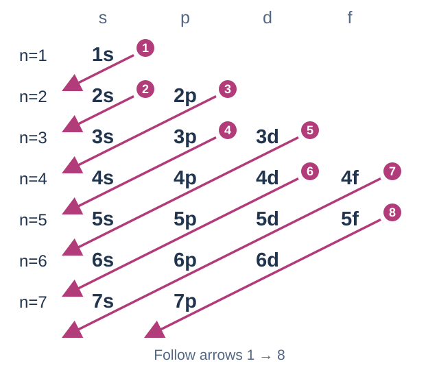
ตัวอย่างต่างโจทย์: S มี Z = 16 จัดได้เป็น \(1s^2\,2s^2\,2p^6\,3s^2\,3p^4\) หรือ \([\mathrm{Ne}]\,3s^2\,3p^4\) โดย [Ne] แทนอิเล็กตรอน 10 ตัว ถ้าต้องการผลรวมเฉพาะ 3s, 3p และ 3d ให้แยกดังนี้
| ชั้นย่อยที่ถาม | จำนวนที่มีอยู่จริง |
|---|---|
| 3s | 2 |
| 3p | 4 |
| 3d | 0 |
| รวม | 2 + 4 + 0 = 6 |
แกน [Ne] ย่อมาจาก \(1s^2\,2s^2\,2p^6\) ถ้าโจทย์ถามชั้นย่อยในแกน ต้องนำส่วนนั้นกลับมานับด้วย แต่ไม่รวมชั้นย่อยอื่นที่โจทย์ไม่ได้ถาม
คำถาม 2 — ลองเปลี่ยนชั้นย่อยที่ต้องนับ
ก. Al มีการจัดเรียง \([\mathrm{Ne}]\,3s^2\,3p^1\) จงหาจำนวนใน 2p, 3p, 3d และผลรวมเฉพาะสามชั้นย่อยนี้
ข. จากการจัดเรียงของ Al ข้างต้น จำนวนอิเล็กตรอนในชั้นหลัก 3 กับในชั้นย่อย 3p เท่ากันหรือไม่?
ค. Ca เป็นอะตอมเป็นกลาง มี Z = 20 จงเขียนการจัดเรียงแบบย่อ แล้วหาผลรวมเฉพาะ 3d, 4s และ 4p
ก. 2p มี 6 ตัวจากแกน [Ne], 3p มี 1 ตัว และ 3d ยังไม่มี จึงรวม 6 + 1 + 0 = 7 ตัว
ข. ไม่เท่ากัน ชั้นหลัก 3 รวม 3s กับ 3p ได้ 2 + 1 = 3 ตัว ส่วน 3p มีเพียง 1 ตัว
ค. Ca: \([\mathrm{Ar}]\,4s^2\) ดังนั้น 3d = 0, 4s = 2, 4p = 0 รวม 2 ตัว ตรวจยอดทั้งหมดได้ 18 + 2 = 20
อ่านต่อ: บทอะตอมและสมบัติของธาตุ → การจัดเรียงอิเล็กตรอน · สสวท. Project 14: หลักการจัดเรียง
ข้อ 2 — ชื่อธาตุ IE, EN, EA และแนวโน้มสมบัติ
โจทย์ตรวจข้อความหลายเรื่องให้แยกตรวจทีละหลักก่อน คำว่า “มากกว่า” ต้องถามต่อว่าเทียบธาตุเดียวกันหรือคนละธาตุ และคำว่า “เสมอ” ต้องมีเงื่อนไขรองรับ
ชื่อหมู่หลักและชื่อธาตุที่ควรรู้
ตารางนี้รวมธาตุตัวอย่างในหมู่หลัก 1, 2 และ 13–18 ไม่ใช่รายชื่อธาตุครบ 118 ธาตุ ตัวเลขในวงเล็บเป็นชื่อหมู่ระบบ A ที่ยังพบในหนังสือเรียน
| หมู่และชื่อกลุ่ม | สัญลักษณ์ — ชื่อไทย (ชื่ออังกฤษ) |
|---|---|
| 1 (IA) โลหะแอลคาไล Alkali metals | Li ลิเทียม (lithium) Na โซเดียม (sodium) K โพแทสเซียม (potassium) Rb รูบิเดียม (rubidium) Cs ซีเซียม (caesium) Fr แฟรนเซียม (francium) |
| 2 (IIA) โลหะแอลคาไลน์เอิร์ท Alkaline earth metals | Be เบริลเลียม (beryllium) Mg แมกนีเซียม (magnesium) Ca แคลเซียม (calcium) Sr สตรอนเชียม (strontium) Ba แบเรียม (barium) Ra เรเดียม (radium) |
| 13 (IIIA) หมู่โบรอน Boron group | B โบรอน (boron) Al อะลูมิเนียม (aluminium) Ga แกลเลียม (gallium) In อินเดียม (indium) Tl แทลเลียม (thallium) |
| 14 (IVA) หมู่คาร์บอน Carbon group | C คาร์บอน (carbon) Si ซิลิคอน (silicon) Ge เจอร์เมเนียม (germanium) Sn ดีบุก (tin) Pb ตะกั่ว (lead) |
| 15 (VA) หมู่ไนโตรเจน Nitrogen group / pnictogens | N ไนโตรเจน (nitrogen) P ฟอสฟอรัส (phosphorus) As สารหนู (arsenic) Sb พลวง (antimony) Bi บิสมัท (bismuth) |
| 16 (VIA) หมู่ออกซิเจน / แชลโคเจน Oxygen group / chalcogens | O ออกซิเจน (oxygen) S กำมะถัน (sulfur) Se ซีลีเนียม (selenium) Te เทลลูเรียม (tellurium) Po พอโลเนียม (polonium) |
| 17 (VIIA) แฮโลเจน Halogens | F ฟลูออรีน (fluorine) Cl คลอรีน (chlorine) Br โบรมีน (bromine) I ไอโอดีน (iodine) At แอสทาทีน (astatine) |
| 18 (VIIIA) แก๊สมีตระกูล Noble gases | He ฮีเลียม (helium) Ne นีออน (neon) Ar อาร์กอน (argon) Kr คริปทอน (krypton) Xe ซีนอน (xenon) Rn เรดอน (radon) |
แยก H และ He ให้ถูก: H คือไฮโดรเจน (hydrogen) อยู่หมู่ 1 แต่เป็นอโลหะ ไม่ใช่โลหะแอลคาไล ส่วน He อยู่หมู่ 18 แม้มีเวเลนซ์อิเล็กตรอนเพียง 2 ตัว เพราะชั้นแรกเต็มแล้ว หมู่ 3–12 เป็นบริเวณ d-block เช่น Fe เหล็ก (iron), Cu ทองแดง (copper), Zn สังกะสี (zinc) แยกจากแปดหมู่หลักนี้
คำถาม 3 — ชื่อกลุ่มบอกอะไร
ก. กำหนด Rb อยู่หมู่ 1 และ Sr อยู่หมู่ 2 โลหะทั้งสองอยู่ในกลุ่มชื่อใดตามลำดับ?
ข. เหตุใดการเห็นธาตุอยู่หมู่ 1 เพียงอย่างเดียวจึงยังใช้เรียกทุกธาตุในหมู่ว่าโลหะแอลคาไลไม่ได้?
ก. Rb เป็นโลหะแอลคาไล ส่วน Sr เป็นโลหะแอลคาไลน์เอิร์ท
ข. ต้องแยก H ซึ่งเป็นอโลหะออกจากโลหะหมู่ 1 ตำแหน่งในตารางกับชื่อกลุ่มโลหะจึงมีเงื่อนไขต่างกัน
IE, EN และ EA วัดคนละเรื่อง
IE — Ionization energy / พลังงานไอออไนเซชัน: พลังงานต่ำสุดที่ต้องให้เพื่อดึงอิเล็กตรอนหนึ่งตัวออกจากอนุภาคแก๊ส สำหรับ IE₁ เริ่มจากอะตอมเป็นกลางสถานะพื้น: M(g) → M⁺(g) + e⁻ จึงเป็นการดูดพลังงาน ค่า IE สูงแปลว่าดึงออกยาก มักรายงานเป็น kJ/mol
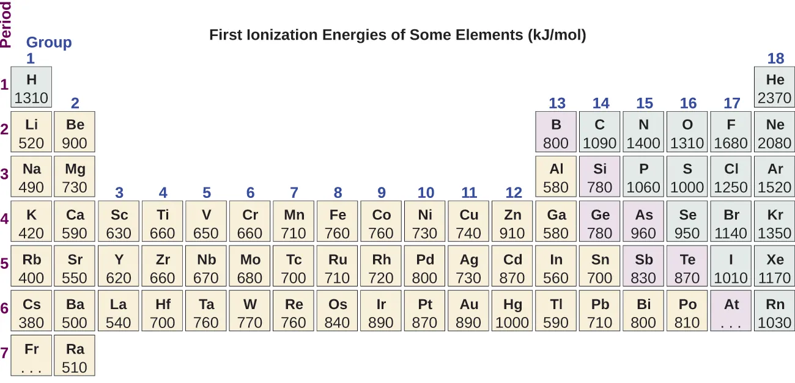
EN — Electronegativity / อิเล็กโทรเนกาติวิตี: ความสามารถของอะตอมในการดึงอิเล็กตรอนของพันธะเข้าหาตน ไม่ใช่การรับอิเล็กตรอนอิสระ ค่า EN ตามสเกล Pauling ไม่มีหน่วย โดยทั่วไปสูงขึ้นเมื่อไปขวาและขึ้นบน F สูงสุดประมาณ 4.0 ตารางพื้นฐานมักเว้นแก๊สมีตระกูล ไม่ตีความช่องว่างว่า EN = 0
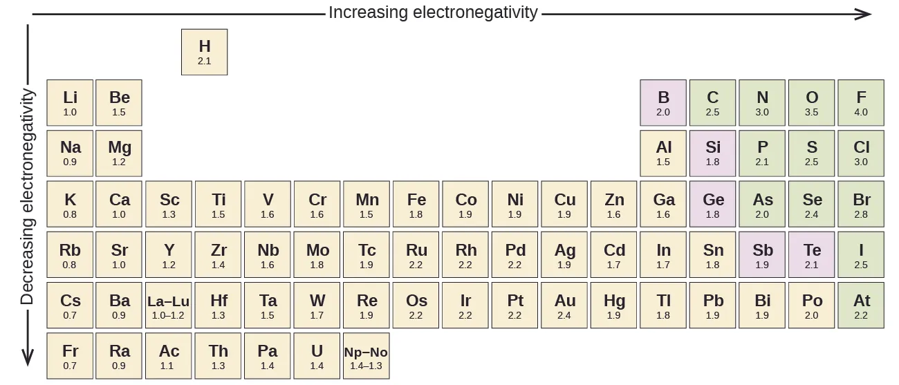
EA — Electron affinity / สัมพรรคภาพอิเล็กตรอน: เกี่ยวกับพลังงานเมื่ออะตอมเป็นกลางในสถานะแก๊สรับอิเล็กตรอนหนึ่งตัว: X(g) + e⁻ → X⁻(g) ต่างจาก EN ซึ่งดูอิเล็กตรอนในพันธะ ต้องอ่านนิยามเครื่องหมายก่อนเสมอ
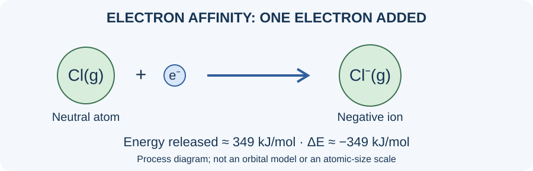
ตัวอย่างเครื่องหมาย: Cl รับอิเล็กตรอนแล้วคายพลังงานประมาณ 349 kJ/mol ถ้ารายงาน “พลังงานที่คาย” จะเขียน EA ≈ +349 kJ/mol แต่ถ้ารายงานการเปลี่ยนพลังงานของขั้นรับอิเล็กตรอน จะเขียน ΔE ≈ −349 kJ/mol กล่าวถึงกระบวนการเดียวกัน ไม่ใช่ค่าที่ขัดแย้งกัน
แนวโน้ม EA ไม่สม่ำเสมอเท่า EN: ในภาพรวมการรับอิเล็กตรอนมักคายพลังงานมากขึ้นไปทางขวาของคาบ แต่มีข้อยกเว้นมาก เช่น หมู่ 2, 15, 18 และ Cl คายพลังงานมากกว่า F จึงห้ามใช้ “ขึ้นขวาเพิ่มเสมอ” ตัดสินทุกคู่ โดยเฉพาะแก๊สมีตระกูล
คำถาม 4 — แยกการดึงออก การดึงในพันธะ และการรับเข้า
ก. Na(g) → Na⁺(g) + e⁻, การดึงอิเล็กตรอนใน H–Cl และ Cl(g) + e⁻ → Cl⁻(g) ตรงกับ IE, EN หรือ EA ตามลำดับ?
ข. ถ้าตารางบอกว่า Cl รับอิเล็กตรอนแล้ว “คาย 349 kJ/mol” การเปลี่ยนพลังงานของขั้นรับเป็นบวกหรือลบ? F มี EN สูงสุด จึงต้องคายพลังงานเมื่อรับอิเล็กตรอนมากกว่า Cl ด้วยหรือไม่?
ก. IE₁, EN และ EA ตามลำดับ IE/EA เป็นเรื่องพลังงานของกระบวนการ ส่วน EN ตาม Pauling เป็นค่าเปรียบเทียบไม่มีหน่วย
ข. เป็นลบประมาณ −349 kJ/mol และสรุปจาก EN แบบนั้นไม่ได้ Cl คายมากกว่า F เป็นข้อยกเว้นสำคัญของ EA
เปรียบเทียบขนาดและ EN พร้อมเหตุผล
| สิ่งที่เปรียบเทียบ | แนวโน้มพื้นฐานของธาตุหมู่หลัก | เหตุผลที่ใช้ |
|---|---|---|
| ซ้ายไปขวาในคาบเดียวกัน | รัศมีอะตอมโดยทั่วไปลดลง | จำนวนโปรตอนเพิ่ม ขณะที่อิเล็กตรอนชั้นนอกยังอยู่ชั้นหลักเดียวกัน แรงดึงที่มีผลจึงเพิ่ม |
| บนลงล่างในหมู่เดียวกัน | รัศมีโดยทั่วไปเพิ่ม และ EN โดยทั่วไปลด | เพิ่มชั้นอิเล็กตรอน ระยะและการกำบังเพิ่ม |
| ไอออนเทียบกับอะตอมของธาตุเดียวกัน | ไอออนบวกเล็กลง ไอออนลบใหญ่ขึ้นตามแบบจำลองพื้นฐาน | จำนวนอิเล็กตรอนและแรงผลักเปลี่ยน ขณะที่จำนวนโปรตอนคงเดิม |
EN คือความสามารถดึงอิเล็กตรอนที่ใช้ร่วมกันในพันธะเข้าหาตน แนวโน้มข้างต้นใช้เป็นภาพรวม ต้องอ่านชนิดอนุภาคและเงื่อนไขของคู่ที่เปรียบเทียบด้วย
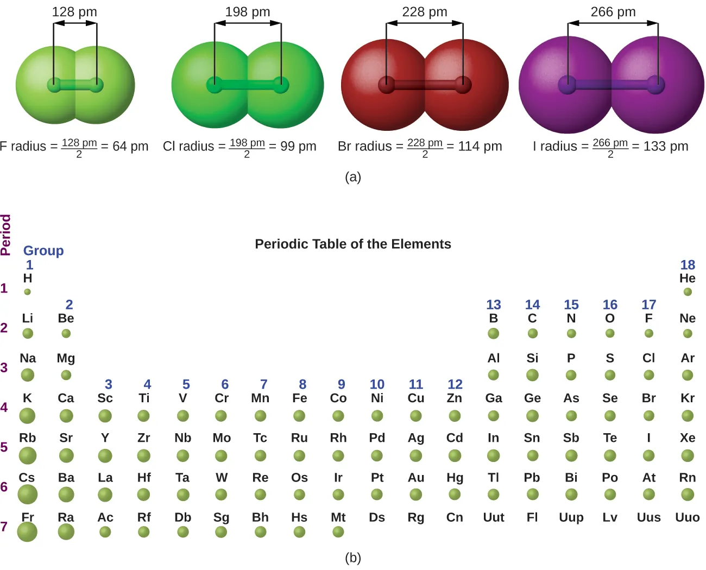
จำเหตุผลคู่กับทิศ: ในคาบเดียวกัน IE₁ และ EN โดยทั่วไปเพิ่มเพราะแรงดึงจากนิวเคลียสที่มีผลสูงขึ้น ลงหมู่ IE₁ และ EN โดยทั่วไปลดเพราะเพิ่มชั้นและการกำบัง ข้อยกเว้น IE₁ เช่น Be → B เริ่มดึงจาก 2p ที่ดึงง่ายกว่า 2s และ N → O มีการจับคู่ใน 2p เพิ่มแรงผลัก
คำถาม 5 — ระบุคู่เปรียบเทียบก่อนใช้ลูกศร
ก. K กับ Ca อยู่คาบ 4 เหมือนกัน อะตอมใดมีรัศมีมากกว่าโดยทั่วไป เพราะอะไร?
ข. O กับ S อยู่หมู่ 16 เหมือนกัน อะตอมใดใหญ่กว่า และธาตุใดมี EN สูงกว่า?
ค. เทียบ \(\mathrm{Mg^{2+}}\) กับ Mg และ \(\mathrm{F^-}\) กับ F ไอออนใดเล็กลงหรือใหญ่ขึ้นจากอะตอมเดิม?
ก. K ใหญ่กว่า Ca โดยทั่วไป ในคาบเดียวกันแรงดึงที่มีผลเพิ่มจาก K ไป Ca จึงดึงอิเล็กตรอนให้ใกล้ขึ้น
ข. S ใหญ่กว่าเพราะมีชั้นหลักเพิ่ม ส่วน O มี EN สูงกว่า เพราะอยู่ด้านบนของหมู่
ค. Mg²⁺ เล็กกว่า Mg ส่วน F⁻ ใหญ่กว่า F การเสียกับรับอิเล็กตรอนให้ผลต่อขนาดต่างกัน
IE แต่ละลำดับเริ่มจากอนุภาคต่างกัน
พลังงานไอออไนเซชันคือพลังงานที่ใช้ดึงอิเล็กตรอนออกจากอะตอมหรือไอออนในสถานะแก๊ส สำหรับธาตุเดียวกัน ลำดับถัดไปใช้พลังงานมากขึ้น เพราะกำลังดึงออกจากไอออนบวกที่ยึดอิเล็กตรอนที่เหลือแน่นขึ้น ต้องมีอิเล็กตรอนเหลือให้ดึงในลำดับนั้นด้วย
| ลำดับ | สมการแสดงการดึงออกหนึ่งตัว |
|---|---|
| \(IE_1\) | \(\mathrm{M(g)\rightarrow M^+(g)+e^-}\) |
| \(IE_2\) | \(\mathrm{M^+(g)\rightarrow M^{2+}(g)+e^-}\) |
ตัวอย่างข้อมูลสมมติ: ถ้า \(IE_1=400\) และ \(IE_2=2200\,\mathrm{kJ\,mol^{-1}}\) การเปลี่ยน M(g) เป็น M²⁺(g) ต้องรวมสองขั้น จึงใช้ 400 + 2200 = 2600 kJ ต่ออะตอม M 1 mol ส่วนการเริ่มจาก M⁺(g) แล้วดึงอีกหนึ่งตัวใช้เพียง IE₂
คำถาม 6 — อ่านอนุภาคตั้งต้นของแต่ละขั้น
ก. \(\mathrm{Ca^+(g)\rightarrow Ca^{2+}(g)+e^-}\) ใช้ IE ลำดับใด?
ข. ถ้าเริ่มจาก Ca(g) แล้วต้องการ Ca²⁺(g) ต้องใช้ IE₂ อย่างเดียว หรือรวมพลังงานใดบ้าง?
ค. H⁺ ยังมีอิเล็กตรอนเหลือให้ดึงหรือไม่ จึงนิยาม IE₂ ของอะตอม H ด้วยขั้นตอนเดียวกันนี้ได้หรือไม่?
ก. IE₂ เพราะเริ่มจากไอออนประจุ +1 แล้วดึงอิเล็กตรอนออกอีกหนึ่งตัว
ข. รวม IE₁ + IE₂ เพราะต้องดึงออกสองตัวจากอะตอมเป็นกลาง การดูเฉพาะประจุสุดท้ายยังไม่บอกพลังงานทั้งหมด
ค. H⁺ ไม่มีอิเล็กตรอน จึงไม่มีการดึงอิเล็กตรอนตัวที่สองตามนิยามนี้ ต้องตรวจว่าลำดับที่กล่าวถึงมีอิเล็กตรอนให้ดึงจริง
อ่านต่อ: บทอะตอมและสมบัติของธาตุ → ตารางธาตุและสมบัติของธาตุหมู่หลัก · สสวท. Project 14: พลังงานไอออไนเซชัน
แหล่งนิยามและเนื้อหา: IUPAC · Electron affinity · IUPAC · Ionization energy
ข้อ 3 — แยกส่วนที่สลายกับส่วนที่เหลือ แล้วนับครึ่งชีวิต
ครึ่งชีวิต \(T_{1/2}\) คือเวลาที่ปริมาณนิวเคลียสเดิมที่ยังไม่สลายเหลือครึ่งหนึ่งของตอนเริ่มช่วงนั้น ใช้กับตัวอย่างที่มีนิวเคลียสจำนวนมาก และเป็นสมบัติของไอโซโทป ไม่ได้เปลี่ยนเพียงเพราะเริ่มด้วยปริมาณมากหรือน้อย
กำหนด \(N_0\) เป็นจำนวนเริ่มต้น และ \(N\) เป็นจำนวนเดิมที่ยังไม่สลาย: สัดส่วนที่เหลือ คือ \(N/N_0\) ส่วน สัดส่วนที่สลายไป คือ \(1-N/N_0\) ต้องแปลงข้อความให้เป็นสัดส่วนที่เหลือก่อนนับครั้งที่หารสอง
คำถาม 7 — ส่วนที่เหลือกับส่วนที่สลาย
ก. ถ้าสลายไป 3/4 ของปริมาณตั้งต้น เหลือส่วนของนิวเคลียสเดิมเท่าไร?
ข. ถ้ายังเหลือ 40% สลายไปกี่เปอร์เซ็นต์?
ก. เหลือ 1 − 3/4 = 1/4 ของปริมาณตั้งต้น
ข. สลายไป 100% − 40% = 60%
แต่ละช่วงลดครึ่งหนึ่งของส่วนที่ยังเหลือ
| จำนวนครึ่งชีวิต k | สัดส่วนที่เหลือ |
|---|---|
| 0 | 1 |
| 1 | 1/2 |
| 2 | 1/4 |
| 3 | 1/8 |
| 4 | 1/16 |
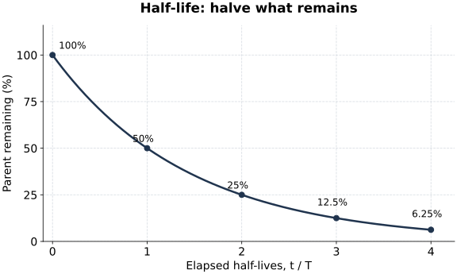
ความสัมพันธ์ทั่วไปคือ \(N=N_0\left(\frac12\right)^{t/T_{1/2}}\) ถ้าทราบจำนวนครั้งที่หารสองเป็น k แล้ว ใช้ \(t=kT_{1/2}\) โดย t และ \(T_{1/2}\) ต้องใช้หน่วยเวลาเดียวกัน สำหรับมวลของไอโซโทปเดิมที่ยังเหลือ ใช้สัดส่วนเดียวกับจำนวนของมันได้
คำถาม 8 — ติดตามปริมาณทีละช่วง
ก. ไอโซโทป X เริ่ม 64 mg มีครึ่งชีวิต 8 ชั่วโมง หลัง 16 ชั่วโมง เหลือ X กี่ mg และ X เดิมสลายไปกี่ mg?
ข. ปริมาณ X ที่สลายในช่วง 0–8 ชั่วโมง กับ 8–16 ชั่วโมงเท่ากันหรือไม่ แสดงค่าของแต่ละช่วง
ก. 16 ชั่วโมง = 2 ครึ่งชีวิต: 64 → 32 → 16 mg จึงเหลือ 16 mg และสลายไป 64 − 16 = 48 mg
ข. ไม่เท่ากัน ช่วงแรกสลาย 64 − 32 = 32 mg ช่วงถัดมาสลาย 32 − 16 = 16 mg แต่ทั้งสองช่วงลดครึ่งหนึ่งของปริมาณต้นช่วง
ตัวอย่างย้อนหาครึ่งชีวิตด้วยข้อมูลต่างโจทย์
ไอโซโทป Y สลายไป 15/16 ในเวลา 40 ชั่วโมง → เหลือ 1/16 → ต้องหารสอง 4 ครั้ง → \(40=4T_{1/2}\) จึงได้ \(T_{1/2}=10\) ชั่วโมง ตรวจย้อน: 10, 20, 30, 40 ชั่วโมง เหลือ 1/2, 1/4, 1/8, 1/16 ตามลำดับ
คำถาม 9 — ย้อนหาแล้วตรวจกลับ
ก. ไอโซโทป Z สลายไป 3/4 ในเวลา 28 ชั่วโมง จงหาครึ่งชีวิต พร้อมตรวจว่าส่วนที่เหลือตรงเงื่อนไข
ข. ถ้าใช้ไอโซโทป Z ชนิดเดิม แต่เพิ่มปริมาณตั้งต้นเป็นสองเท่า ครึ่งชีวิตต้องเพิ่มเป็นสองเท่าหรือไม่?
ก. เหลือ 1/4 เท่ากับหารสอง 2 ครั้ง จึงได้ \(28=2T_{1/2}\) และ \(T_{1/2}=14\) ชั่วโมง ตรวจที่ 14 และ 28 ชั่วโมง จะเหลือ 1/2 และ 1/4 จึงสลายไป 3/4
ข. ครึ่งชีวิตยังเท่าเดิม ภายใต้เงื่อนไขการสลายเดียวกัน ปริมาณตั้งต้นเพิ่มทำให้ปริมาณที่เหลือแต่ละเวลามากขึ้น แต่เวลาที่ลดเป็นครึ่งหนึ่งไม่เพิ่มตาม
อ่านต่อ: บทอะตอมและสมบัติของธาตุ → ธาตุกัมมันตรังสี → ครึ่งชีวิต · สสวท. Project 14: ครึ่งชีวิต
ข้อ 4 — นับบริเวณอิเล็กตรอน แล้วแยกรูปร่างกับขั้ว
ทางเดิน: เขียนลิวอิส → นับบริเวณรอบอะตอมกลาง → หารูปร่าง → รวมขั้วพันธะ → ตรวจเงื่อนไขของคู่สารให้ครบ
นับบริเวณให้ถูกก่อนจำชื่อรูปร่าง
รวมเวเลนซ์อิเล็กตรอน วางโครงร่างและพันธะ เติมอิเล็กตรอนที่อะตอมปลาย แล้วตรวจคู่โดดเดี่ยวบนอะตอมกลาง พันธะเดี่ยว คู่ หรือสาม นับเป็นหนึ่งบริเวณต่ออะตอมปลายหนึ่งอะตอม คู่โดดเดี่ยวบนอะตอมกลางแต่ละคู่นับเพิ่มหนึ่งบริเวณ
ตรวจยอดอิเล็กตรอนก่อนเติมคู่โดดเดี่ยว: อะตอมกลางบางชนิดมีอิเล็กตรอนรอบตัวน้อยกว่าหรือมากกว่าแปดได้ เช่น BCl₃ มีเวเลนซ์อิเล็กตรอนรวม \(3+3(7)=24\) ตัว เมื่อวางสามพันธะและเติม Cl ครบแล้ว ไม่เหลือคู่โดดเดี่ยวบน B แม้รอบ B มีเพียง 6 อิเล็กตรอน
ใน \(\mathrm{AX}_{m}\mathrm{E}_{n}\): A คืออะตอมกลาง X คืออะตอมที่ติดกับ A และ E คือคู่โดดเดี่ยวบน A จำนวนบริเวณเท่ากับ \(m+n\) รูปร่างโมเลกุลดูตำแหน่งของอะตอม ส่วนคู่โดดเดี่ยวยังมีผลต่อการจัดตัว
ตัวอย่างต่างโจทย์ — PCl₃: เวเลนซ์อิเล็กตรอนรวม \(5+3(7)=26\) ตัว ใช้ทำพันธะ P–Cl สามพันธะ 6 ตัว และเติมคู่โดดเดี่ยวที่ Cl ทั้งสามอะตอม 18 ตัว เหลือ 2 ตัวเป็นคู่โดดเดี่ยวบน P จึงเป็น AX₃E มี 4 บริเวณ แต่รูปร่างเป็นพีระมิดฐานสามเหลี่ยม
คำถาม 10 — อ่านลิวอิสก่อนเลือกรูปร่าง
ก. SCl₂ มีเวเลนซ์อิเล็กตรอนรวมกี่ตัว? เมื่อเขียนลิวอิสแล้ว S มีคู่โดดเดี่ยวกี่คู่ และมีกี่บริเวณรอบ S?
ข. กำหนดโครงสร้าง H–C≡N: รอบ C มีกี่บริเวณ และเป็น AX แบบใด?
ก. รวม \(6+2(7)=20\) ตัว พันธะ S–Cl สองพันธะใช้ 4 ตัว คู่โดดเดี่ยวที่ Cl ใช้ 12 ตัว จึงเหลือ 4 ตัวเป็นสองคู่บน S: รวม 4 บริเวณ เป็น AX₂E₂
ข. มี 2 บริเวณ คือ C–H หนึ่งบริเวณ และ C≡N อีกหนึ่งบริเวณ เป็น AX₂ พันธะสามไม่นับเป็นสามบริเวณ
VSEPR และการอ่านภาพสามมิติ
VSEPR (Valence-Shell Electron-Pair Repulsion) คือแบบจำลองการผลักกันของคู่อิเล็กตรอนในชั้นเวเลนซ์ บริเวณอิเล็กตรอนรอบ A จัดตัวให้ห่างกันเพื่อลดการผลัก ต้องแยก “การจัดบริเวณอิเล็กตรอน” ซึ่งนับทั้งพันธะและคู่โดดเดี่ยว ออกจาก “รูปร่างโมเลกุล” ซึ่งดูเฉพาะตำแหน่งอะตอม
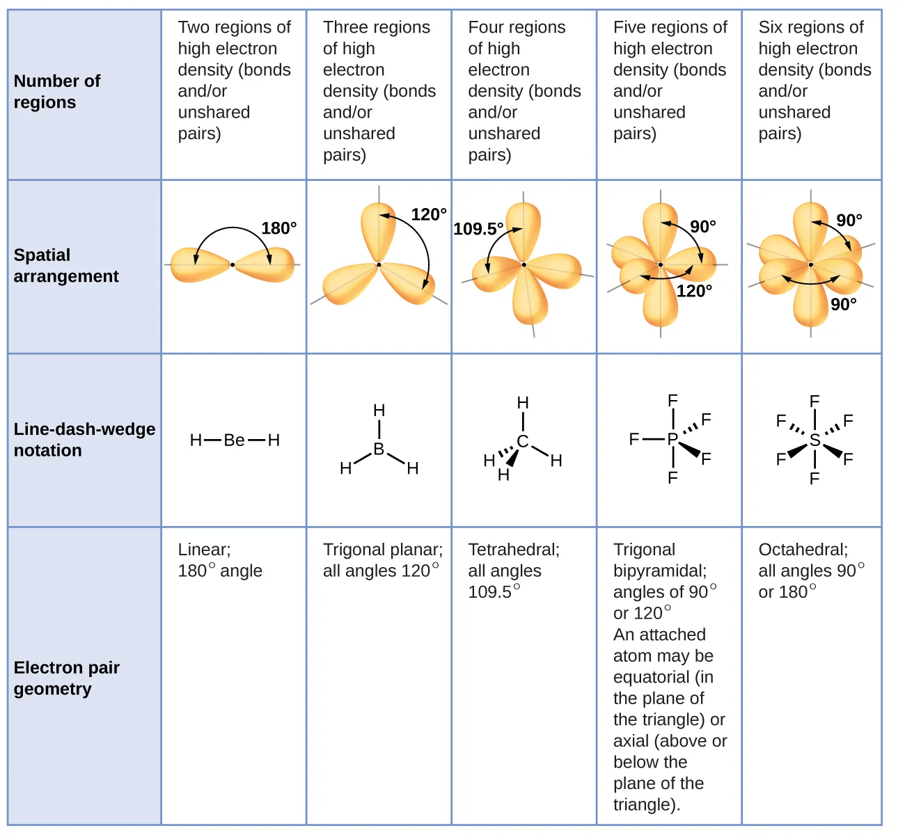
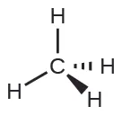
ตารางเลือกชื่อรูปร่าง
| บริเวณ / แบบ AX | รูปร่างโมเลกุล | มุม X–A–X พื้นฐาน |
|---|---|---|
| 2 AX₂ | เส้นตรง | 180° |
| 3 AX₃ | สามเหลี่ยมแบนราบ | 120° |
| 3 AX₂E | มุมงอ | < 120° |
| 4 AX₄ | ทรงสี่หน้า | 109.5° |
| 4 AX₃E | พีระมิดฐานสามเหลี่ยม | < 109.5° |
| 4 AX₂E₂ | มุมงอ | < 109.5° |
| 5 AX₅ | พีระมิดคู่ฐานสามเหลี่ยม | 90°, 120°, 180° |
| 5 AX₄E | กระดานหก | ≈ 90°, ≈ 120°, ≈ 180° |
| 5 AX₃E₂ | รูปตัวที | ≈ 90°, ≈ 180° |
| 5 AX₂E₃ | เส้นตรง | 180° |
| 6 AX₆ | ทรงแปดหน้า | 90°, 180° |
| 6 AX₅E | พีระมิดฐานสี่เหลี่ยม | ≈ 90°, ≈ 180° |
| 6 AX₄E₂ | สี่เหลี่ยมแบนราบ | 90°, 180° |
เครื่องหมาย ≈ หมายถึงมุมใกล้ค่าอ้างอิงและอาจบิดเบี้ยวจากคู่โดดเดี่ยว ใน AX₄E มุม 90°/120° มักถูกบีบลง ส่วนมุมระหว่างตำแหน่งตรงข้ามอาจเบี่ยงจาก 180° จึงไม่ให้มุมหนึ่งค่าแทนทุกมุมของโมเลกุล
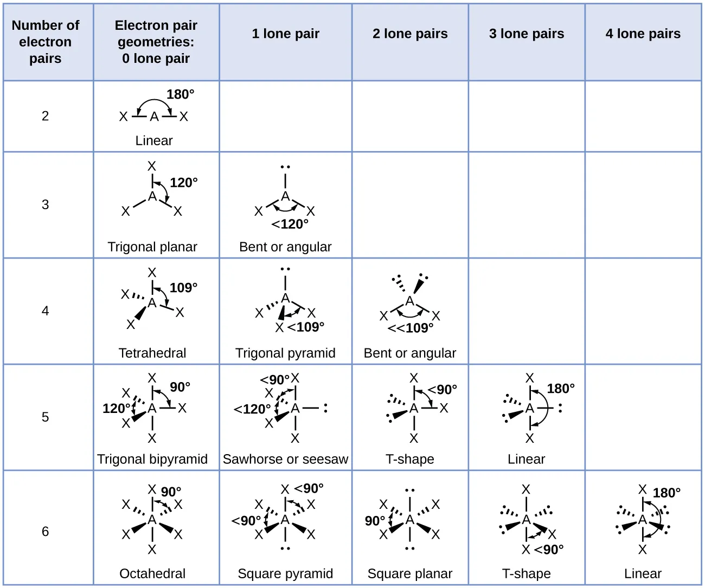
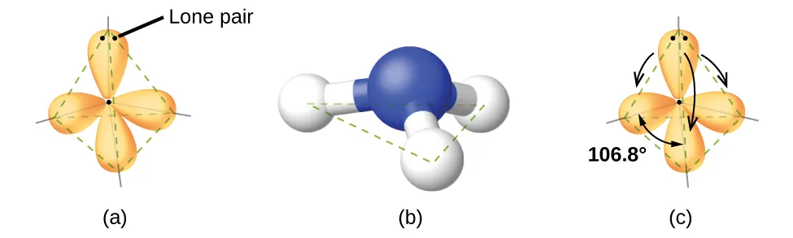
คำถาม 11 — อ่านรูปทรงและมุมโดยไม่สับสนกับจำนวนบริเวณ
ก. CH₄, NH₃ และ H₂O ต่างมี 4 บริเวณรอบอะตอมกลาง เหตุใดรูปร่างและมุมพันธะจึงไม่เท่ากัน?
ข. ในภาพลิ่ม–ประ ลิ่มทึบและลิ่มประชี้ไปทางใด? สำหรับ AX₅ มุมทุกคู่เป็น 120° หรือไม่?
ก. จำนวนคู่โดดเดี่ยวเป็น 0, 1 และ 2 ตามลำดับ จึงเป็นทรงสี่หน้า พีระมิดฐานสามเหลี่ยม และมุมงอ โดยตัวอย่างมุมคือ 109.5°, 107°, 104.5° ตามลำดับ
ข. ลิ่มทึบยื่นออกจากกระดาษหาเรา ลิ่มประอยู่หลังกระดาษ AX₅ มีมุมอุดมคติ 120° ระหว่างแนวเส้นศูนย์สูตร, 90° ระหว่างแกนกับแนวเส้นศูนย์สูตร และ 180° ระหว่างสองแกนตรงข้าม
ตำแหน่งคู่โดดเดี่ยวต้องเหมาะกับการผลักกันด้วย: ในชุด 5 บริเวณ คู่โดดเดี่ยวลงตำแหน่งแนวเส้นศูนย์สูตรก่อน ส่วน AX₄E₂ ในชุด 6 บริเวณ คู่โดดเดี่ยวสองคู่อยู่ตรงข้ามกัน จึงเหลืออะตอมปลายในระนาบสี่เหลี่ยม
คำถาม 12 — เลข X เท่ากัน ยังต้องดู E
ก. AX₄E มี X กี่อะตอม คู่โดดเดี่ยวกี่คู่ รวมกี่บริเวณ และมีรูปร่างใด?
ข. AX₄E₂ มีจำนวนอะตอมปลายเท่าข้อ ก. แต่รูปร่างเหมือนกันหรือไม่? อธิบายสั้น ๆ
ก. X 4 อะตอม คู่โดดเดี่ยว 1 คู่ รวม 5 บริเวณ รูปร่างกระดานหก
ข. ไม่เหมือน: AX₄E₂ มี 6 บริเวณและคู่โดดเดี่ยวตรงข้ามกันสองคู่ จึงเป็นสี่เหลี่ยมแบนราบ ต้องนับทั้ง X และ E
มีขั้วพันธะ แล้วหักล้างกันหรือไม่?
ใช้ EN ดูทิศขั้วพันธะ แล้วรวมเวกเตอร์ตามรูปร่างสามมิติ ผลรวมเป็นศูนย์ → โมเลกุลไม่มีขั้ว; ผลรวมไม่เป็นศูนย์ → มีขั้ว รูปร่างเหมือนกันไม่ได้รับประกันว่าขั้วเหมือนกัน ต้องดูชนิดอะตอมปลายและขนาดขั้วพันธะด้วย
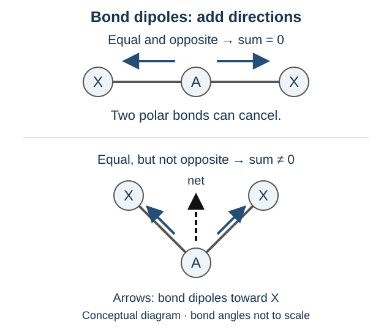
ตัวอย่างต่างโจทย์: SiF₄ เป็นทรงสี่หน้าและมี F เหมือนกันทั้งสี่ตำแหน่ง ขั้วพันธะจึงหักล้างกัน แม้พันธะ Si–F มีขั้ว ส่วน PCl₃ มีรูปร่างพีระมิดฐานสามเหลี่ยม ขั้วพันธะ P–Cl รวมกันไม่เป็นศูนย์
คำถาม 13 — ตรวจรูปร่างและขั้วคนละขั้น
ก. CF₄ กับ CHF₃ ต่างมีรูปร่างทรงสี่หน้ารอบ C ทั้งคู่ไม่มีขั้วหรือไม่? เพราะอะไร?
ข. HCN มีโครงสร้างเส้นตรง H–C≡N การเป็นเส้นตรงเพียงอย่างเดียวพอให้สรุปว่าไม่มีขั้วหรือไม่?
ก. ไม่ใช่: CF₄ ไม่มีขั้วเพราะพันธะ C–F สมมูลกันสี่ทิศและหักล้างกัน ส่วน CHF₃ มี H แทน F หนึ่งตำแหน่ง ขั้วจึงไม่หักล้างหมดและโมเลกุลมีขั้ว
ข. ไม่พอ อะตอมปลาย H และ N ต่างกัน ขั้วพันธะไม่ได้เป็นคู่ขนาดเท่ากันทิศตรงข้าม HCN จึงมีขั้ว ต้องพิจารณาทั้งรูปร่างและพันธะ
อ่านต่อ: บทพันธะเคมี → พันธะโคเวเลนต์: ลิวอิส VSEPR และขั้ว · สสวท.: รูปร่างโมเลกุล · สสวท.: สภาพขั้ว
ข้อ 5 — แรงระหว่างโมเลกุล สมบัติของสาร และการละลาย
เริ่มจากชนิดอนุภาค: สารโมเลกุลมีโมเลกุลแยกหน่วยได้ แต่ KBr เป็นผลึกไอออน และเพชรเป็นโครงผลึกโคเวเลนต์ต่อเนื่อง จึงไม่ใช้ชื่อแรงระหว่างโมเลกุลแทนแรงยึดเหนี่ยวหลักในผลึกทั้งสองแบบ
แรงยึดเหนี่ยวระหว่างโมเลกุลคืออะไร?
พันธะโคเวเลนต์ยึดอะตอมให้เป็นโมเลกุล ส่วนแรงระหว่างโมเลกุลยึดโมเลกุลหลายตัวให้อยู่ใกล้กัน เช่น O–H ภายในน้ำหนึ่งโมเลกุลต่างจากแรงยึดเหนี่ยวระหว่างน้ำคนละโมเลกุล เมื่อน้ำเดือด โมเลกุลแยกห่างเป็นไอน้ำ H₂O ไม่ได้แปลว่าตัดพันธะ O–H ให้เป็น H₂ และ O₂
1. แรงลอนดอน: มีได้แม้โมเลกุลไม่มีขั้ว
อิเล็กตรอนเคลื่อนที่ทำให้การกระจายประจุไม่สมมาตรชั่วขณะ จึงเกิดขั้วชั่วขณะที่เหนี่ยวนำให้อีกอนุภาคเกิดขั้วและดึงดูดกัน เรียกแรงลอนดอนหรือแรงแผ่กระจาย มีในอะตอมและโมเลกุลทุกชนิด ทั้งมีขั้วและไม่มีขั้ว ไม่ต้องมี O, N หรือ F
เมฆอิเล็กตรอนที่บิดเบือนได้ง่ายมีสภาพขั้วได้สูง จึงมักให้แรงลอนดอนมากขึ้น ในสารตระกูลเดียวกัน อนุภาคใหญ่หรือมีอิเล็กตรอนมากกว่ามักมีแรงมากกว่า รูปร่างและพื้นที่สัมผัสก็สำคัญ เช่น ไอโซเมอร์แอลเคนที่แตกกิ่งมากมักสัมผัสกันได้น้อยกว่าและมีจุดเดือดต่ำกว่าแบบสายตรง ไม่ใช้มวลโมเลกุลเพียงตัวเดียวตัดสินทุกสาร
2. แรงระหว่างขั้วถาวร: ต้องดูขั้วของทั้งโมเลกุล
โมเลกุลมีขั้วมีด้าน δ⁺ และ δ⁻ อย่างถาวร ด้านต่างขั้วของโมเลกุลข้างเคียงจึงดึงดูดกัน ต้องรวมขั้วพันธะตามรูปร่างจากข้อ 4 ก่อน เช่น CO₂ มีพันธะมีขั้วแต่โมเลกุลไม่มีขั้ว จึงไม่ใช้เกณฑ์ “มีพันธะมีขั้วหนึ่งพันธะแล้วเป็นโมเลกุลมีขั้วเสมอ”
3. พันธะไฮโดรเจน: ตรวจทั้งผู้ให้และผู้รับ
ในเกณฑ์พื้นฐานที่ใช้ในบทนี้ ผู้ให้มี H ที่ต่อกับ N, O หรือ F โดยตรง และผู้รับมีคู่โดดเดี่ยวบนอะตอมที่เหมาะสมของอีกโมเลกุล เช่น O–H···O ของน้ำ เส้นจุด H···O เป็นแรงระหว่างโมเลกุล ต่างจากเส้นพันธะ O–H ภายในโมเลกุล การมี H กับ O อยู่คนละตำแหน่งในสูตรยังไม่รับประกันว่ามีผู้ให้
คำถาม 14 — อธิบายแรงก่อนจัดประเภท
ก. โมเลกุลไม่มีขั้วยังดึงดูดกันได้อย่างไร? เมื่อเอทานอลมีพันธะไฮโดรเจน แรงลอนดอนหายไปหรือไม่?
ข. น้ำเดือดเป็นไอแล้ว O–H ภายในโมเลกุลต้องแตกหรือไม่? ระบุสิ่งที่เปลี่ยนจริง
ก. เกิดขั้วชั่วขณะและขั้วเหนี่ยวนำ จึงมีแรงลอนดอน และแรงลอนดอนยังอยู่ในเอทานอลร่วมกับแรงประเภทอื่น
ข. ไม่ต้องแตกในการเปลี่ยนสถานะนี้ โมเลกุล H₂O แยกห่างและเอาชนะแรงระหว่างโมเลกุล ไม่ใช่ปฏิกิริยาแยกน้ำเป็นธาตุ
สารโมเลกุลหนึ่งชนิดมีแรงอะไรบ้าง?
| สิ่งที่ตรวจ | แรงที่พิจารณาในสารบริสุทธิ์ |
|---|---|
| ทุกโมเลกุล | มีแรงลอนดอนจากขั้วชั่วขณะ |
| โมเลกุลมีขั้ว | มีแรงระหว่างขั้วถาวรเพิ่มด้วย |
| มี H ต่อกับ N, O หรือ F โดยตรง และมีตำแหน่งรับที่เหมาะสมในอีกโมเลกุล | เกิดพันธะไฮโดรเจนระหว่างโมเลกุลได้เพิ่มด้วย |
พันธะไฮโดรเจนเป็นแรงดึงดูดเฉพาะแบบหนึ่งของโมเลกุลมีขั้ว มีพันธะไฮโดรเจนไม่ได้ทำให้แรงลอนดอนหายไป หากถามแรงเด่น ให้ระบุแรงที่ใช้แยกพฤติกรรมของสารนั้น โดยไม่ตีความว่าเหลือแรงเพียงชนิดเดียว
คำถาม 15 — แยกแรงทั้งหมดกับแรงที่ใช้จำแนก
ก. ระหว่างโมเลกุล F₂ ด้วยกัน พิจารณาแรงชนิดใด?
ข. ระหว่างโมเลกุล HBr ด้วยกัน มีแรงลอนดอนและแรงระหว่างขั้วหรือไม่? จัดเป็นพันธะไฮโดรเจนแบบ N–H/O–H/F–H หรือไม่?
ค. ระหว่างโมเลกุล C₂H₅OH ด้วยกัน เกิดแรงสามประเภทในตารางใดบ้าง?
ก. F₂ ไม่มีขั้ว พิจารณาแรงลอนดอน
ข. มีทั้งแรงลอนดอนและแรงระหว่างขั้วถาวร แต่ H–Br ไม่เข้าเกณฑ์พันธะไฮโดรเจนที่ใช้ในระดับนี้
ค. มีทั้งลอนดอน แรงระหว่างขั้ว และพันธะไฮโดรเจน: เอทานอลมี O–H เป็นตำแหน่งให้ และ O มีคู่โดดเดี่ยวเป็นตำแหน่งรับ
ตรวจผู้ให้และผู้รับพันธะไฮโดรเจน
ผู้ให้: H ที่ต่อกับ N/O/F โดยตรง ผู้รับ: คู่โดดเดี่ยวบนอะตอมที่รับได้ เช่น O ในอีเทอร์ ดังนั้นการมี O ในสูตรอย่างเดียวยังไม่พอจะสรุปว่าสารบริสุทธิ์เกิดพันธะไฮโดรเจนระหว่างโมเลกุลของตัวเอง
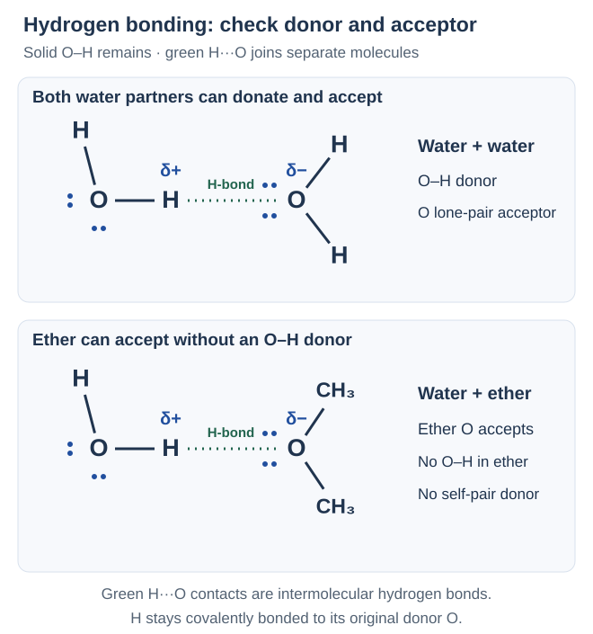
คำถาม 16 — เปลี่ยนคู่สาร แล้วแรงเปลี่ยนได้
ก. CH₃–O–CH₃ มี O แต่ไม่มี O–H อีเทอร์บริสุทธิ์นี้ให้พันธะไฮโดรเจนแก่โมเลกุลอีเทอร์อีกตัวได้หรือไม่?
ข. เมื่อนำอีเทอร์นี้ผสมกับน้ำ เกิดพันธะไฮโดรเจนระหว่างน้ำกับอีเทอร์ได้หรือไม่? ใครเป็นผู้ให้และใครเป็นผู้รับ?
ก. ไม่ได้ตามเกณฑ์นี้ เพราะไม่มี H ที่ต่อกับ N/O/F โดยตรง จึงไม่มีตำแหน่งผู้ให้ แม้ O จะมีคู่โดดเดี่ยวรับได้
ข. ได้ น้ำให้ผ่าน H ของ O–H ส่วน O ในอีเทอร์เป็นผู้รับ การไม่มีพันธะไฮโดรเจนระหว่างอีเทอร์ด้วยกันจึงไม่แปลว่าห้ามเกิดกับน้ำ
แรงเหล่านี้สัมพันธ์กับสมบัติใด และดูอย่างไร?
| สมบัติ | แนวคิดและเงื่อนไขที่ใช้เปรียบเทียบ |
|---|---|
| จุดเดือด / boiling point | เมื่อโครงสร้างและขนาดพอเทียบกันได้ แรงยึดเหนี่ยวมากมักต้องใช้พลังงานแยกโมเลกุลมาก จึงเดือดที่อุณหภูมิสูงกว่า ต้องเปรียบเทียบที่ความดันภายนอกเดียวกัน |
| การระเหยและความดันไอ | ที่อุณหภูมิเดียวกัน แรงยึดเหนี่ยวมากมักทำให้โมเลกุลหนีออกจากของเหลวยากขึ้น จึงระเหยยากและมีความดันไอต่ำกว่า |
| ความหนืดและแรงตึงผิว | แรงยึดเหนี่ยวมากมักเพิ่มสมบัติทั้งสอง แต่ต้องดูอุณหภูมิ ขนาด รูปร่าง และการพันกันของโมเลกุลร่วมด้วย |
| จุดหลอมเหลว | ขึ้นกับการจัดเรียงในผลึกและความสมมาตรด้วย ไม่เรียงจากชื่อแรงอย่างเดียวหรือสรุปว่าต้องเรียงเหมือนจุดเดือด |
| การละลาย | เปรียบเทียบแรงเดิมของตัวถูกละลายและตัวทำละลาย กับแรงใหม่ระหว่างสองชนิด รวมถึงขนาดส่วนไม่มีขั้ว ไม่ใช้ชื่อแรงของสารบริสุทธิ์ตัวเดียวตัดสิน |
ตัวอย่าง: เอทานอล CH₃CH₂OH กับไดเมทิลอีเทอร์ CH₃OCH₃ มีสูตรโมเลกุลและมวลโมลาร์เท่ากัน แต่เอทานอลมีผู้ให้ O–H จึงสร้างพันธะไฮโดรเจนระหว่างโมเลกุลตัวเองและมีจุดเดือดสูงกว่า ส่วนอีเทอร์ไม่มีผู้ให้ การเปรียบเทียบนี้คุมขนาดใกล้กันได้ดี ไม่ได้แปลว่า “สารมี H-bond ต้องเดือดสูงกว่าสารทุกชนิดที่ไม่มี H-bond”
คำถาม 17 — ใช้แรงอธิบายสมบัติ พร้อมเงื่อนไข
ก. เอทานอลกับไดเมทิลอีเทอร์ สารใดมีจุดเดือดสูงกว่า? ทำไมการเห็น O ในทั้งสองสูตรจึงยังไม่พอ?
ข. เฮกเซนกับออกเทนต่างไม่มีขั้วและมีแรงลอนดอน เหตุใดจุดเดือดจึงไม่จำเป็นต้องเท่ากัน? โดยทั่วไปคาดว่าตัวใดสูงกว่า?
ค. ที่อุณหภูมิเดียวกัน ของเหลวที่ยึดเหนี่ยวกันมากขึ้นมักมีความดันไอสูงขึ้นหรือต่ำลง? ใช้ข้อสรุปเดียวกันจัดลำดับจุดหลอมเหลวทุกสารได้ไหม?
ก. เอทานอลสูงกว่าเพราะมี O–H เป็นผู้ให้และ O เป็นผู้รับ จึงเกิดพันธะไฮโดรเจนระหว่างตัวเอง อีเทอร์มีผู้รับแต่ไม่มีผู้ให้
ข. ความแรงลอนดอนต่างกัน ออกเทนมีเมฆอิเล็กตรอนใหญ่และสภาพขั้วได้มากกว่าในสารตระกูลเดียวกัน จึงมีจุดเดือดสูงกว่าโดยทั่วไป
ค. มักต่ำลงเพราะโมเลกุลหนีออกยากขึ้น แต่จุดหลอมเหลวต้องพิจารณาการจัดผลึกและความสมมาตรเพิ่มด้วย
การละลายน้ำต้องดูแรงระหว่างสารกับน้ำด้วย
แยกสองคำถาม: สารจับกับสารแบบใด? และ สารจับกับน้ำได้เหมาะสมเพียงใด? เอทานอลมี O–H และ O จึงยึดเหนี่ยวกับน้ำได้ดี ส่วนอีเทน C₂H₆ ไม่มีขั้วและละลายน้ำได้น้อยมาก สารที่มีแรงเด่นชนิดเดียวกันไม่ได้จำเป็นต้องละลายน้ำเท่ากัน เพราะขนาดส่วนไม่มีขั้วก็มีผล
คำถาม 18 — ตรวจเงื่อนไขการละลายเพิ่ม
ก. เปรียบเทียบ C₂H₅OH กับ C₂H₆ สารใดเข้ากับน้ำได้ดีกว่า? ระบุลักษณะโครงสร้างที่ใช้ตัดสิน
ข. ถ้า KBr ละลายน้ำได้ แปลว่า KBr เป็นโมเลกุลมีพันธะไฮโดรเจนระหว่างกันหรือไม่?
ค. เอทานอลกับเฮกซาน-1-ออลต่างมี O–H เหมือนกัน จำเป็นต้องละลายน้ำดีเท่ากันหรือไม่?
ก. C₂H₅OH เข้ากับน้ำได้ดีกว่า เพราะหมู่ O–H ให้และรับพันธะไฮโดรเจนกับน้ำได้ ส่วน C₂H₆ ไม่มีขั้ว
ข. ไม่ใช่ KBr เป็นผลึกไอออน เมื่อละลายให้ K⁺ และ Br⁻ ซึ่งยึดเหนี่ยวกับน้ำด้วยแรงระหว่างไอออนกับขั้วโมเลกุลน้ำ
ค. ไม่จำเป็น เฮกซาน-1-ออลมีส่วนไฮโดรคาร์บอนไม่มีขั้วยาวกว่า จึงละลายน้ำได้น้อยกว่า การมี O–H อย่างเดียวไม่กำหนดการละลายทั้งหมด
อ่านต่อ: บทพันธะเคมี → พันธะโคเวเลนต์: แรงระหว่างโมเลกุลและการละลาย · สสวท.: แรงยึดเหนี่ยวระหว่างโมเลกุล
แหล่งนิยามและเนื้อหา: Intermolecular forces
ข้อ 6 — พื้นฐานแก๊สอุดมคติ สมการ และความชันกราฟ
เงื่อนไข: แก๊สอุดมคติ แต่ละเส้นมี \(n\) และ \(P\) คงตัว เมื่อเปลี่ยน \(T\) จึงได้กราฟ \(V\) กับ \(T\) เป็นเส้นตรง
แก๊สอุดมคติคืออะไร?
แก๊สอุดมคติ (ideal gas) เป็นแบบจำลอง ไม่ใช่ชื่อแก๊สชนิดหนึ่ง สมมติให้อนุภาคมีขนาดเล็กมากจนละเลยปริมาตรของอนุภาคเมื่อเทียบกับภาชนะ ไม่มีแรงดึงดูดหรือผลักระหว่างอนุภาคนอกจากขณะชน อนุภาคเคลื่อนที่สุ่มและชนกันหรือชนผนังแบบยืดหยุ่น จึงไม่มีการสูญเสียพลังงานจลน์รวมจากการชน
ความดันเกิดจากอะไร? อนุภาคชนผนังและถ่ายโอนโมเมนตัม เกิดแรงต่อพื้นที่ผนัง เมื่ออุณหภูมิสัมบูรณ์สูงขึ้น พลังงานจลน์เฉลี่ยสูงขึ้น ถ้าภาชนะปิดแข็งมี V และ n คงที่ ความดันจึงสูงขึ้น แต่อย่าสรุปว่าอนุภาคทุกตัวมีความเร็วเท่ากัน
แก๊สจริง: อนุภาคมีขนาดและแรงระหว่างกัน จึงคลาดจากแบบจำลองได้ โดยทั่วไปใกล้อุดมคติมากขึ้นที่ความดันต่ำและอุณหภูมิสูงเมื่อเทียบกับบริเวณที่จะควบแน่น ความดันสูงหรือใกล้ควบแน่นต้องระวัง ไม่ต่อกราฟแก๊สจริงไปถึง 0 K แล้วอ้างว่ายังคงเป็นแก๊ส
อ่านตัวแปรและหน่วยก่อนแทนสมการ
| ตัวแปร | ความหมายและหน่วยที่ใช้ |
|---|---|
| P | ความดันสัมบูรณ์ เช่น atm, kPa หรือ Pa ไม่ใช้ความดันเกจโดยไม่แปลง |
| V | ปริมาตรแก๊ส เช่น L หรือ m³; 1 L = 10⁻³ m³ และ 1 mL = 10⁻³ L |
| n | จำนวนโมล หน่วย mol; ถ้าให้มวล m และมวลโมลาร์ M ใช้ n = m/M ไม่แทนกรัมตรง ๆ |
| T | อุณหภูมิสัมบูรณ์ หน่วย K: T = t(°C) + 273.15; 27 °C = 300.15 K (บางโจทย์ให้ใช้ประมาณ 300 K) |
| R | ค่าคงที่แก๊ส: 0.08206 L·atm·mol⁻¹·K⁻¹ หรือ 8.314 L·kPa·mol⁻¹·K⁻¹ หรือ 8.314 Pa·m³·mol⁻¹·K⁻¹ ต้องเลือกตามหน่วย P,V |
PV = nRT: เชื่อมความดัน ปริมาตร จำนวนโมล และอุณหภูมิของแก๊สอุดมคติ ณ สภาวะหนึ่ง เช่น n = 0.500 mol, T = 300 K, P = 1.00 atm ให้ V = nRT/P ≈ 12.3 L เมื่อใช้ R = 0.08206 ไม่จำว่า 1 mol ต้องมีปริมาตร 22.4 L เสมอ เพราะขึ้นกับ P และ T
คำถาม 19 — อธิบายแบบจำลองและเตรียมหน่วย
ก. ความดันของแก๊สเกิดจากอะไร? เมื่อเพิ่มอุณหภูมิในภาชนะปิดแข็ง เหตุใด P จึงเพิ่ม?
ข. จะใช้ P = 100 kPa, V หน่วย L และ t = 27 °C ควรเลือก R เท่าใด และแทน T เท่าใด?
ค. แก๊สจริงที่อุณหภูมิใกล้ควบแน่นและความดันสูง ควรคาดว่าใกล้อุดมคติมากขึ้นหรือน้อยลง?
ก. เกิดจากการชนผนังและถ่ายโอนโมเมนตัม เมื่อ T สูงขึ้น พลังงานจลน์เฉลี่ยเพิ่ม ที่ n,V คงที่จึงเพิ่มความดัน
ข. ใช้ R = 8.314 L·kPa·mol⁻¹·K⁻¹ และ T = 300.15 K ไม่แทน 27 โดยตรง
ค. น้อยลง เพราะแรงระหว่างอนุภาคและปริมาตรอนุภาคละเลยได้ยากขึ้น
กฎแก๊สพื้นฐาน: ระบุสิ่งที่คงที่ทุกครั้ง
| ความสัมพันธ์ | ตัวแปรคงที่ | สมการสองสภาวะ |
|---|---|---|
| บอยล์: P แปรผกผันกับ V | n, T | P₁V₁ = P₂V₂ |
| ชาร์ล: V แปรตาม T | n, P | V₁/T₁ = V₂/T₂ |
| เกย์-ลูสแซก / อามงตง: P แปรตาม T | n, V | P₁/T₁ = P₂/T₂ |
| อาโวกาโดร: V แปรตาม n | P, T | V₁/n₁ = V₂/n₂ |
เมื่อตัวอย่างแก๊สมี n คงที่ ใช้กฎแก๊สรวม P₁V₁/T₁ = P₂V₂/T₂ ได้ แต่ถ้ามีการเติม รั่ว หรือเกิดปฏิกิริยาจน n เปลี่ยน ต้องกลับไปใช้ PV = nRT ของแต่ละสภาวะ หรือเทียบ PV/(nT) = R โดยทุกสมการใช้อุณหภูมิ K
คำถาม 20 — เลือกกฎจากเงื่อนไข
ก. บีบแก๊สเหลือครึ่งปริมาตร โดย n และ T คงที่ P เปลี่ยนอย่างไร? ถ้าแทนที่จะบีบ เปลี่ยน T จาก 300 เป็น 600 K โดย n และ P คงที่ V เปลี่ยนอย่างไร?
ข. เติมแก๊สเพิ่มเป็น 2 เท่าของจำนวนโมลเดิม โดย P,T คงที่ V เปลี่ยนอย่างไร? ใช้กฎแก๊สรวมแบบไม่ใส่ n ข้ามสองสภาวะนี้ได้ไหม?
ก. กรณีแรก P เพิ่มเป็น 2 เท่าตามบอยล์ กรณีหลัง V เพิ่มเป็น 2 เท่าตามชาร์ล ต้องอ่านว่าคง P หรือคง V
ข. V เพิ่มเป็น 2 เท่า แต่อ้าง P₁V₁/T₁ = P₂V₂/T₂ ไม่ได้เพราะ n เปลี่ยน ต้องใช้สมการที่มี n
จัดรูปก่อนเปรียบเทียบเส้น
เริ่มจาก \(PV=nRT\) แล้วจัดเป็น \(V=\dfrac{nR}{P}T\) เทียบกับ \(y=mx+b\): แกนตั้งคือ \(V\) แกนนอนคือ \(T\) ดังนั้น
\[m=\frac{\Delta V}{\Delta T}=\frac{nR}{P}\]เมื่อใช้ \(T\) หน่วย K เส้นแบบจำลองผ่านจุดกำเนิด ใช้หน่วยของ \(R\) ให้เข้ากับ \(P,V,n\) เช่น \(R=0.082\ \mathrm{L\,atm\,mol^{-1}\,K^{-1}}\) จะให้ความชันหน่วย L/K
แกนเซลเซียสเปลี่ยนจุดตัด แต่ไม่เปลี่ยนความชัน
ถ้าแกนนอนเป็น \(t\) หน่วย °C ใช้ \(T=t+273.15\) จึงได้ \(V=\dfrac{nR}{P}(t+273.15)\) ความชันยังเป็น \(nR/P\) เพราะช่วงต่าง 1 °C เท่ากับ 1 K แต่ \(t=0\) ไม่ได้แปลว่า \(T=0\) หรือ \(V=0\)
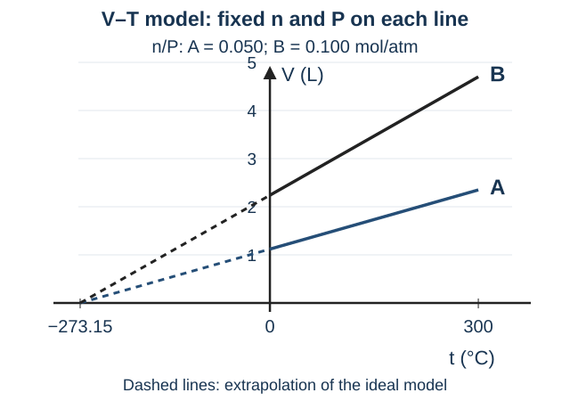
คำถาม 21 — อ่านความชันและจุดตัดให้แยกกัน
ก. ข้อมูลจำลองสภาวะ A: ที่ 300 K มี V = 1.23 L และที่ 600 K มี V = 2.46 L หาความชันพร้อมหน่วย
ข. เมื่อใช้แกน °C จำเป็นต้องได้ V = 0 ที่ 0 °C หรือไม่? และเปลี่ยนจาก °C เป็น K ทำให้ความชันเพิ่ม 273.15 เท่าหรือไม่?
ก. \(m=(2.46-1.23)/(600-300)=0.00410\ \mathrm{L/K}\) เป็นอัตราเพิ่มปริมาตรต่ออุณหภูมิหนึ่งหน่วย
ข. ไม่ทั้งสองข้อ 0 °C เท่ากับ 273.15 K จึงยังมีปริมาตรตามแบบจำลอง การเลื่อนจุดศูนย์อุณหภูมิเปลี่ยนจุดตัด ไม่เปลี่ยน \(\Delta T\) และไม่เปลี่ยนความชัน
ตัด R ออกเมื่อเทียบสภาวะ
\(R\) เท่ากันทุกสภาวะ จึงเปรียบเทียบ \(n/P\) ได้เลย: มากกว่า → ชันกว่า; เท่ากัน → ชันเท่ากัน ภายใต้แบบจำลองและแกนอุณหภูมิเดียวกัน กราฟ \(V\)–\(T\) ที่มี \(n/P\) เท่ากันจะทับกัน
ตัวอย่างต่างโจทย์: A มี n = 0.050 mol, P = 1.0 atm จึงได้ n/P = 0.050 mol/atm ส่วน B มี n = 0.050 mol, P = 0.50 atm จึงได้ 0.100 mol/atm: B ชันสองเท่าแม้มีจำนวนโมลเท่ากัน
คำถาม 22 — คำนวณอัตราส่วนก่อนเรียงเส้น
ก. สภาวะ A: n = 0.050 mol, P = 1.0 atm; B: n = 0.050 mol, P = 0.50 atm; C: n = 0.100 mol, P = 2.0 atm หาค่า n/P ของแต่ละสภาวะ แล้วเรียงความชัน
ข. ถ้ากราฟสองสภาวะชันเท่ากัน สรุปได้ทันทีหรือไม่ว่าทั้ง n และ P เท่ากัน? ใช้ A กับ C ตรวจคำตอบ
ก. A = 0.050, B = 0.100 และ C = 0.050 mol/atm ดังนั้น \(m_B>m_A=m_C\) โดย B ชันสองเท่าของ A และ C
ข. สรุปไม่ได้ ความชันบอกอัตราส่วน n/P เท่านั้น A กับ C มีทั้ง n และ P ต่างกันสองเท่า แต่อัตราส่วนและความชันเท่ากัน
ถ้าโจทย์ให้ตัวแปร ใช้อัตราส่วนความชัน
\[\frac{m_2}{m_1}=\frac{n_2/P_2}{n_1/P_1}=\frac{n_2P_1}{n_1P_2}\]เขียนสิ่งที่คงเดิมก่อนแทนค่า เช่น ถ้า n เท่ากัน ความชันแปรผกผันกับ P; ถ้า P เท่ากัน ความชันแปรตาม n การดู n หรือ P เพียงตัวเดียวโดยอีกตัวไม่คงเดิมอาจตัดสินผิด
คำถาม 23 — ฝึกกลับสมการจากความชัน
ก. ถ้า \(m_2=3m_1\) และ \(n_2=n_1\) จงหา \(P_2\) ในรูป \(P_1\)
ข. ถ้า \(m_2=\tfrac12m_1\) และ \(P_2=\tfrac14P_1\) จงหา \(n_2\) ในรูป \(n_1\)
ก. \(3=P_1/P_2\) จึงได้ \(P_2=P_1/3\) ความดันลดเหลือหนึ่งในสามทำให้ความชันเพิ่มสามเท่าเมื่อ n คงตัว
ข. \(\tfrac12=\dfrac{n_2P_1}{n_1(P_1/4)}=4\dfrac{n_2}{n_1}\) จึงได้ \(n_2=n_1/8\) ต้องพิจารณาทั้งสองตัวแปรร่วมกัน
อ่านต่อ: บทแก๊ส → ความสัมพันธ์ V, P, T และ n: สมการและกราฟ · สสวท.: ปริมาตรกับอุณหภูมิ · สสวท.: กฎแก๊สอุดมคติ
แหล่งนิยามและเนื้อหา: Ideal gas law
ข้อ 7 — แก๊สพบกันตรงไหน ต้องตั้งระยะจากทั้งสองด้าน
เริ่มจากภาพ: แก๊สแพร่จากบริเวณที่มีความเข้มข้นสูงไปต่ำโดยการเคลื่อนที่สุ่มของอนุภาค ถ้าปล่อยแก๊สสองชนิดพร้อมกันจากคนละปลาย แก๊สที่แพร่เร็วกว่าเดินทางได้ไกลกว่าในเวลาเดียวกัน ตำแหน่งที่พบจึงอยู่ใกล้ฝั่งที่แพร่ช้ากว่า
มวลต่อโมลน้อยกว่า → แพร่เร็วกว่า เมื่ออุณหภูมิเท่ากัน
ใช้กฎของเกรแฮมในแบบจำลองโจทย์ โดย \(r\) คืออัตราการแพร่ และ \(M\) คือมวลต่อโมล หน่วย g·mol⁻¹ ของทั้งคู่ต้องตรงกัน
\[\frac{r_P}{r_Q}=\sqrt{\frac{M_Q}{M_P}}\]มวลกับอัตราอยู่คนละลำดับในเศษส่วน: ถ้า P เบากว่า Q ต้องได้ \(r_P/r_Q>1\) ใช้ตรวจการกลับเศษส่วนได้ทันที ที่อุณหภูมิเดียวกัน แก๊สมีพลังงานจลน์เฉลี่ยเท่ากัน แต่ไม่ได้มีอัตราเร็วเฉลี่ยเท่ากัน
เงื่อนไข: การคำนวณระยะวงแหวนต่อไปนี้เป็นแบบจำลองการแพร่ตามเกรแฮม เริ่มพร้อมกัน อุณหภูมิเท่ากัน และพบกันในเวลาเดียวกัน ไม่ใช่อนุภาคทุกตัววิ่งเป็นเส้นตรงด้วยอัตราเร็วเดียว ส่วนการลอดผ่านรูเล็กเรียกว่าเอฟฟิวชัน ซึ่งใช้กฎเกรแฮมเปรียบเทียบได้ภายใต้เงื่อนไขเดียวกัน
คำถาม 24 — ตรวจว่าใครเร็วกว่า ก่อนแทนระยะ
ก. แก๊ส P และ Q มีมวลต่อโมล 10.0 และ 90.0 g·mol⁻¹ ตามลำดับ ที่อุณหภูมิเดียวกัน หา \(r_P/r_Q\) และบอกว่าใครแพร่เร็วกว่า
ข. ถ้าปล่อยแก๊สปริมาณเท่ากันให้ลอดรูเล็กชุดเดียวกัน ภายใต้เงื่อนไขเปรียบเทียบเดียวกัน เวลา \(t_P/t_Q\) เท่ากับเท่าใด?
ก. \(r_P/r_Q=\sqrt{90.0/10.0}=3\) ดังนั้น P แพร่เร็วกว่า Q สามเท่าในแบบจำลองนี้
ข. ปริมาณเท่ากันใช้ \(t\propto1/r\) จึงได้ \(t_P/t_Q=1/3\) แก๊สที่เร็วกว่าใช้เวลาน้อยกว่า ไม่ใช่มากกว่า
เปลี่ยนอัตราการแพร่เป็นอัตราส่วนระยะ
ให้ท่อยาว \(L\) ปล่อย P จากซ้ายและ Q จากขวาพร้อมกัน ถ้าพบกันห่างซ้าย \(x\) ระยะของ P คือ \(d_P=x\) ส่วน Q คือ \(d_Q=L-x\) ต้องได้ \(d_P+d_Q=L\)
\[\frac{x}{L-x}=\frac{d_P}{d_Q}=\frac{r_P}{r_Q}=\sqrt{\frac{M_Q}{M_P}}\]ตัวอย่างต่างโจทย์: ท่อยาว 72.0 cm ให้ P ทางซ้ายมี M = 16.0 และ Q ทางขวามี M = 144.0 g·mol⁻¹ อัตราส่วนระยะคือ \(\sqrt{144.0/16.0}=3\) แบ่งความยาวเป็น 3 + 1 = 4 ส่วน จึงได้ระยะจากซ้าย \(72.0(3/4)=54.0\ \mathrm{cm}\) และจากขวา 18.0 cm ตรวจผลรวมได้ 72.0 cm และวงแหวนอยู่ใกล้ Q ซึ่งหนักกว่า
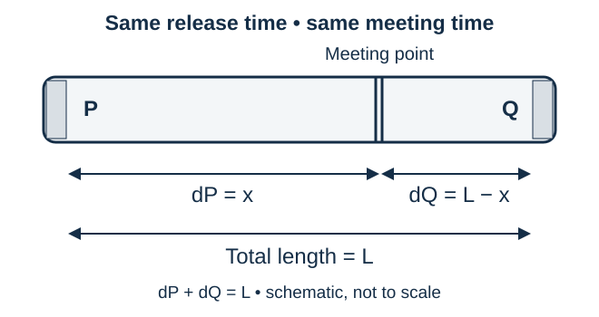
คำถาม 25 — ฝั่งที่ถามสำคัญพอ ๆ กับคำตอบ
ก. ท่อจำลองยาว 60.0 cm ปล่อย R ทางซ้าย (M = 64.0) และ S ทางขวา (M = 16.0 g·mol⁻¹) พร้อมกันที่อุณหภูมิเดียวกัน วงแหวนอยู่ห่างซ้ายและขวาเท่าใด?
ข. วงแหวนอยู่ใกล้แก๊สที่หนักกว่าหรือเบากว่า? ถ้าถามระยะจากขวา จะใช้ค่าเดียวกับระยะจากซ้ายได้หรือไม่?
ก. \(d_R/d_S=\sqrt{16.0/64.0}=1/2\) และผลรวม 60.0 cm จึงได้ \(d_R=20.0\ \mathrm{cm}\), \(d_S=40.0\ \mathrm{cm}\) หรือแก้ \(x/(60.0-x)=1/2\)
ข. ใกล้ฝั่ง R ที่หนักกว่าและแพร่ช้ากว่า ระยะจากขวาคือ 40.0 cm ส่วนจากซ้ายคือ 20.0 cm ต้องอ่านจุดอ้างอิงตามคำถาม
คำถาม 26 — ใช้ตำแหน่งย้อนหามวลต่อโมล
ก. ในแบบจำลองเดิม ท่อยาว 84.0 cm วงแหวนอยู่ห่างปลายซ้าย 28.0 cm ถ้าแก๊ส Q ทางขวามี M = 36.0 g·mol⁻¹ จงหา M ของแก๊ส P ทางซ้าย
ข. จะใช้ \(28.0/84.0\) แทน \(d_P/d_Q\) ได้หรือไม่? เพราะอะไร?
ก. ระยะจากขวา \(84.0-28.0=56.0\ \mathrm{cm}\) จึงมี \(28.0/56.0=\sqrt{36.0/M_P}\) ยกกำลังสองได้ \(1/4=36.0/M_P\) และ \(M_P=144.0\ \mathrm{g\,mol^{-1}}\)
ข. ไม่ได้ 84.0 cm เป็นความยาวรวม ไม่ใช่ระยะของ Q ตัวส่วนต้องเป็น 56.0 cm และต้องยกกำลังสองเมื่อย้อนหามวล
ก่อนกลับไปทำข้อสอบ: เขียนซ้าย–ขวา → ระยะสองด้านรวมเท่าความยาวท่อ → ตั้งอัตราส่วน → ตรวจว่าฝั่งหนักอยู่ใกล้จุดพบ → ตอบระยะจากด้านที่ถาม
อ่านต่อ: บทแก๊สและสมบัติของแก๊ส → ทฤษฎีจลน์และการแพร่ของแก๊ส · สสวท. Project 14: การแพร่ของแก๊ส · OpenStax: การแพร่และเอฟฟิวชัน
ข้อ 8 — อ่านหมู่ฟังก์ชัน ตั้งชื่อสารอินทรีย์ แล้วฝึกชื่อสารวง
เป้าหมาย: อ่านโครงสร้างให้รู้หมู่ฟังก์ชัน แล้วอ่านชื่อกลับเป็นโครงสร้างได้ ตารางครอบคลุมหมู่หลักที่ใช้ในเคมีอินทรีย์ระดับมัธยม พร้อมกลุ่มเสริมที่อาจพบ ก่อนกลับมาฝึกชื่อไซโคลแอลคีนของข้อ 8 ไม่ครอบคลุมระบบชื่อวงซับซ้อนและสารอินทรีย์ทุกประเภทในระดับมหาวิทยาลัย
เริ่มจากจำนวนคาร์บอนและพันธะของโครงหลัก
| จำนวน C ในโครงหลัก | รากชื่อ / เสียงอ่านโดยประมาณ |
|---|---|
| 1 | meth- (เมท) |
| 2 | eth- (เอท) |
| 3 | prop- (โพรพ) |
| 4 | but- (บิวท) |
| 5 | pent- (เพนท) |
| 6 | hex- (เฮกซ) |
| 7 | hept- (เฮปท) |
| 8 | oct- (ออกท) |
| 9 | non- (โนน) |
| 10 | dec- (เดค) |
| โครงสร้าง | ส่วนชื่อและวิธีอ่าน | ตัวอย่าง |
|---|---|---|
| แอลเคน: พันธะ C–C เดี่ยว | -ane (เอน) | CH₃CH₂CH₂CH₃ → butane |
| แอลคีน: มี C=C | -ene (อีน); ระบุเลขเริ่มพันธะคู่ | CH₃CH=CHCH₃ → but-2-ene |
| แอลไคน์: มี C≡C | -yne (ไอน์); ระบุเลขเริ่มพันธะสาม | HC≡CCH₂CH₃ → but-1-yne |
| อะโรมาติก: วงเบนซีน | benzene; กิ่ง methyl + benzene | C₆H₅CH₃ → methylbenzene (toluene) |
รากชื่อบอกจำนวน C ของโครงหลัก ไม่รวมกิ่งทุกกิ่งเข้าด้วยกัน เช่น methyl คือกิ่ง –CH₃, ethyl คือ –CH₂CH₃ ส่วน cyclo- บอกว่ามีโครงหลักเป็นวง แอลเคนอิ่มตัวไม่มีหมู่ฟังก์ชันเฉพาะ ตารางไฮโดรคาร์บอนจึงแยกจากตารางหมู่ด้านล่าง
ตารางหมู่ฟังก์ชัน: ดูรูป แล้วเลือกวิธีเรียกชื่อ
R และ R′ แทนหมู่คาร์บอนซึ่งอาจต่างกัน Ar แทนหมู่อะโรมาติก C(=O) คือคาร์บอนิล ต้องดูอะตอมที่ต่อกับ C=O ให้ครบก่อนจัดชนิด คอลัมน์คำขึ้นต้นใช้เมื่อหมู่นั้นไม่ใช่หมู่หลัก และต้องเลือกตามการเชื่อมต่อกับโครงหลัก
| ประเภท / รูปหมู่ | คำลงท้าย / รูปแบบชื่อ; คำขึ้นต้น | ตัวอย่างและจุดสังเกต |
|---|---|---|
| แอลกอฮอล์ / Alcohol R–OH | -ol; hydroxy- | CH₃CH₂CH₂OH → propan-1-ol OH ติดคาร์บอนอิ่มตัว; เลข 1 ระบุ C ที่มี OH |
| ฟีนอล / Phenol Ar–OH | phenol; hydroxy- | C₆H₅OH → phenol OH ติดวงอะโรมาติกโดยตรง ไม่ใช่แค่มีวงกับ OH อยู่ในโมเลกุลเดียวกัน |
| อีเทอร์ / Ether R–O–R′ | alkoxyalkane; methoxy-, ethoxy- | CH₃OCH₂CH₃ → methoxyethane เลือก ethane เป็นโครงหลัก ส่วน CH₃O– คือ methoxy |
| แอลดีไฮด์ / Aldehyde R–C(=O)H | -al; oxo- / formyl- | CH₃CH₂CHO → propanal นับ C ของ CHO ในโซ่ด้วย C ของ CHO เป็นตำแหน่ง 1 |
| คีโตน / Ketone R–C(=O)–R′ | -one; oxo- | CH₃COCH₂CH₃ → butan-2-one คาร์บอนิลอยู่ในโซ่และติดคาร์บอนสองด้าน |
| กรดคาร์บอกซิลิก / Carboxylic acid R–C(=O)OH | -oic acid; carboxy- | CH₃CH₂COOH → propanoic acid นับ C ของ COOH ในโซ่ด้วย เป็น C-1; OH นี้เป็นส่วนของหมู่กรด |
| เอสเทอร์ / Ester R–C(=O)–O–R′ | alkyl alkanoate; alkoxycarbonyl- | CH₃CH₂COOCH₃ → methyl propanoate methyl มาจาก R′ บน O; propanoate มาจากฝั่งกรดซึ่งนับ C=O ด้วย |
| เอมีน / Amine R–NH₂ / R₂NH / R₃N | -amine; amino- | CH₃CH₂NH₂ → ethanamine N ไม่ได้ติด C=O แบบเอไมด์; หมู่บน N ใช้ N- ระบุตำแหน่ง |
| เอไมด์ / Amide R–C(=O)–NH₂ | -amide; carbamoyl- | CH₃CONH₂ → ethanamide N ติด C ของ C=O โดยตรง รวมแบบ CONHR′ และ CONR′R″ ด้วย |
| ฮาโลแอลเคน / Haloalkane R–X (X = F, Cl, Br, I) | fluoro-, chloro-, bromo-, iodo- | CH₃CHClCH₃ → 2-chloropropane ใช้ชื่อฮาโลเป็นคำขึ้นต้น ไม่เติมเป็นคำลงท้ายหมู่หลัก |
กลุ่มเสริม: ใช้เมื่อตรวจพบหมู่นี้ในโจทย์
| ประเภท / รูปหมู่ | คำลงท้าย / รูปแบบชื่อ; คำขึ้นต้น | ตัวอย่างและจุดสังเกต |
|---|---|---|
| ไนไทรล์ / Nitrile R–C≡N | -nitrile; cyano- | CH₃CH₂CN → propanenitrile นับ C ใน C≡N เป็น C-1 ของโซ่ ไม่ใช่พันธะ C≡C |
| สารประกอบไนโตร / Nitro compound R–NO₂ | nitro- | CH₃CH₂NO₂ → nitroethane NO₂ เป็นหมู่ไนโตร ไม่ใช่เอมีนเพียงเพราะมี N |
| ไทออล / Thiol R–SH | -thiol; sulfanyl- | CH₃CH₂SH → ethanethiol SH ต่างจาก OH ของแอลกอฮอล์ |
| แอซิลเฮไลด์ / Acyl halide R–C(=O)–X | -oyl halide | CH₃COCl → ethanoyl chloride Cl ติดคาร์บอนิล ไม่จัดเหมือนฮาโลแอลเคน |
| แอนไฮไดรด์ของกรด / Acid anhydride R–C(=O)–O–C(=O)–R′ | acid name → anhydride | (CH₃CO)₂O → ethanoic anhydride ตัวอย่างกรดสองฝั่งเหมือนกัน: เปลี่ยน acid เป็น anhydride |
เสียงลงท้ายที่พบ: -ol ออล, -al แอล, -one โอน, -oic acid โออิกแอซิด, -oate โอเอต, -amine เอมีน, -amide เอไมด์ ควรเขียนชื่ออังกฤษประกอบเสมอเพื่อแยกคำที่อ่านคล้ายกัน เช่น -al กับ -ol
คำถาม 27 — ดูหมู่จากการเชื่อมต่อ ไม่ใช่นับ O หรือ N อย่างเดียว
ก. จัดประเภท CH₃CH₂CHO, CH₃COCH₃, CH₃COOCH₃ และ CH₃CONH₂ พร้อมระบุส่วนโครงสร้างที่ใช้ตัดสิน
ข. C₆H₅OH กับ C₆H₅CH₂OH เป็นฟีนอลทั้งคู่หรือไม่? CH₃CH₂CN มี C กี่ตัวในโครงหลักเมื่อเรียกเป็นไนไทรล์?
ก. แอลดีไฮด์ (CHO), คีโตน (C=O ติด C สองด้าน), เอสเทอร์ (C(=O)–O–C) และเอไมด์ (C(=O)–N) ตามลำดับ ไม่แยกเอสเทอร์เป็นคีโตนกับอีเทอร์คนละหมู่
ข. ไม่ใช่ ตัวแรกเป็นฟีนอลเพราะ OH ติดวงโดยตรง ตัวหลังเป็นแอลกอฮอล์เพราะมี CH₂ คั่น ส่วน CH₃CH₂CN มี 3 C รวม C ของ CN จึงเป็น propanenitrile
วิธีตั้งชื่อ: ทำตามลำดับ ไม่เริ่มจากกิ่งที่ใกล้ที่สุด
- หาหมู่ฟังก์ชันทั้งหมด แล้วเลือกหมู่หลักที่จะใช้คำลงท้าย จากลำดับที่เกี่ยวข้องในบทนี้: กรดคาร์บอกซิลิก > เอสเทอร์ > เอไมด์ > ไนไทรล์ > แอลดีไฮด์ > คีโตน > แอลกอฮอล์ > เอมีน นี่เป็นลำดับเฉพาะกลุ่มที่ยกมา ไม่ใช่บัญชีครบทุกหมู่
- เลือกสายหรือวงหลักที่รองรับหมู่หลักได้ถูกต้อง สำหรับโซ่ง่าย เลือกโซ่ที่มีหมู่หลักตามเกณฑ์ก่อน แล้วพิจารณาความยาวและพันธะหลาย ไม่เลือกโซ่ยาวที่ทำให้หมู่หลักหายจากการตั้งชื่อ
- ให้เลขหมู่หลักต่ำก่อน เช่น OH เมื่อเป็นหมู่หลักมีสิทธิก่อนพันธะคู่ จากนั้นจึงพิจารณาเลขพันธะหลายและหมู่แทนที่ตามลำดับ ในไฮโดรคาร์บอนที่ไม่มีหมู่หลัก อย่าใช้เลขกิ่งไปเอาชนะเลขพันธะคู่
- ระบุชื่อกิ่งและเลขทุกตำแหน่ง เรียงคำขึ้นต้นตามตัวอักษรอังกฤษ โดยไม่นับ di-, tri-, tetra- ของหมู่แทนที่ง่าย ๆ แล้วประกอบเลข–ชื่อกิ่ง–โครงหลัก–พันธะหลาย–คำลงท้าย
- เขียนเลขติดกับส่วนที่มันระบุ ใช้จุลภาคระหว่างเลขและขีดระหว่างเลขกับคำ เช่น 2,3-dimethyl… ปกติชื่อแทนที่เขียนต่อกัน แต่ชื่อเอสเทอร์และชื่อกรดมีช่องว่างตามรูปแบบ เช่น methyl propanoate และ propanoic acid
ตัวอย่างทีละขั้น: HOCH₂–CH(CH₃)–CH₂–CH₃ มี OH เป็นหมู่หลัก โซ่ที่มี OH ยาว 4 C → butane นับจากปลาย OH ให้ OH ที่ 1 และ methyl ที่ 2 จึงได้ 2-methylbutan-1-ol ไม่ใช่ชื่อที่ให้ OH ได้เลข 4 เพื่อให้กิ่งใกล้ปลายอีกด้าน
มีสองหมู่: CH₃CH(OH)COOH ใช้ COOH เป็นหมู่หลัก นับ C กรดเป็น 1 และเปลี่ยน OH เป็น hydroxy- จึงเป็น 2-hydroxypropanoic acid ส่วน HOCH₂CH₂CH=CH₂ ใช้ OH เป็นหมู่หลักและยังระบุพันธะคู่ จึงเป็น but-3-en-1-ol ไม่กลับด้านให้พันธะคู่ต่ำกว่า OH
คำถาม 28 — เลือกหมู่หลักและทิศนับ
ก. ตั้งชื่อ CH₃CH(OH)COOH และอธิบายว่าทำไมไม่ใช้ -ol เป็นคำลงท้ายหลัก
ข. ตั้งชื่อ HOCH₂CH₂CH=CH₂ และ HOCH₂CH(CH₃)CH₂CH₃ โดยระบุเหตุผลของเลขตำแหน่ง
ก. 2-hydroxypropanoic acid เพราะ COOH สำคัญกว่า OH ในการเลือกคำลงท้าย C ของกรดเป็น 1 และ OH อยู่ที่ 2
ข. but-3-en-1-ol และ 2-methylbutan-1-ol ตามลำดับ ทั้งคู่ให้ OH ได้เลข 1 ก่อน แล้วจึงระบุพันธะคู่หรือกิ่ง
สามจุดที่อ่านชื่อผิดบ่อย: เอสเทอร์ อีเทอร์ และ N-
เอสเทอร์ R–COO–R′: อ่านหมู่ R′ ที่ติด O เป็นคำแรก แล้วอ่านฝั่ง R–COO เป็น alkanoate โดยนับ C=O เช่น CH₃CH₂COOCH₃ เป็น methyl propanoate ไม่ใช่ propyl ethanoate ถ้าอ่านย้อนจากชื่อ ethyl butanoate ให้สร้างฝั่งกรด 4 C รวม C=O แล้วต่อ O–CH₂CH₃: CH₃CH₂CH₂COOCH₂CH₃
อีเทอร์: CH₃OCH₂CH₃ เป็น methoxyethane โดยไม่มี C=O อย่าอ่านเป็นเอสเทอร์ ส่วน N-methylethanamide หมายถึง CH₃CONHCH₃: โครง ethanamide มี C ของกรด 2 ตัว และ methyl ติด N ไม่ใช่ C หมายเลขใดในโซ่
| ชื่อที่พบ | ชื่ออีกแบบ / จุดที่ต้องแยก |
|---|---|
| methanal / ethanal | formaldehyde / acetaldehyde (ชื่อสามัญ) |
| ethanoic acid | acetic acid (ชื่อสามัญที่ยอมรับ) |
| propan-2-one / propanone | acetone (ชื่อสามัญ) |
| methylbenzene | toluene; ส่วน phenol เป็นชื่อที่คงไว้สำหรับ C₆H₅OH |
ตรวจอีกครั้ง: COOH เป็นหมู่กรดหนึ่งหมู่ ไม่ใช่ OH ของแอลกอฮอล์แยกหนึ่งหมู่; CONH₂ เป็นเอไมด์ ไม่ใช่เอมีนแยกจากคีโตน นับ C ของ CHO/COOH/CN เมื่อเป็นส่วนของโซ่หลัก ส่วนหมู่ที่อยู่นอกวงอาจต้องใช้ชื่อแบบ -carbaldehyde, -carboxylic acid หรือ -carbonitrile อย่าบังคับกฎโซ่กับทุกวง และไม่เติม cis/trans หรือ E/Z ถ้าข้อมูลสเตอริโอเคมีไม่พอ
คำถาม 29 — อ่านชื่อย้อนเป็นโครงสร้างและจับผิด
ก. เขียนสูตรโครงสร้างแบบย่อจาก ethyl butanoate และ N-methylethanamide แล้วชี้ว่าคำ ethyl และ N-methyl อยู่ตรงไหน
ข. ผู้เรียนเรียก CH₃CH₂COOCH₃ ว่า propyl ethanoate และเรียก CH₃CONH₂ ว่าเอมีน ผิดตรงไหน? แก้ชื่อให้ถูก
ก. CH₃CH₂CH₂COOCH₂CH₃ มี ethyl ต่อกับ O; CH₃CONHCH₃ มี methyl ต่อกับ N ส่วนคาร์บอนิลอยู่ในโครง ethanamide
ข. สารแรกต้องเป็น methyl propanoate เพราะฝั่ง O มี CH₃ และฝั่งกรดมี 3 C รวม C=O สารหลังเป็นเอไมด์ชื่อ ethanamide เพราะ N ติดคาร์บอนิลโดยตรง
หลายหมู่เหมือนกันและชื่อสารวงอะโรมาติก
เมื่อมี OH สองหมู่ให้ระบุเลขทั้งสองและใช้ -diol เช่น HOCH₂CH₂OH คือ ethane-1,2-diol สังเกตว่ายังคง e ใน ethane ก่อน diol ต่างจาก ethan-1-ol ส่วนพันธะคู่สองตำแหน่ง เช่น CH₂=CHCH=CH₂ คือ buta-1,3-diene อย่าลบเลขของตำแหน่งที่ซ้ำหรือปรับการสะกดตามเสียงอย่างเดียว
เมื่อมีหมู่แทนที่สองหมู่บนวงเบนซีน ตำแหน่ง 1,2 เรียก ortho (o-), 1,3 เรียก meta (m-) และ 1,4 เรียก para (p-) เช่น 1,2-dimethylbenzene คือ o-xylene ชื่อแบบเลขช่วยอ่านตำแหน่งได้ตรงกว่า อย่าเอา o-/m-/p- ไปแทนเลขของวงอื่นทุกชนิด สำหรับ phenol ให้คาร์บอนที่ติด OH เป็นตำแหน่ง 1 แล้วกำหนดเลขกิ่งต่อ
คำถาม 30 — อ่านตัวคูณและตำแหน่งบนวง
ก. เขียนสูตรโครงสร้างแบบย่อของ ethane-1,2-diol และ buta-1,3-diene ชื่อบอกจำนวนหมู่หรือพันธะอย่างไร?
ข. หมู่ methyl สองหมู่บนเบนซีนอยู่ตำแหน่ง 1,4 เรียก o-, m- หรือ p-? และ methyl บน phenol ติดคาร์บอนข้าง OH จะได้เลขใด?
ก. HOCH₂CH₂OH มี OH สองหมู่ที่ C-1, C-2; CH₂=CHCH=CH₂ มีพันธะคู่เริ่มที่ C-1 และ C-3 โดย di- บอกจำนวนสอง
ข. เป็น p- หรือ para ชื่อ 1,4-dimethylbenzene / p-xylene ส่วน methyl ที่อยู่ติด OH ของ phenol ได้เลข 2 เป็น 2-methylphenol
กลับมาฝึกสารวงที่ใช้ในข้อ 8
ขอบเขตกฎย่อต่อไปนี้: ใช้กับวงไฮโดรคาร์บอนเดี่ยว มีพันธะคู่หนึ่งพันธะและกิ่งแอลคิล ถ้ามี OH/COOH เป็นหมู่หลัก ต้องเลือกเลขตามหมู่หลักก่อน ไม่ใช้ “พันธะคู่ต้องเป็น 1–2” ครอบทุกกรณี
ส่วนนี้ใช้กับไฮโดรคาร์บอนวงเดี่ยวที่มีพันธะคู่หนึ่งพันธะและหมู่แอลคิล ถ้ามีหมู่หลัก เช่น –OH หรือ –COOH ต้องใช้ลำดับความสำคัญของหมู่ฟังก์ชันเพิ่ม จึงไม่ใช้กฎย่อนี้เหมารวมทุกสาร
แยกชื่อโครงหลักกับชื่อกิ่ง
| สิ่งที่เห็น | ความหมายในชื่อ |
|---|---|
| วง C 5, 6 หรือ 7 อะตอม | cyclopent-, cyclohex-, cyclohept- ตามลำดับ |
| พันธะคู่หนึ่งพันธะ | ลงท้าย -ene เช่น cycloheptene; แบบระบุตำแหน่งเขียน cyclohept-1-ene |
| –CH₃ / –CH₂CH₃ | methyl / ethyl ตามลำดับ |
| กิ่งชนิดเดิม 2 / 3 / 4 หมู่ | di- / tri- / tetra- พร้อมเลขของทุกตำแหน่ง |
วงแอลคีนง่าย ๆ แบบนี้กำหนดคาร์บอนของพันธะคู่เป็น 1 และ 2 ก่อน แล้วลองเริ่มที่อีกปลายของพันธะคู่และนับกลับทาง เพื่อเลือกเลขกิ่ง อย่าให้กิ่งได้เลขต่ำโดยย้ายพันธะคู่ไปตำแหน่งสูงกว่า
คำถาม 31 — อ่านชื่อเป็นส่วน ๆ
ก. วงคาร์บอน 7 อะตอมมีพันธะคู่หนึ่งพันธะ ใช้โครงหลักชื่อใด? กิ่ง –CH₂CH₃ เรียกว่าอะไร?
ข. สำหรับไฮโดรคาร์บอนในขอบเขตนี้ จะให้คาร์บอนของพันธะคู่เป็น 3 และ 4 เพื่อให้กิ่งเป็น 1 ได้หรือไม่?
ก. cycloheptene หรือ cyclohept-1-ene; กิ่งคือ ethyl จำนวน C ของวงไม่รวม C ที่อยู่บนกิ่ง
ข. ไม่ได้ ต้องจัดพันธะคู่ให้เป็น 1–2 ก่อน แล้วจึงเปรียบเทียบเลขกิ่งจากทิศนับที่ยังเลือกได้
เทียบชุดเลขจากน้อยไปมาก หยุดที่ตัวแรกที่ต่าง
ดูรูปตัวอย่างเดียวกันสองวิธีนับ: ทั้งสองวิธีรักษาพันธะคู่เป็น 1–2 ได้ชุดเลขกิ่ง (3,5) กับ (5,7) จึงเลือก (3,5) เพราะเลขตัวแรก 3 น้อยกว่า 5 ชื่อเป็น 3,5-dimethylcycloheptene หรือ 3,5-dimethylcyclohept-1-ene
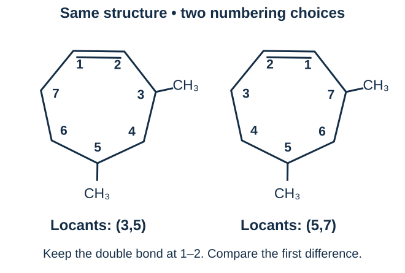
คำถาม 32 — แยกชุดเลขออกจากผลบวก
ก. จากรูป เลือกชุดเลขใด และเหตุใดจึงไม่ต้องบวกเลขทั้งหมดเพื่อตัดสิน?
ข. ฝึกหลักเทียบชุดเลขทั่วไป: (2,6,6) กับ (3,3,7) ชุดใดต่ำกว่า แม้ผลบวกอาจชวนให้เลือกอีกชุด?
ก. เลือก (3,5) เทียบทีละตำแหน่งแล้วตัดสินทันทีที่พบ 3 น้อยกว่า 5 หลักคือเลขตัวแรกที่ต่าง ไม่ใช่ผลบวก
ข. เลือก (2,6,6) เพราะ 2 น้อยกว่า 3 ที่ตัวแรก แม้ผลบวก 14 จะมากกว่า 13 ตัวเลขนี้เป็นแบบฝึกเปรียบเทียบชุด ไม่ได้อ้างว่าเป็นสองทิศนับของรูปด้านบน
ได้เลขแล้ว ค่อยเรียงชื่อหมู่แทนที่
หมู่แอลคิลอย่างง่ายเรียงตามชื่อภาษาอังกฤษ เช่น ethyl มาก่อน methyl โดยไม่นับ di-, tri-, tetra- ในการเรียง เก็บเลขไว้กับหมู่ของมัน เลขคั่นด้วยจุลภาค ส่วนเลขกับชื่อคั่นด้วยขีด เช่น 3,5-dimethyl…
ถ้าชุดเลขกิ่งจากสองทิศเท่ากันทุกตัว จึงใช้ลำดับชื่อช่วยตัดสินให้หมู่ที่เรียกก่อนรับเลขต่ำกว่า เช่น ถ้าเหลือทางเลือกระหว่าง ethyl ที่ 3 กับ 7 โดยชุดเลขรวมเท่ากัน ให้ ethyl อยู่ที่ 3 ไม่ใช้ตัวอักษรข้ามขั้นไปล้มชุดเลขที่ต่ำกว่า
คำถาม 33 — เรียงชื่อ โดยไม่สลับเลขของกิ่ง
ก. กำหนดการนับที่เลือกแล้วบน cycloheptene: ethyl ที่ 4 และ methyl ที่ 1,3 เขียนชื่อโดยเรียงหมู่ให้ถูกต้อง
ข. สองทิศนับให้ชุดเลข (3,7) เท่ากัน โดยทิศแรกมี ethyl ที่ 3 และ methyl ที่ 7 ส่วนอีกทิศสลับกัน ควรเลือกทิศใด?
ก. 4-ethyl-1,3-dimethylcycloheptene หรือ 4-ethyl-1,3-dimethylcyclohept-1-ene; ใช้ e ของ ethyl เทียบ m ของ methyl ไม่ใช้ d ของ di-
ข. เลือก ethyl ที่ 3 และ methyl ที่ 7 เพราะชุดเลขเสมอกันแล้ว และ ethyl เรียกก่อน methyl ชื่อเป็น 3-ethyl-7-methylcycloheptene
ก่อนกลับไปทำข้อสอบ: ตรวจขนาดวงและ -ene → พันธะคู่ 1–2 → ชุดเลขต่ำที่ตัวแรกที่ต่าง → เรียงชื่อกิ่ง → ตรวจจุลภาคและขีด
อ่านต่อ: บทเคมีอินทรีย์ → ชื่อของสารประกอบอินทรีย์ · สสวท. Project 14: เคมีอินทรีย์ เล่ม 5 · OpenStax: การเรียกชื่อแอลคีนและไซโคลแอลคีน
แหล่งกฎชื่อ: IUPAC · Brief Guide to Organic Nomenclature · OpenStax · Functional-group precedence and names
ข้อ 9 — สูตรโมเลกุลเหมือนกันแล้ว ต้องตรวจการต่ออะตอมด้วย
ไอโซเมอร์ มีสูตรโมเลกุลเหมือนกัน แต่โครงสร้างต่างกัน ถ้าสูตรต่างกัน ตัดออกได้ทันที ถ้าสูตรเหมือนกัน ยังต้องตรวจต่อว่าเป็นคนละสารหรือเพียงวาดสารเดิมอีกแบบ
อ่านสูตรเส้นให้ครบ C, H และอะตอมที่เขียนไว้
| จุดที่ดู | วิธีนับสำหรับโครงสร้างเป็นกลางทั่วไปในส่วนนี้ |
|---|---|
| มุมหรือปลายเส้นที่ไม่เขียนสัญลักษณ์ | เป็น C หนึ่งอะตอม จุดที่เขียน N หรือ O ให้เป็นธาตุนั้น ไม่บวก C ซ้ำ |
| H ที่ติดกับ C | เติมให้ผลรวมอันดับพันธะของ C ครบ 4: พันธะเดี่ยว/คู่/สาม นับ 1/2/3 |
| O และ N | O ทั่วไปมีพันธะรวม 2; N เป็นกลางทั่วไปมี 3 ตรวจ H ที่ระบุให้ครบ ถ้ารูปเขียน H ของ N/O ชัดอยู่แล้วอย่าเติมซ้ำ |
| วงและ C=O | นับ C ของคาร์บอนิลด้วย; N ที่อยู่ในวงยังเป็น N และอาจไม่มี N–H ถ้าต่อครบ 3 พันธะแล้ว |
ตัวอย่างต่างโจทย์: CH₃–CH₂–C(=O)–NH₂ มี C สามอะตอม รวม C ของ C=O; H = 3 + 2 + 0 + 2 = 7 จึงเป็น C₃H₇NO ส่วน CH₃–C(=O)–N(CH₃)₂ มี C = 4, H = 9 และ N ไม่มี H จึงเป็น C₄H₉NO
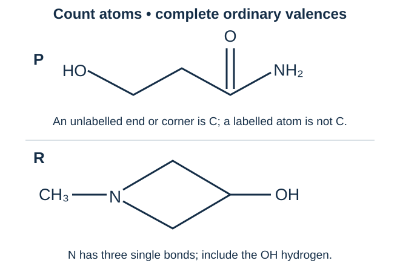
คำถาม 34 — นับจากรูปก่อนเปรียบเทียบ
ก. จากรูป P จงนับ C, H, N, O แล้วเขียนสูตรโมเลกุล โดยแยก H บน C ออกจาก H บน O/N
ข. จากรูป R วงมี C กี่อะตอม? N มี H ติดอยู่หรือไม่? เขียนสูตรโมเลกุลรวมกิ่งด้วย
ก. P มี C = 3: CH₂ สองตำแหน่งกับ C=O หนึ่งตำแหน่ง; H บน C = 4, บน OH = 1 และ NH₂ = 2 รวม H = 7 จึงได้ C₃H₇NO₂
ข. วง R มี C 3 กับ N 1 อะตอม; N ต่อ C ในวงสองด้านและ CH₃ อีกหนึ่ง จึงไม่มี N–H รวม C = 3 + 1 = 4; H = 2 + 2 + 1 + 3 + 1 = 9 ได้ C₄H₉NO
ดูหมู่ฟังก์ชันจากการต่อ ไม่ใช่เห็น N แล้วเรียกเหมือนกัน
| รูปแบบ | สิ่งที่ต้องเห็น |
|---|---|
| แอลกอฮอล์ | หมู่ –OH ต่อกับ C อิ่มตัว |
| กรดคาร์บอกซิลิก | –C(=O)–OH หรือ –COOH เป็นหมู่เดียว รวม C หนึ่ง O สอง และ H ของ OH หนึ่ง |
| เอมีน | N ในรูปแบบอย่าง R–NH₂ หรือ N ที่ต่อกับหมู่คาร์บอน โดยไม่ต่อกับ C=O โดยตรง |
| เอไมด์ | มี –C(=O)–N–; N อาจเป็น NH₂, NH หรือไม่มี H เลยก็ได้ |
คำถาม 35 — อ่านหมู่จากอะตอมข้างเคียง
ก. CH₃CH₂NH₂ กับ CH₃C(=O)NH₂ เป็นเอมีนหรือเอไมด์ตามลำดับ? ใช้อะไรแยก?
ข. CH₃C(=O)OH มีสูตรโมเลกุลใด? C ของ C=O มี H ติดอยู่กี่ตัว และ H ใน OH มีกี่ตัว?
ก. ตัวแรกเป็นเอมีน ตัวหลังเป็นเอไมด์ เพราะ N ของตัวหลังต่อโดยตรงกับ C ของ C=O การมี NH₂ เหมือนกันจึงไม่พอให้จัดเป็นหมู่เดียวกัน
ข. C₂H₄O₂; C ของ C=O ต่อ CH₃ กับ O ของ OH ครบแล้วจึงมี H = 0 ส่วน OH มี H = 1 รวม H ทั้งโมเลกุลเป็น 3 + 1 = 4
เทียบการเชื่อมต่อ โดยเริ่มจากจุดอ้างอิงเดียวกัน
เขียนสูตรโมเลกุลใต้แต่ละรูปก่อน จับคู่เฉพาะสูตรที่ตรงกัน แล้วเริ่มไล่จากหมู่เด่นเดียวกัน เช่น –OH หรือ –COOH ตรวจว่าอะตอมถัดไปเป็นใคร มีกิ่งหรือวงที่ใด การหมุนรูปหรือเริ่มเขียนจากอีกปลายไม่ได้สร้างไอโซเมอร์ใหม่
ตัวอย่าง: CH₃CH₂CH₂CH₂OH กับ HOCH₂CH₂CH₂CH₃ เป็นสารเดียวกัน เมื่อเริ่มไล่จาก OH จะพบการต่อเหมือนกันทุกตำแหน่ง แต่ CH₃OCH₂CH₂CH₃ มีสูตร C₄H₁₀O เท่ากับสองภาพแรกและต่อแบบอีเทอร์ จึงเป็นไอโซเมอร์โครงสร้างของแอลกอฮอล์นั้น
ส่วนนี้เน้นการต่ออะตอม ถ้ามีลิ่ม/เส้นประหรือระบุ cis–trans ต้องพิจารณาสเตอริโอไอโซเมอร์เพิ่ม การต่อเหมือนกันจึงไม่ได้ตัดสเตอริโอไอโซเมอร์ทุกกรณี; ถ้ารูปไม่ระบุความต่างเช่นนั้น ไม่ควรสมมติขึ้นเอง
คำถาม 36 — สูตรก่อน รูปร่างภาพทีหลัง
ก. CH₃CH₂CH₂OH กับ HOCH₂CH₂CH₃ เป็นไอโซเมอร์โครงสร้างกันหรือสารเดียวกัน? อธิบายจากการต่อ
ข. CH₃CH₂CH₂OH กับ CH₃CH(OH)CH₃ มีสูตรโมเลกุลใด? เป็นไอโซเมอร์กันหรือไม่?
ค. CH₃CH₂CH₂OH กับ CH₃CH₂CHO เป็นไอโซเมอร์กันหรือไม่? ตรวจสูตรก่อน และบอกว่าสูตรตรงกันเพียงอย่างเดียวพอพิสูจน์ว่าเป็นไอโซเมอร์หรือไม่
ก. เป็นสารเดียวกัน เมื่อเริ่มจาก OH จะได้ OH–CH₂–CH₂–CH₃ เหมือนกัน เพียงเขียนจากอีกด้าน
ข. ทั้งคู่ C₃H₈O แต่ OH ต่อ C ปลายกับ C กลางต่างกัน จึงเป็นไอโซเมอร์โครงสร้างแบบตำแหน่ง
ค. ไม่เป็น: ตัวแรก C₃H₈O ตัวหลัง C₃H₆O แม้ C และ O เท่ากัน แต่ H ต่างกัน ถ้าสูตรตรงกันก็ยังต้องตรวจโครงสร้าง อาจเป็นสารเดิมอีกภาพ
ก่อนกลับไปทำข้อสอบ: สูตรไม่ตรง → ไม่เป็นไอโซเมอร์; สูตรตรง → ตรวจการต่อและข้อมูลสเตอริโอเคมีที่รูปให้มา อย่าตัดสินจากทิศที่วาดหรือมวลโมเลกุลเพียงอย่างเดียว
อ่านต่อ: บทเคมีอินทรีย์ → สูตรโครงสร้าง หมู่ฟังก์ชัน และไอโซเมอร์ · สสวท.: สูตรโครงสร้าง · หมู่ฟังก์ชัน · ไอโซเมอร์
ข้อ 10 — ละลายน้ำได้แค่ไหน ดูทั้งหมู่มีขั้วและส่วนไฮโดรคาร์บอน
อ่านโครงสร้างสองส่วน: วงส่วนที่ยึดเหนี่ยวกับน้ำได้ แล้วดูว่าส่วน C–C/C–H ที่ไม่มีขั้วมีขนาดเท่าใด เปรียบเทียบภายใต้อุณหภูมิและสภาวะเดียวกัน ไม่ใช้ชื่อหมู่ฟังก์ชันเพียงคำเดียวตัดสินทุกคู่
ให้หรือรับพันธะไฮโดรเจนกับน้ำได้หรือไม่?
| หมู่ในสารเป็นกลางทั่วไป | สิ่งที่ทำกับน้ำได้ |
|---|---|
| แอลกอฮอล์ –OH | H ของ O–H ให้พันธะไฮโดรเจน และ O รับพันธะไฮโดรเจนจากน้ำได้ |
| คีโตน C=O หรืออีเทอร์ C–O–C | O รับพันธะไฮโดรเจนจากน้ำได้ แม้ไม่มี O–H สำหรับเป็นผู้ให้ |
| กรดคาร์บอกซิลิก –COOH | มีส่วนที่ยึดเหนี่ยวกับน้ำได้ แต่ยังต้องดูขนาดส่วนไฮโดรคาร์บอนและการแตกตัว |
| ส่วนไฮโดรคาร์บอน | ไม่เป็นผู้ให้/รับพันธะไฮโดรเจนแบบข้างต้นกับน้ำ ยิ่งส่วนนี้ใหญ่ยิ่งลดแนวโน้มการละลายน้ำเมื่อปัจจัยอื่นใกล้เคียงกัน |
น้ำเป็นผู้ให้ได้เองผ่าน O–H ของน้ำ ดังนั้นการไม่มี O–H ในตัวถูกละลายจึงไม่ได้แปลว่าไม่เกิดพันธะไฮโดรเจนกับน้ำ ควรแยก “แรงระหว่างโมเลกุลสารชนิดเดียวกัน” ออกจาก “แรงระหว่างสารกับน้ำ”
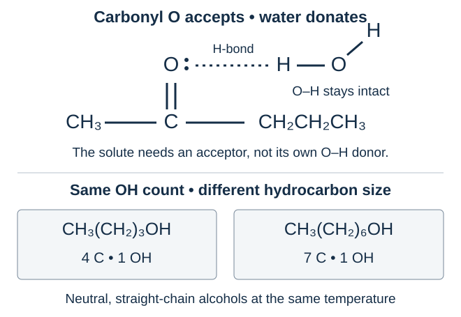
คำถาม 37 — ดูผู้ให้กับผู้รับให้แยกกัน
ก. pentan-2-one: CH₃C(=O)CH₂CH₂CH₃ กับ pentan-2-ol: CH₃CH(OH)CH₂CH₂CH₃ มีหมู่ใดที่รับพันธะไฮโดรเจนจากน้ำได้? สารใดมี O–H สำหรับเป็นผู้ให้ด้วย?
ข. ถ้าวาดน้ำกับ pentan-2-one เส้นประควรเชื่อม O ของคีโตนกับอะตอมใดของน้ำ? ต้องตัดพันธะ O–H เดิมของน้ำหรือไม่?
ก. O ของ C=O ใน pentan-2-one และ O ของ –OH ใน pentan-2-ol เป็นผู้รับได้ แต่มีเพียง pentan-2-ol ที่มี O–H สำหรับเป็นผู้ให้ด้วย
ข. เชื่อมกับ H ที่ยังต่ออยู่กับ O ของน้ำ เป็น O···H–O ไม่ตัด O–H เดิม เพราะกำลังแสดงแรงระหว่างโมเลกุล ไม่ใช่เปลี่ยนโครงสร้างน้ำ
หมู่เดิมเท่ากัน แต่โซ่ยาวขึ้น แนวโน้มเปลี่ยนได้
ตัวอย่าง: butan-1-ol กับ heptan-1-ol มี –OH หนึ่งหมู่เหมือนกัน แต่โซ่ของ heptan-1-ol ยาวกว่า จึงมีแนวโน้มละลายน้ำได้น้อยกว่า โดยเทียบสารโซ่ตรงเป็นกลางที่อุณหภูมิเดียวกัน
ในทางกลับกัน ถ้าจำนวน C ใกล้กัน การมีหมู่ที่ยึดเหนี่ยวกับน้ำเพิ่มอาจช่วยให้ละลายดีขึ้น อย่างไรก็ตาม โครงสร้าง การยึดเหนี่ยวในสารเดิม และสภาวะล้วนมีผล จึงไม่ใช้กฎว่า “นับ O ได้มากกว่าจะละลายดีกว่าเสมอ”
คำถาม 38 — เปรียบเทียบทีละปัจจัย
ก. ที่อุณหภูมิเดียวกัน สารโซ่ตรง butan-1-ol กับ heptan-1-ol ตัวใดคาดว่าละลายน้ำได้มากกว่า? ระบุสิ่งที่เท่ากันและสิ่งที่ต่างกัน
ข. pentan-1-ol กับ pentane มี C ห้าอะตอมเท่ากัน ตัวใดมีแนวโน้มเข้ากับน้ำได้ดีกว่า และส่วนใดทำให้ต่างกัน?
ก. butan-1-ol ละลายได้มากกว่า ทั้งคู่มี –OH หนึ่งหมู่ แต่มี C สี่กับเจ็ดอะตอม ส่วนไฮโดรคาร์บอนที่ยาวขึ้นลดแนวโน้มการละลายน้ำ
ข. pentan-1-ol เพราะ –OH ยึดเหนี่ยวกับน้ำผ่านพันธะไฮโดรเจนได้ ส่วน pentane ไม่มีหมู่นี้ การกล่าวว่าดีกว่าไม่ได้แปลว่าต้องผสมกับน้ำได้ทุกอัตราส่วน
ข้ามหมู่ฟังก์ชัน ต้องชั่งน้ำหนักสองส่วนร่วมกัน
คีโตนโมเลกุลเล็กอาจละลายน้ำได้ดีกว่าแอลกอฮอล์โซ่ยาว และการมี –COOH หนึ่งหมู่บนโครงไฮโดรคาร์บอนขนาดใหญ่ไม่ได้รับประกันว่าจะละลายดีกว่าสารโมเลกุลเล็กทุกชนิด นี่เป็นการดูแนวโน้มจากโครงสร้าง ไม่ใช่สูตรคำนวณค่าการละลายที่แน่นอน
เมื่อโจทย์ให้รูปโมเลกุลเป็นกลาง ให้เริ่มเปรียบเทียบรูปที่กำหนด ถ้าเติมกรดหรือเบสจนสารเปลี่ยนเป็นไอออน ต้องพิจารณาใหม่ เช่น RCOOH เปลี่ยนเป็น RCOO⁻ แล้วเกิดแรงไอออน–ขั้วกับน้ำได้มากขึ้น ไม่จัดอันดับข้ามสภาวะโดยเงียบ ๆ
คำถาม 39 — ไม่ตัดสินจากชื่อหมู่เพียงอย่างเดียว
ก. เปรียบเทียบแนวโน้มของ sorbitol ซึ่งมี C หกอะตอมและ –OH หกหมู่ กับ hexan-1-ol ซึ่งมี C หกอะตอมและ –OH หนึ่งหมู่ ที่อุณหภูมิเดียวกัน ตัวใดคาดว่าละลายน้ำได้มากกว่า? เพราะอะไร?
ข. ข้อความ “กรดคาร์บอกซิลิกทุกชนิดละลายน้ำดีกว่าแอลกอฮอล์ทุกชนิด” ใช้ได้หรือไม่? ต้องตรวจข้อมูลอะไรเพิ่ม?
ก. sorbitol มีแนวโน้มละลายน้ำได้มากกว่าในคู่นี้ เพราะมีตำแหน่งสร้างพันธะไฮโดรเจนกับน้ำหลายหมู่เมื่อเทียบจำนวน C เท่ากัน ทั้งนี้ไม่ใช้จำนวน –OH ทำนายค่าการละลายของทุกสารโดยลำพัง
ข. ใช้เหมารวมไม่ได้ ต้องดูขนาด/โครงสร้างส่วนไฮโดรคาร์บอน จำนวนหมู่ที่ยึดเหนี่ยวกับน้ำ อุณหภูมิและสภาวะการแตกตัว เช่น pH ด้วย
ก่อนกลับไปทำข้อสอบ: ชี้หมู่ที่ยึดเหนี่ยวกับน้ำ → เทียบส่วนโซ่/วงที่ไม่มีขั้ว → ตรวจสภาวะและรูปไอออน → เรียงจากมากไปน้อยตามที่ถาม
อ่านต่อ: บทเคมีอินทรีย์ → สมบัติของสารประกอบอินทรีย์ · สสวท. Project 14: การละลายในน้ำ · บทพันธะโคเวเลนต์ → แรงระหว่างโมเลกุลและพันธะไฮโดรเจน
ข้อ 11 — ใช้ผลเผาไหม้คัดสูตร แล้วใช้โบรมีนคัดโครงสร้าง
ข้อมูลสองชุดทำหน้าที่ต่างกัน: ปริมาณ CO₂ และ H₂O บอกจำนวน C/H ส่วนผลทดสอบโบรมีนช่วยบอกลักษณะพันธะและปฏิกิริยา ต้องผ่านทั้งสองเงื่อนไขก่อนเลือกโครงสร้าง
จากผลิตภัณฑ์กลับไปหาสูตร CₓHᵧ
\[\begin{gathered}\mathrm{C}_x\mathrm{H}_y+(x+y/4)\mathrm{O_2}\\\longrightarrow x\mathrm{CO_2}+(y/2)\mathrm{H_2O}\end{gathered}\]สำหรับการเผาไหม้สมบูรณ์ของไฮโดรคาร์บอนบริสุทธิ์ ปริมาณเริ่มต้น \(n_X\) โมล จะได้
\[x=\frac{n_{\mathrm{CO_2}}}{n_X},\qquad y=\frac{2n_{\mathrm{H_2O}}}{n_X}\]CO₂ หนึ่งโมลมี C หนึ่งโมล แต่น้ำหนึ่งโมลมี H สองโมล ถ้าโจทย์ให้มวล ใช้ \(n=m/M\) เปลี่ยนเป็นโมลก่อน ถ้ารู้จำนวนโมลของสารตั้งต้น ก็หาจำนวนอะตอมต่อโมเลกุลได้โดยตรง ไม่ย่อสูตรโมเลกุลให้เหลือแค่สูตรอย่างง่าย
ตัวอย่างต่างโจทย์: X จำนวน 0.250 mol ให้ CO₂ = 1.50 mol และ H₂O = 1.50 mol ได้ \(x=1.50/0.250=6\), \(y=2(1.50)/0.250=12\) จึงเป็น C₆H₁₂ ไม่ใช่ C₆H₆ และไม่ย่อเป็น CH₂ ถ้าโจทย์ถามสูตรโมเลกุล สูตรนี้อาจมีวงหรือพันธะคู่ จึงยังต้องใช้ข้อมูลอื่นต่อ
คำถาม 40 — แปลงผลิตภัณฑ์เป็นจำนวนอะตอม
ก. เผาไหม้สมบูรณ์ไฮโดรคาร์บอน 0.200 mol ได้ CO₂ = 1.00 mol และ H₂O = 0.800 mol จงหาสูตรโมเลกุล
ข. ไฮโดรคาร์บอนอีกชนิด 0.100 mol เผาไหม้สมบูรณ์ได้ CO₂ 17.6 g และ H₂O 9.00 g จงหาสูตรโมเลกุล กำหนดมวลต่อโมล CO₂ = 44.0 และ H₂O = 18.0 g·mol⁻¹
ก. \(x=1.00/0.200=5\), \(y=2(0.800)/0.200=8\) ได้ C₅H₈ ต้องคูณจำนวนโมลน้ำด้วยสองก่อนเทียบต่อสารตั้งต้นหนึ่งโมล
ข. \(n_{\mathrm{CO_2}}=17.6/44.0=0.400\ \mathrm{mol}\), \(n_{\mathrm{H_2O}}=9.00/18.0=0.500\ \mathrm{mol}\) จึงได้ \(x=0.400/0.100=4\), \(y=2(0.500)/0.100=10\) สูตรโมเลกุล C₄H₁₀ ไม่ย่อเป็น C₂H₅
โบรมีน: ดูทั้งที่มืด แสง และชนิดพันธะ
| ส่วนที่พิจารณา | พฤติกรรมในการทดสอบพื้นฐาน |
|---|---|
| C=C แบบแอลคีน; C≡C แบบแอลไคน์ | เติม Br₂ ได้โดยไม่ต้องฉายแสง สีโบรมีนจางลง |
| ไฮโดรคาร์บอนอิ่มตัวทั่วไป | ไม่ฟอกสีอย่างรวดเร็วในที่มืด แต่เมื่อมีแสง/UV ที่เหมาะสม อาจเกิดการแทนที่ H ด้วย Br |
| วงเบนซีน | ไม่เติม Br₂ ง่ายเหมือนแอลคีนในการทดสอบที่มืดโดยไม่มีตัวเร่ง การแทนที่บนวงใช้เงื่อนไขอีกแบบ เช่น FeBr₃ |
| วงเบนซีนที่มีส่วนแอลคิลต่ออยู่ | ต้องแยกวงกับโซ่ข้าง ส่วน C–H บนโซ่ข้างอาจเกิดการแทนที่เมื่อฉายแสงได้ |
จึงไม่ใช้เส้นพันธะคู่สลับในวงเบนซีนตัดสินเหมือน C=C ของแอลคีน และผล “ฟอกสีเมื่อมีแสง” ไม่ได้แปลว่าเป็นแอลเคนเสมอ สารที่มีวงอะโรมาติกกับโซ่ข้างอิ่มตัวก็อาจให้ผลนี้ได้
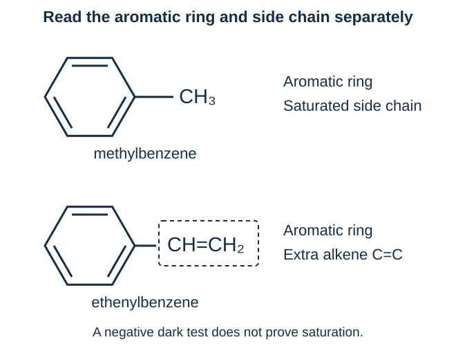
คำถาม 41 — ผลทดสอบต้องมากับเงื่อนไข
ก. cyclopentene (วง C ห้าอะตอมมี C=C หนึ่งพันธะ) กับ cyclopentane (วง C ห้าอะตอมมีเฉพาะพันธะเดี่ยว) สารใดฟอกสี Br₂ ได้โดยไม่ต้องฉายแสงในการทดสอบพื้นฐาน? ปฏิกิริยาเป็นการเติมหรือแทนที่?
ข. benzene ไม่ฟอกสีในการทดสอบ Br₂ ที่มืดและไม่มี FeBr₃ แปลว่า benzene เป็นสารอิ่มตัวแบบแอลเคนใช่หรือไม่?
ค. เปรียบเทียบการเติม Br₂ ที่ C=C ในตัวทำละลายเฉื่อย กับการแทนที่ C–H ด้วย Br เมื่อฉายแสง: กรณีใดเกิด HBr เป็นผลิตภัณฑ์ร่วม?
ก. cyclopentene ฟอกสีได้โดยเกิดการเติมที่ C=C ส่วน cyclopentane เป็นวงอิ่มตัวทั่วไป ไม่ใช้เส้นรอบวงไปนับเป็นพันธะคู่
ข. ไม่ใช่ benzene เป็นสารอะโรมาติก ไม่ใช่แอลเคนอิ่มตัว แม้วาดพันธะคู่สลับในวง แต่ทั้งวงมีความเสถียรและไม่ทำปฏิกิริยาเติมง่ายเหมือนแอลคีน
ค. การแทนที่ให้ R–H + Br₂ → R–Br + HBr ส่วนการเติม Br₂ ที่แอลคีนภายใต้เงื่อนไขนี้นำ Br สองอะตอมไปต่อกับ C สองตำแหน่ง ไม่ปล่อย HBr จากการเติมนั้น
ใช้ข้อมูลร่วมกัน โดยไม่อ้างว่าได้โครงสร้างเดียวเสมอ
ตัวอย่างอ่านสองส่วนของโมเลกุล: methylbenzene มีวงอะโรมาติกกับ –CH₃ แยกกัน ภายใต้การทดสอบที่มืดโดยไม่มีตัวเร่ง วงไม่ได้ทำปฏิกิริยาเติมง่ายแบบแอลคีน แต่เมื่อฉายแสงที่เหมาะสมเกิดการแทนที่บนโซ่ข้างได้ ส่วน ethenylbenzene มี C=C เพิ่มนอกวง จึงทำปฏิกิริยาเติม Br₂ ได้โดยไม่ต้องฉายแสง
ก่อนเทียบภาพ นับ C รวมทั้งหมด นับ H ให้ C ครบสี่ แล้วคัดสูตรที่ไม่ตรงออก จากนั้นตรวจปฏิกิริยาของส่วนที่เหลือ สูตรโมเลกุลเดียวอาจมีหลายโครงสร้าง และผลทดสอบชนิดเดียวอาจยังแยกทุกไอโซเมอร์ไม่ได้
คำถาม 42 — กรองสูตร แล้วจึงใช้การทดลอง
ก. เผาไหม้ X 0.100 mol ได้ CO₂ 0.500 mol และ H₂O 0.500 mol: ระหว่าง pent-1-ene กับ cyclopentane ถ้า X ไม่ฟอกสีในที่มืด แต่ฟอกสีเมื่อฉายแสงที่เหมาะสม สารใดสอดคล้องทั้งสองข้อมูล? ให้เหตุผลตามลำดับ
ข. ถ้าเปลี่ยนผลเป็นฟอกสีในที่มืด แล้วทราบเพียงว่าสูตรเป็น C₅H₁₀ จะสรุปตำแหน่งพันธะคู่ว่าเป็น pent-1-ene เท่านั้นได้หรือไม่?
ก. ได้ \(x=0.500/0.100=5\), \(y=2(0.500)/0.100=10\): ทั้งสองตัวเลือกเป็น C₅H₁₀ แต่ cyclopentane สอดคล้องกับผลที่ให้ เพราะเป็นวงอิ่มตัว ส่วน pent-1-ene ควรเติม Br₂ ได้โดยไม่ต้องฉายแสง
ข. สรุปไม่ได้ ยังมีแอลคีนไอโซเมอร์อื่น เช่น pent-2-ene ที่ให้สูตรเดียวและฟอกสีในที่มืดได้ ต้องอาศัยโครงสร้างตัวเลือกหรือข้อมูลเพิ่ม
ก่อนกลับไปทำข้อสอบ: หาสูตรจากโมลผลิตภัณฑ์ → นับสูตรของภาพ → แยกวงอะโรมาติกกับพันธะนอกวง → ตรวจมืด/แสงและตัวเร่ง → เลือกภาพที่ผ่านทุกเงื่อนไข
อ่านต่อ: บทโมลและสูตรเคมี → สูตรเคมี; บทเคมีอินทรีย์ → ปฏิกิริยาของไฮโดรคาร์บอน · สสวท.: ปฏิกิริยาอินทรีย์ ตอน 1 · OpenStax: วิเคราะห์จากการเผาไหม้
ข้อ 12 — แยกเอสเทอร์ เลือกผลิตภัณฑ์ แล้วต่อเอไมด์ให้ถูกด้าน
แยกงานเป็นขั้น: อ่านส่วนกรด/แอลกอฮอล์ของเอสเทอร์ → ไฮโดรลิซิส → คำนวณมวลของผลิตภัณฑ์ทั้งคู่ → เลือกตามเงื่อนไข → อ่านเอมีน → ประกอบเอไมด์และตรวจจำนวนอะตอม
ชื่อเอสเทอร์บอกชิ้นส่วนใด?
เอสเทอร์มีส่วน R–C(=O)–O–R′: ชื่อแอลคิลข้างหน้าได้จากส่วนแอลกอฮอล์ R′OH ส่วนชื่อที่ลงท้าย -oate ได้จากกรด RCOOH คาร์บอนของ C=O นับรวมอยู่ในฝั่งกรด เมื่อไฮโดรลิซิสด้วยน้ำ มีกรดเป็นตัวเร่งและให้ความร้อน จะได้กรดคาร์บอกซิลิกกับแอลกอฮอล์ เป็นปฏิกิริยาผันกลับได้
ตัวอย่างต่างโจทย์ — methyl propanoate: ส่วน methyl ให้ methanol (CH₃OH) ส่วน propanoate ให้ propanoic acid (CH₃CH₂COOH) เขียนขั้นไฮโดรลิซิสได้ CH₃CH₂COOCH₃ + H₂O ⇌ CH₃CH₂COOH + CH₃OH โดยมี H⁺ และความร้อน
| ผลิตภัณฑ์ในตัวอย่าง | สูตรโมเลกุล | มวลโมเลกุลสัมพัทธ์ Mᵣ |
|---|---|---|
| propanoic acid | C₃H₆O₂ | 3(12) + 6(1) + 2(16) = 74 |
| methanol | CH₄O | 12 + 4(1) + 16 = 32 |
ในหน้านี้ใช้ Aᵣ(C) = 12, Aᵣ(H) = 1, Aᵣ(N) = 14 และ Aᵣ(O) = 16 โดย Mᵣ ไม่มีหน่วย ถ้าถามมวลต่อโมลให้ใส่ g·mol⁻¹ จากตัวอย่างนี้กรดหนักกว่า แต่ไม่ใช่กฎว่าผลิตภัณฑ์ฝั่งกรดหนักกว่าเสมอ ต้องคำนวณใหม่ตามสารที่ให้
คำถาม 43 — แยกชื่อและเปรียบเทียบมวลจริง
ก. propyl methanoate ไฮโดรลิซิสด้วยน้ำภายใต้กรดและความร้อน ได้กรดกับแอลกอฮอล์ชนิดใด? เขียนสูตรแบบย่อของทั้งคู่
ข. ใช้ค่า Aᵣ ที่ให้ คำนวณ Mᵣ ของผลิตภัณฑ์ทั้งคู่จากข้อ ก. ตัวใดมีมวลโมเลกุลมากกว่า?
ก. ได้ methanoic acid: HCOOH และ propan-1-ol: CH₃CH₂CH₂OH ส่วน propyl ไปอยู่ในแอลกอฮอล์ ไม่กลายเป็นชื่อกรด
ข. HCOOH = CH₂O₂ มี Mᵣ = 12 + 2 + 32 = 46; propan-1-ol = C₃H₈O มี Mᵣ = 36 + 8 + 16 = 60 ดังนั้นแอลกอฮอล์หนักกว่าในคู่นี้
ต่อเอไมด์ที่ N และเก็บกิ่งเดิมของเอมีนไว้
อ่านชื่อเอมีนก่อน: ในชื่อแอลเคนที่ลงท้าย -amine เลขตำแหน่งบอกว่า –NH₂ ต่อกับ C ตัวใดของโซ่ ไม่ใช่จำนวน N เช่น alkan-2-amine ให้เริ่มวาง –NH₂ ที่ C ตัวที่ 2 แล้วรักษาการต่อนี้เมื่อเขียนผลิตภัณฑ์
สำหรับเอมีนปฐมภูมิ R″–NH₂ เมื่อต่อเอไมด์ตามเงื่อนไขให้ความร้อนสูง/กำจัดน้ำของโจทย์ ผลิตภัณฑ์เป็น R–C(=O)–NH–R″ เก็บพันธะระหว่าง N กับ R″ เดิมไว้ และ N ยังเหลือ H หนึ่งอะตอม ไม่ย้ายกิ่งไปต่อกับ O หรือคาร์บอนผิดตำแหน่ง
แยกสภาวะ: กรดกับเอมีนผสมกันตามปกติเกิดเกลือแอมโมเนียมคาร์บอกซิเลตก่อน การได้เอไมด์ต้องมีขั้นให้ความร้อนเหมาะสมเพื่อคายน้ำ ไม่เรียกว่าเป็นเอไมด์ทันทีที่ผสม ขั้นเขียนผลิตภัณฑ์สุทธิต่อไปนี้เป็นการติดตามหมู่อะตอม ไม่ใช่กลไกปฏิกิริยาแบบลูกศรอิเล็กตรอน
ต่อจากตัวอย่าง: เลือก propanoic acid (Mᵣ = 74) ไปทำกับ ethanamine: H₂NCH₂CH₃ แล้วให้ความร้อนตามเงื่อนไข ได้ CH₃CH₂C(=O)NHCH₂CH₃ + H₂O เอไมด์มี C₅H₁₁NO และ Mᵣ = 101 ตรวจคาร์บอนฝั่งกรด 3 กับฝั่งเอมีน 2 รวม 5 อะตอม โดย methanol จากขั้นก่อนไม่ได้เข้ามาต่อในเอไมด์นี้
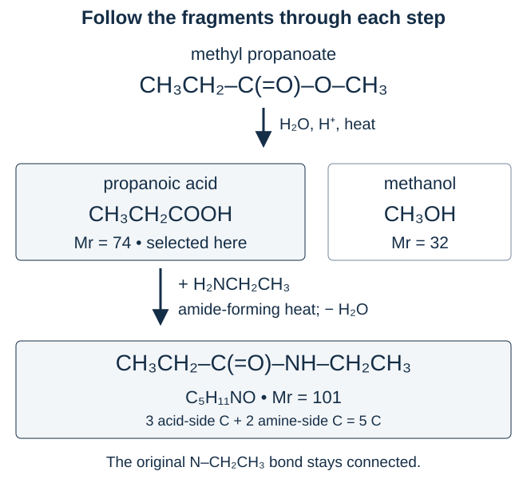
คำถาม 44 — อ่านตำแหน่ง N ก่อนต่อผลิตภัณฑ์
ก. เขียนสูตรแบบย่อของ butan-2-amine และ butan-1-amine โดยชี้ว่า N ต่อกับ C ตำแหน่งใด
ข. นำ ethanoic acid: CH₃COOH ทำกับ butan-2-amine แล้วให้ความร้อนเพื่อเกิดเอไมด์ตามเงื่อนไข จงเขียนสูตรแบบย่อของเอไมด์ และบอกว่า N ยังมี H กี่อะตอม
ก. butan-2-amine: CH₃CH(NH₂)CH₂CH₃ มี N ต่อ C ตัวที่ 2; butan-1-amine: CH₃CH₂CH₂CH₂NH₂ มี N ต่อ C ปลาย สูตรโมเลกุลเหมือนกันแต่การต่อกับ N ต่างกัน
ข. ได้ CH₃C(=O)NHCH(CH₃)CH₂CH₃ โดย N ยังมี H หนึ่งอะตอม หมู่ที่ต่อกับ N คือ –CH(CH₃)CH₂CH₃ เดิม ไม่เปลี่ยนเป็นโซ่ที่ N ต่อปลาย
คำถาม 45 — ตรวจสภาวะและอนุรักษ์อะตอม
ก. กรดคาร์บอกซิลิกกับเอมีนที่เพียงผสมกัน กับเมื่อให้ความร้อนเพื่อคายน้ำตามโจทย์ ควรพิจารณาผลิตภัณฑ์ต่างกันอย่างไร?
ข. เอไมด์จากคำถาม 34 ข. มีสูตรโมเลกุลและ Mᵣ ใด? ตรวจด้วย Mᵣ(ethanoic acid) = 60, Mᵣ(butan-2-amine) = 73 และ Mᵣ(H₂O) = 18
ก. การผสมให้พิจารณาเกลือจากการรับ–ให้โปรตอนก่อน ส่วนเงื่อนไขให้ความร้อน/คายน้ำที่เหมาะสมจึงนำไปสู่เอไมด์ซึ่งมีพันธะ C(=O)–N ต้องไม่ข้ามเงื่อนไขนี้
ข. เอไมด์มี C₆H₁₃NO: C = 2 + 4 = 6, H = 4 + 11 − 2 = 13, N = 1 และ O = 2 − 1 = 1; Mᵣ = 72 + 13 + 14 + 16 = 115 ตรวจมวลได้ 60 + 73 = 115 + 18 = 133
ก่อนกลับไปทำข้อสอบ: แยกชื่อเอสเทอร์ → เขียนผลิตภัณฑ์สองชนิด → เปรียบเทียบ Mᵣ → ใช้เฉพาะสารที่เลือก → เก็บตำแหน่ง N–กิ่งเดิม → ตรวจ C, N, O และ H ที่เสียไปกับน้ำ
อ่านต่อ: บทเคมีอินทรีย์ → ปฏิกิริยาของเอสเทอร์ กรดคาร์บอกซิลิก เอมีน และเอไมด์ · สสวท.: ปฏิกิริยาอินทรีย์ ตอน 2 · OpenStax: ไฮโดรลิซิสเอสเทอร์ · KPU: เกลือกับการเตรียมเอไมด์เมื่อให้ความร้อน
ข้อ 13 — ย้อนจากสายพอลิเมอร์ไปหามอนอเมอร์
อ่านก่อนตัด: มอนอเมอร์คือโมเลกุลตั้งต้นที่นำมาต่อกัน ส่วนหน่วยซ้ำคือแบบโครงสร้างที่ซ้ำอยู่ในสาย หน่วยซ้ำอาจไม่เหมือนมอนอเมอร์ทุกอะตอม เพราะบางปฏิกิริยากำจัดโมเลกุลเล็กออก
ต่อสายแบบใด ดูสิ่งที่เปลี่ยนระหว่างมอนอเมอร์กับพอลิเมอร์
| ตัวอย่างพื้นฐาน | สิ่งที่สังเกต |
|---|---|
| แบบเติมของมอนอเมอร์ไวนิล เช่น CH₂=CH–R | C=C เปลี่ยนเป็นพันธะเดี่ยวในโซ่หลัก R ยังห้อยอยู่กับ C เดิม ในการต่อนี้ไม่มีโมเลกุลเล็กหลุดออก |
| แบบควบแน่นจากหมู่กรดกับเอมีน | เกิดพันธะ –C(=O)–NH– เชื่อมหน่วย พร้อมกำจัดน้ำจากการสร้างพันธะแต่ละครั้ง |
| แบบควบแน่นจากหมู่กรดกับแอลกอฮอล์ | เกิดพันธะ –C(=O)–O– เชื่อมหน่วย พร้อมกำจัดน้ำ |
ในตัวอย่างควบแน่นข้างต้น โมเลกุลตั้งต้นต้องมีหมู่ที่ต่อสายได้ต่อเนื่องอย่างน้อยสองตำแหน่ง อาจใช้มอนอเมอร์สองชนิด เช่น ไดเอมีนกับกรดไดคาร์บอกซิลิก หรือมอนอเมอร์ชนิดเดียวที่มีทั้ง –NH₂ และ –COOH ก็ได้ ไม่ใช้คำว่า “มีเอไมด์” เพียงอย่างเดียวฟันธงวิธีเตรียมโดยไม่ดูมอนอเมอร์และปฏิกิริยา
คำถาม 46 — เทียบก่อนและหลังต่อสาย
ก. propene: CH₂=CHCH₃ ต่อเป็น [–CH₂–CH(CH₃)–]ₙ ตามแบบเติมพื้นฐาน พันธะใดเปลี่ยน? หมู่ CH₃ หายไปหรือไม่ และต้องมีน้ำหลุดออกหรือไม่?
ข. H₂N–(CH₂)₄–COOH มีหมู่ปลายใดบ้างที่ทำให้ต่อพอลิเอไมด์เป็นสายได้? จำเป็นต้องใช้มอนอเมอร์สองชนิดต่างกันเสมอหรือไม่?
ก. C=C เปลี่ยนเป็นพันธะเดี่ยวบนโซ่หลัก หมู่ CH₃ ยังติดกับ C เดิม ไม่กำจัดน้ำในการต่อแบบเติมนี้ และต้องเหลือพันธะที่ปลายหน่วยไว้ต่อหน่วยถัดไป
ข. มี –NH₂ และ –COOH ในโมเลกุลเดียว หมู่หนึ่งต่อกับอีกชนิดบนโมเลกุลถัดไป เกิดพันธะเอไมด์พร้อมน้ำได้ จึงไม่จำเป็นต้องมีมอนอเมอร์สองชนิดต่างกันเสมอ
ถ้ารู้ตำแหน่งเชื่อมใหม่ คืนหมู่ปลายตรงตำแหน่งนั้น
สำหรับพอลิเอไมด์ที่กำหนดว่าเตรียมจากหมู่ –NH₂ กับ –COOH ให้แยกพันธะระหว่าง C ของ C=O กับ N ที่เชื่อมคนละหน่วย แล้วคืน OH ให้ฝั่งคาร์บอนิล คืน H ให้ฝั่ง N ส่วนพันธะและหมู่ข้างในแต่ละชิ้นต้องคงเดิม
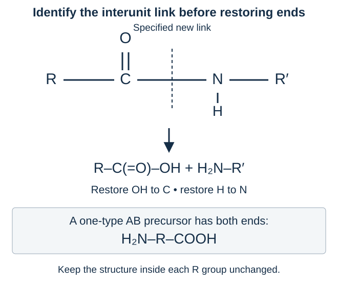
คำถาม 47 — คืนมอนอเมอร์ตามหมู่ที่กำหนด
ก. กำหนดว่าหน่วยซ้ำ [–NH–(CH₂)₃–C(=O)–]ₙ เตรียมโดยควบแน่นมอนอเมอร์ชนิดเดียวซึ่งมีทั้ง –NH₂ และ –COOH จงเขียนมอนอเมอร์แบบย่อ
ข. กำหนดว่าหน่วยซ้ำ [–O–CH₂–CH₂–C(=O)–]ₙ เตรียมโดยควบแน่นมอนอเมอร์ชนิดเดียวซึ่งมีทั้ง –OH และ –COOH จงเขียนมอนอเมอร์ และบอกว่าพันธะที่เชื่อมหน่วยเป็นเอสเทอร์หรือเอไมด์
ก. H₂N–(CH₂)₃–COOH คืน H ที่ N และ OH ที่ C ของคาร์บอนิล จำนวน CH₂ ยังคงเป็นสาม ไม่บวกหรือลบ C ตอนคืนหมู่ปลาย
ข. HO–CH₂–CH₂–COOH และพันธะเชื่อมหน่วยเป็นเอสเทอร์ –C(=O)–O– โดยคืน H ให้ O ปลายด้านหนึ่งและ OH ให้คาร์บอนิลอีกด้าน
หน่วยตั้งต้นอาจมีเอไมด์อยู่ภายในก่อนแล้ว
ให้ทำเครื่องหมายโครงสร้างที่เหมือนกันซ้ำ ๆ แล้วตรวจขอบเขตให้ตรงกับข้อมูลมอนอเมอร์ ถ้าชิ้นตั้งต้นมีเอไมด์หรือหมู่ –OH อยู่เดิม การต่อสายที่หมู่ปลายไม่ได้ทำให้ของเดิมหายไป ห้ามตัดทุกพันธะที่ชื่อเหมือนกันโดยไม่ตรวจว่าเชื่อมระหว่างชิ้นที่โจทย์ให้จริงหรือไม่
คำถาม 48 — เก็บโครงสร้างภายในหน่วยไว้
ก. แบบจำลองนี้ใช้มอนอเมอร์ H₂N–CH₂–C(=O)–NH–CH(CH₂OH)–COOH และกำหนดให้เฉพาะ –NH₂ กับ –COOH ที่ปลายต่อสาย โดย –OH ข้างสายไม่ทำปฏิกิริยา จงเขียนหน่วยซ้ำที่เกิด
ข. ถ้าตัดพันธะเอไมด์ทุกตำแหน่งของสายที่ได้ จะคืนมอนอเมอร์เดิมตรงตามที่กำหนดหรือไม่? ต้องรักษาหมู่ใดไว้บ้าง?
ก. หน่วยซ้ำคือ [–NH–CH₂–C(=O)–NH–CH(CH₂OH)–C(=O)–]ₙ เกิดพันธะใหม่เมื่อ C=O ปลายหน่วยหนึ่งต่อกับ N ต้นหน่วยถัดไป ส่วนเอไมด์กลางชิ้นเดิมยังอยู่
ข. ไม่ตรง เพราะจะตัดเอไมด์ที่มีอยู่ภายในมอนอเมอร์เดิมด้วย ต้องเก็บการต่อภายในชิ้นและกิ่ง –CH₂OH ตามเงื่อนไข แล้วคืนเฉพาะหมู่ปลายของการเชื่อมใหม่
ก่อนกลับไปทำข้อสอบ: หาส่วนที่ซ้ำ → ระบุตำแหน่งเชื่อมกับชนิดปฏิกิริยา → คืนหมู่ปลาย → ตรวจวง กิ่ง และหมู่ภายในทุกส่วนเทียบกับตัวเลือก ไม่เลือกจากหมู่ปลายอย่างเดียว
อ่านต่อ: บทพอลิเมอร์ → พอลิเมอร์และมอนอเมอร์; ปฏิกิริยาการเกิดพอลิเมอร์ · สสวท. Project 14: การเกิดพอลิเมอร์ · OpenStax: พอลิเอไมด์และพอลิเอสเทอร์
ข้อ 14 — แยกโซ่หลัก หมู่ข้าง และการเชื่อมข้ามสาย
ดูการต่อของหน่วยซ้ำ: แบบเส้นหมายถึงหน่วยซ้ำต่อเป็นสาย ไม่ได้แปลว่าเส้นบนกระดาษต้องตรง หรือห้ามมีหมู่เล็กห้อยข้าง ส่วนกิ่งพอลิเมอร์คือสายของหน่วยซ้ำที่แตกออก และจุดเชื่อมข้ามคือพันธะที่เชื่อมคนละสายเข้าด้วยกัน
| คำที่ใช้ | สิ่งที่ต้องตรวจ |
|---|---|
| แบบเส้น | แต่ละโมเลกุลเป็นสายต่อเนื่อง ไม่มีแขนงพอลิเมอร์หรือจุดเชื่อมข้ามในแบบจำลอง หมู่ข้าง เช่น Cl หรือหมู่เอสเทอร์ ไม่ทำให้เป็นร่างแหเอง |
| แบบกิ่ง | มีแขนงซึ่งเป็นสายพอลิเมอร์แตกจากโซ่หลัก |
| แบบร่างแห | มีจุดเชื่อมข้ามหลายตำแหน่งต่อสายต่าง ๆ เป็นโครงข่าย |
คำถาม 49 — หมู่ข้างกับสายกิ่งต่างกันอย่างไร
ก. จากภาพ I, II และ III จงจับคู่กับแบบเส้น แบบกิ่ง และแบบร่างแห พร้อมระบุสิ่งที่ใช้ตัดสิน
ข. ถ้าเห็น Cl หรือหมู่ –C(=O)OR ห้อยอยู่ข้างโซ่หลัก แต่ไม่มีพันธะไปถึงสายอื่น จะเรียกว่าเป็นจุดเชื่อมข้ามได้หรือไม่?
ก. I แบบเส้น: สายยังแยกกัน X เป็นหมู่ข้าง; II แบบกิ่ง: มีสายหน่วยซ้ำแตกแขนง; III แบบร่างแห: มีพันธะโคเวเลนต์เชื่อมคนละสายหลายตำแหน่ง
ข. ไม่ได้ หมู่ข้างเพียงอย่างเดียวไม่ได้เชื่อมสองสาย ต้องเห็นการต่อข้ามสายด้วยพันธะโคเวเลนต์จึงนับเป็นจุดเชื่อมข้าม
เมื่อให้ความร้อน ต้องแยกการอ่อนตัวออกจากการสลาย
| ประเภท | พฤติกรรมตามแบบจำลองพื้นฐาน |
|---|---|
| เทอร์มอพลาสติก | สายไม่ถูกยึดเป็นร่างแหถาวร เมื่อให้ความร้อนในช่วงเหมาะสมอ่อนตัว/ไหลและขึ้นรูปซ้ำได้ พอลิเมอร์บางชนิดอ่อนตัวเป็นช่วง ไม่จำเป็นต้องมีจุดหลอมเหลวคมชัด |
| เทอร์มอเซตหลังบ่ม | มีโครงข่ายเชื่อมข้ามถาวร ไม่ไหลเพื่อหลอมขึ้นรูปซ้ำแบบเทอร์มอพลาสติก เมื่อร้อนจัดอาจสลายตัว |
เทอร์มอพลาสติกก็สลายเมื่อร้อนเกินไปได้เช่นกัน จึงไม่ใช้คำว่า “สลายเมื่อร้อนจัด” เพียงอย่างเดียวแยกสองประเภท และวิธีเกิดแบบเติม/ควบแน่นก็เป็นคนละเกณฑ์กับแบบเส้น/กิ่ง/ร่างแห
คำถาม 50 — จำแนกจากพฤติกรรมที่ระบุ
ก. วัสดุ P อ่อนตัวเมื่ออุ่นในช่วงเหมาะสม เย็นแล้วคงรูป และขึ้นรูปซ้ำได้ ส่วน Q หลังบ่มมีร่างแหถาวร ไม่ไหลขึ้นรูปซ้ำเมื่อร้อน จัดเป็นประเภทใดตามลำดับ?
ข. ถ้าบอกเพียงว่า “ร้อนจัดแล้วสลายตัว” จะแยกได้แน่นอนหรือไม่ว่าเป็นเทอร์มอเซต? เพราะอะไร?
ก. P เป็นเทอร์มอพลาสติก ส่วน Q เป็นเทอร์มอเซตหลังบ่ม เกณฑ์คือการอ่อนตัว/ไหลเพื่อขึ้นรูปซ้ำกับการมีโครงข่ายถาวร
ข. ยังแยกไม่ได้ เทอร์มอพลาสติกก็สลายเมื่อร้อนเกินช่วงใช้งานได้ ต้องรู้พฤติกรรมก่อนสลายและโครงสร้างการเชื่อมข้ามด้วย
แรงระหว่างสายกับความแข็ง–ความเหนียวไม่ใช่คำเดียวกัน
พอลิเมอร์ที่มี C=O และ C–O ในหมู่เอสเทอร์มีตำแหน่งมีขั้ว จึงมีแรงขั้ว–ขั้วเพิ่มจากแรงลอนดอนซึ่งมีอยู่แล้ว เทียบกับสายไฮโดรคาร์บอนภายใต้เงื่อนไขใกล้เคียงกัน แต่หมู่เอสเทอร์ไม่มี O–H หรือ N–H จึงไม่เป็นผู้ให้พันธะไฮโดรเจนแบบนั้นระหว่างสายของตัวเอง
แข็ง คือทนการกดหรือขีด ส่วนเหนียวคือรับพลังงานก่อนขาด/แตก วัสดุแข็งอาจเปราะได้ สมบัติเชิงกลจริงยังขึ้นกับสัดส่วนหน่วยซ้ำ มวลโมเลกุล การจัดเรียง อุณหภูมิและสารเติมแต่ง ไม่ฟันธงสมบัติทั้งหมดจากชื่อหมู่มีขั้วเพียงอย่างเดียว
สายที่มีหน่วยจากมอนอเมอร์มากกว่าหนึ่งชนิดเรียกโคพอลิเมอร์ ส่วนสายที่มาจากมอนอเมอร์ชนิดเดียวเรียกโฮโมพอลิเมอร์ เลข n และ m ที่กำกับบล็อกบอกจำนวนหน่วยในแต่ละส่วน ไม่จำเป็นต้องเท่ากัน และภาพบล็อกไม่ได้บอกสัดส่วนตัวเลขที่แน่นอนถ้ายังไม่ให้ค่า
คำถาม 51 — อ่านตำแหน่งหมู่และขอบเขตที่สรุปได้
ก. พิจารณาแบบจำลอง [–CH₂–CH(–C(=O)OCH₂CH₃)–]ₙ: หมู่เอสเทอร์อยู่บนโซ่หลักหรือห้อยข้าง? มี O–H/N–H ที่เป็นผู้ให้พันธะไฮโดรเจนระหว่างสายตัวเองหรือไม่?
ข. ถ้ารู้เพียงว่าอีกสายมีหมู่มีขั้วมากกว่า จะสรุปว่าต้องทั้งแข็งและเหนียวมากกว่าเสมอได้หรือไม่? ถ้าเป็นโคพอลิเมอร์ ต้องรู้ข้อมูลใดเพิ่ม?
ก. หมู่เอสเทอร์ห้อยข้าง โซ่หลักเป็น C–C และแบบจำลองนี้ไม่มี O–H/N–H สำหรับเป็นผู้ให้ จึงพิจารณาแรงขั้ว–ขั้วกับลอนดอน โดยไม่เรียกหมู่ข้างนี้ว่าจุดเชื่อมข้าม
ข. สรุปเหมารวมไม่ได้ ความแข็งกับความเหนียวต่างกัน ควรดูชนิดและสัดส่วนมอนอเมอร์ มวลโมเลกุล การจัดเรียง จุดเชื่อมข้าม อุณหภูมิและสภาพวัสดุที่นำมาเปรียบเทียบ
ก่อนกลับไปทำข้อสอบ: วงโซ่หลัก → แยกหมู่ข้างจากการเชื่อมข้าม → ระบุเกณฑ์สมบัติเมื่อร้อน → ตรวจแรงระหว่างสาย → อ่านคำถามว่าให้เลือกข้อความถูกหรือไม่ถูกต้อง
อ่านต่อ: บทพอลิเมอร์ → โครงสร้างและสมบัติของพอลิเมอร์ · สสวท.: โครงสร้าง ตอน 1 · สมบัติ ตอน 2 · OpenStax: โครงสร้างกับพฤติกรรมทางกายภาพ
ข้อ 15 — ดุลสมการ เทียบโมล แล้วหามวลผลิตภัณฑ์
สารกำหนดปริมาณคือสารตั้งต้นที่จำกัดปริมาณผลิตภัณฑ์ตามสมการ การทำปฏิกิริยาอย่างสมบูรณ์ตามแบบจำลองไม่ได้หมายความว่าสารตั้งต้นทุกตัวต้องหมดพร้อมกัน บางตัวอาจเหลือ
ดุลก่อน และห้ามเปลี่ยนเลขห้อยของสูตรสาร
เปลี่ยนเฉพาะสัมประสิทธิ์หน้าสูตรเพื่อให้จำนวนอะตอมแต่ละธาตุสองข้างเท่ากัน เลขห้อยใน Fe(OH)₃ บอกองค์ประกอบของสาร ถ้าเปลี่ยนเลขห้อยจะกลายเป็นสูตรคนละชนิด
\[\begin{gathered}\mathrm{FeCl_3}+3\mathrm{NaOH}\\\longrightarrow\mathrm{Fe(OH)_3}+3\mathrm{NaCl}\end{gathered}\]สมการนี้หมายถึงอัตราส่วนโมล 1 : 3 : 1 : 3 ไม่ใช่อัตราส่วนกรัม สัมประสิทธิ์ 1 ที่ไม่ได้เขียนก็ต้องนำมาคิดด้วย
คำถาม 52 — ให้สมการบอกอัตราส่วน
ก. ดุล FeCl₃ + NaOH → Fe(OH)₃ + NaCl แล้วเขียนอัตราส่วนโมลของสารตั้งต้นทั้งสองต่อตะกอน
ข. มี FeCl₃ และ NaOH อย่างละ 0.300 mol จะหมดพร้อมกันหรือไม่? ตัวใดจำกัดปริมาณ และเกิด Fe(OH)₃ ได้กี่โมล?
ก. ได้ 1FeCl₃ + 3NaOH → 1Fe(OH)₃ + 3NaCl อัตราส่วน FeCl₃ : NaOH : Fe(OH)₃ เท่ากับ 1 : 3 : 1
ข. ไม่หมดพร้อมกัน: \(0.300/1=0.300\) กับ \(0.300/3=0.100\) mol ดังนั้น NaOH จำกัดปริมาณ ได้ตะกอน \(0.100(1)=0.100\ \mathrm{mol}\) ส่วน FeCl₃ เหลือ
เทียบ n หารสัมประสิทธิ์ ไม่เทียบแค่จำนวนโมลดิบ
ให้สมการ \(aA+bB\rightarrow cC+\cdots\) สำหรับปฏิกิริยาที่โจทย์ถือว่าเกิดตามสมการจนสารกำหนดปริมาณหมด ให้เปลี่ยนสารตั้งต้นเป็นโมลก่อน แล้วใช้
\[k=\min\!\left(\frac{n_A}{a},\frac{n_B}{b}\right),\qquad n_C=ck\]k เป็นค่าสเกลของสมการ หน่วย mol ไม่ใช่โมลของผลิตภัณฑ์ทุกชนิดเสมอ ต้องคูณสัมประสิทธิ์ผลิตภัณฑ์ c ด้วย ถ้าค่าของสารตั้งต้นเท่ากันทุกตัว แสดงว่าให้มาตามอัตราส่วนพอดี จึงใช้หมดพร้อมกันในแบบจำลองนี้
ตัวอย่างต่างโจทย์: FeCl₃ = 0.300 mol และ NaOH = 0.600 mol
| สาร | n (mol) | สัมประสิทธิ์ | n ÷ สัมประสิทธิ์ (mol) |
|---|---|---|---|
| FeCl₃ | 0.300 | 1 | 0.300 |
| NaOH | 0.600 | 3 | 0.200 |
NaOH ให้ค่าน้อยกว่า จึงมี k = 0.200 mol และตะกอน 1k = 0.200 mol ส่วน FeCl₃ ใช้ไป 0.200 mol เหลือ 0.100 mol สูตรทั่วไปของสารที่เหลือคือ โมลเริ่มต้น − โมลที่ใช้จริง โดยโมลที่ใช้จริง = สัมประสิทธิ์ของสารนั้น × k
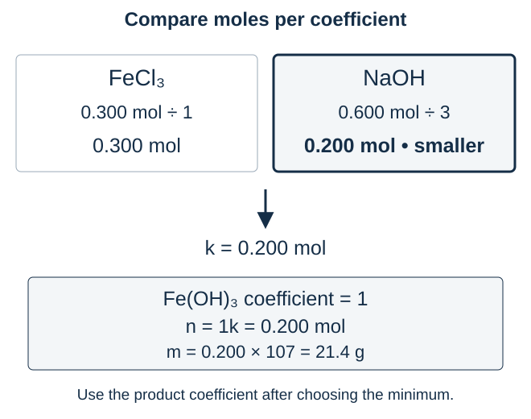
คำถาม 53 — ผลิตภัณฑ์อาจมีสัมประสิทธิ์มากกว่าหนึ่ง
ก. กำหนด N₂ + 3H₂ → 2NH₃ มี N₂ = 0.200 mol กับ H₂ = 0.300 mol ตัวใดจำกัดปริมาณ และได้ NH₃ กี่โมล?
ข. จากข้อ ก. N₂ เหลือกี่โมล? ถ้ามี N₂ = 0.100 mol กับ H₂ = 0.300 mol แทน จะหมดพร้อมกันหรือไม่?
ก. เทียบ \(0.200/1=0.200\) กับ \(0.300/3=0.100\) mol: H₂ จำกัดปริมาณและ \(k=0.100\ \mathrm{mol}\) ได้ \(n_{\mathrm{NH_3}}=2k=0.200\ \mathrm{mol}\) ไม่ใช่ 0.100 mol
ข. N₂ ใช้ไป \(1(0.100)=0.100\ \mathrm{mol}\) จึงเหลือ 0.100 mol ส่วนกรณีใหม่มี \(0.100/1=0.300/3\) จึงให้มาตามสัดส่วนพอดีและหมดพร้อมกันตามแบบจำลอง
โมล → มวล และตรวจสารที่เหลือ
\[n=\frac{m}{M},\qquad m=nM\]M คือมวลต่อโมล หน่วย g·mol⁻¹ ดังนั้น mol × g·mol⁻¹ = g ในตัวอย่างตะกอน Fe(OH)₃ มี M = 56 + 3(16 + 1) = 107 g·mol⁻¹ ไม่ใช่ 56 + 3(16) + 1 จึงได้มวล 0.200 × 107 = 21.4 g
แบบฝึกต่อไปนี้ใช้ Aᵣ(H) = 1, Aᵣ(O) = 16, Aᵣ(Na) = 23 และ Aᵣ(Mg) = 24 โดยสมมติปฏิกิริยาเกิดตามสมการและเก็บตะกอนได้ทั้งหมด ไม่ต้องหักร้อยละผลได้ที่โจทย์ไม่ได้กำหนด
คำถาม 54 — เมื่อโจทย์ให้กรัม ต้องแปลงก่อนเทียบ
ก. กำหนด MgCl₂ + 2NaOH → Mg(OH)₂ + 2NaCl มี MgCl₂ = 0.200 mol และ NaOH = 8.00 g จงหาสารกำหนดปริมาณ โมลตะกอน และมวลตะกอน
ข. ถ้าคง MgCl₂ = 0.200 mol แต่เปลี่ยน NaOH เป็น 0.600 mol ตัวใดจำกัดปริมาณ? ได้ตะกอนกี่กรัม และ NaOH เหลือกี่โมล?
ก. \(M_{\mathrm{NaOH}}=40\ \mathrm{g\,mol^{-1}}\) จึงมี \(n=8.00/40=0.200\ \mathrm{mol}\) เทียบ \(0.200/1\) กับ \(0.200/2\): NaOH จำกัดปริมาณ ได้ Mg(OH)₂ 0.100 mol มวลต่อโมลตะกอน \(24+2(16+1)=58\ \mathrm{g\,mol^{-1}}\) ดังนั้น \(m=0.100(58)=5.80\ \mathrm{g}\)
ข. เทียบ \(0.200/1=0.200\) กับ \(0.600/2=0.300\) mol: MgCl₂ จำกัดปริมาณ ได้ตะกอน 0.200 mol หรือ \(0.200(58)=11.6\ \mathrm{g}\) ใช้ NaOH 0.400 mol จึงเหลือ 0.200 mol
ก่อนกลับไปทำข้อสอบ: ดุล → แปลงเป็นโมล → เทียบ n หารสัมประสิทธิ์ → ใช้ค่าน้อยสุดคูณสัมประสิทธิ์ผลิตภัณฑ์ → คำนวณ M รวมวงเล็บ → เปลี่ยนเป็นกรัมและตรวจความสมเหตุสมผล
อ่านต่อ: บทปริมาณสัมพันธ์ → สมการเคมีและสารกำหนดปริมาณ · สสวท.: สารกำหนดปริมาณ · OpenStax: อัตราส่วนโมล · สารกำหนดปริมาณและผลได้
แหล่งตรวจสอบและศึกษาต่อ
University of Illinois: polymer architecture and classification · UNSW: thermoplastics and thermosets
Purdue: alcohols and hydrocarbon-chain effects · KPU: water interactions, solubility and ionization · OpenStax: aromatic stability · OpenStax: radical halogenation
OpenStax: Graham’s law · IUPAC: organic nomenclature, numbering and locants · OpenStax: skeletal structures · OpenStax: isomerism
OpenStax: electron configurations · Periodic properties · Radioactive decay
OpenStax: รูปร่างและขั้วโมเลกุล · แรงระหว่างโมเลกุล · สมการแก๊สอุดมคติ
Available now: questions 1–15. Read the principle, study a worked example and try the recall tasks before returning to the exam. The examples and practice tasks use different data from the exam.
Exam question 1 — Read configurations and count the requested subshells
Separate three meanings: the leading number identifies the principal shell; s, p, d or f identifies the subshell; the superscript gives its actual electron population. For example, \(3p^4\) is a p subshell in shell 3 containing four electrons.
| Subshell | Orbitals | Maximum electrons |
|---|---|---|
| s | 1 | 2 |
| p | 3 | 6 |
| d | 5 | 10 |
| f | 7 | 14 |
Each orbital holds at most two electrons. Maximum capacity and actual population are different. An unoccupied subshell contributes zero.
Question 1 — Read every part of the notation
a. What do 4, p and 3 mean in \(4p^3\)?
b. How many electrons actually occupy \(3d^7\), and what is the maximum capacity of a d subshell?
a. 4 identifies the principal shell, p the subshell type, and 3 its actual electron population.
b. There are seven electrons present, while the maximum capacity is ten. The superscript describes occupancy.
Write the configuration, then select the requested subshells
A neutral atom has Z electrons. Fill its ground-state configuration and check the sum of the superscripts. Use the actual configuration for elements with exceptions. The diagram is a memory aid for the usual filling order.
Worked example with different data: S, Z = 16, has \(1s^2\,2s^2\,2p^6\,3s^2\,3p^4\), or \([\mathrm{Ne}]\,3s^2\,3p^4\). [Ne] represents ten electrons. To count only 3s, 3p and 3d:
| Requested subshell | Actual population |
|---|---|
| 3s | 2 |
| 3p | 4 |
| 3d | 0 |
| Total | 2 + 4 + 0 = 6 |
[Ne] abbreviates \(1s^2\,2s^2\,2p^6\). Include electrons within the core when their subshell is requested, and exclude subshells that are not requested.
Question 2 — Change the requested subshells
a. Al has \([\mathrm{Ne}]\,3s^2\,3p^1\). Give the populations of 2p, 3p and 3d and their requested total.
b. For this Al configuration, is the population of shell 3 equal to that of subshell 3p?
c. Neutral Ca has Z = 20. Write its abbreviated configuration and count only 3d, 4s and 4p.
a. 2p contains six electrons within [Ne], 3p contains one and 3d is unoccupied: 6 + 1 + 0 = 7.
b. No. Shell 3 includes 3s and 3p, giving 2 + 1 = 3 electrons; subshell 3p contains only one.
c. Ca: \([\mathrm{Ar}]\,4s^2\). Thus 3d = 0, 4s = 2 and 4p = 0, totalling two. Check all electrons: 18 + 2 = 20.
Further reading: Atoms and properties of elements → Electron configurations · IPST Project 14: filling principles
Exam question 2 — Element names, IE, EN, EA and periodic trends
For a question containing several claims, check each underlying rule separately. Ask whether a comparison concerns the same element or different elements, and what conditions support the word “always”.
Main-group families and element names
These are representative elements from main groups 1, 2 and 13–18, not a complete list of all 118 elements. The A labels are older group labels still used in school texts.
| Group / family | Symbol — English name |
|---|---|
| 1 (IA) Alkali metals | Li lithium Na sodium K potassium Rb rubidium Cs caesium Fr francium |
| 2 (IIA) Alkaline earth metals | Be beryllium Mg magnesium Ca calcium Sr strontium Ba barium Ra radium |
| 13 (IIIA) Boron group | B boron Al aluminium Ga gallium In indium Tl thallium |
| 14 (IVA) Carbon group | C carbon Si silicon Ge germanium Sn tin Pb lead |
| 15 (VA) Nitrogen group / pnictogens | N nitrogen P phosphorus As arsenic Sb antimony Bi bismuth |
| 16 (VIA) Oxygen group / chalcogens | O oxygen S sulfur Se selenium Te tellurium Po polonium |
| 17 (VIIA) Halogens | F fluorine Cl chlorine Br bromine I iodine At astatine |
| 18 (VIIIA) Noble gases | He helium Ne neon Ar argon Kr krypton Xe xenon Rn radon |
Check H and He: hydrogen is in group 1 but is a non-metal, not an alkali metal. Helium is in group 18 although it has only two valence electrons: its first shell is full. Groups 3–12 form the d-block region, including Fe (iron), Cu (copper) and Zn (zinc), separate from these eight main groups.
Question 3 — Use group names carefully
a. Given Rb in group 1 and Sr in group 2, name their metal families in order.
b. Why does membership of group 1 alone not make every element in it an alkali metal?
a. Rb is an alkali metal; Sr is an alkaline earth metal.
b. H is a non-metal. A position in group 1 and membership of a family of metals have different conditions.
IE, EN and EA describe different processes
IE — ionization energy: the minimum energy supplied to remove one electron from a gaseous species. First IE starts with a ground-state neutral atom: M(g) → M⁺(g) + e⁻. Removal requires energy; higher IE means harder removal. Molar values are commonly in kJ/mol.
EN — electronegativity: an atom’s tendency to attract bonding electrons towards itself, not to capture a free electron. Pauling EN is dimensionless. It generally rises upwards and to the right; F is highest at about 4.0. Basic tables often omit noble gases: a blank is not EN = 0.
EA — electron affinity: concerns the energy change when a neutral gaseous atom gains one electron: X(g) + e⁻ → X⁻(g). Unlike EN, this involves a free electron rather than bonding electrons. Always check the sign convention.
Sign example: chlorine releases about 349 kJ/mol on electron attachment. A table of energy released reports EA ≈ +349 kJ/mol; a table of the attachment energy change reports ΔE ≈ −349 kJ/mol. These describe the same process.
EA is less regular than EN: electron attachment often becomes more exothermic across a period, but there are many exceptions, including groups 2, 15 and 18. Cl releases more energy than F. Do not assume that EA always increases upwards and to the right, especially for noble gases.
Question 4 — Removal, bond attraction or electron attachment?
a. Match Na(g) → Na⁺(g) + e⁻, attraction of bonding electrons in H–Cl, and Cl(g) + e⁻ → Cl⁻(g) to IE, EN or EA.
b. If Cl releases 349 kJ/mol on attachment, is the attachment energy change positive or negative? Does F having the highest EN mean it releases more energy on attachment than Cl?
a. IE₁, EN and EA, respectively. IE and EA concern process energies; Pauling EN is a dimensionless comparison.
b. Negative, about −349 kJ/mol. EN does not imply that EA ordering: Cl releases more energy than F.
Compare sizes and EN with reasons
| Comparison | Basic main-group trend | Reason |
|---|---|---|
| Left to right within a period | Atomic radius generally decreases | Proton number increases while outer electrons occupy the same principal shell; effective attraction increases. |
| Down a group | Radius generally increases; EN generally decreases | Additional electron shells increase distance and shielding. |
| Ion versus the neutral atom of the same element | A cation is smaller; an anion is larger in the basic model | Electron population and repulsion change while proton number stays fixed. |
EN is the ability to attract shared bonding electrons. These trends give an overall picture; check which atoms or ions are being compared and the conditions stated.
Remember why: across a period, IE₁ and EN generally rise with effective nuclear attraction; down a group they generally fall as shells and shielding increase. IE₁ exceptions include Be → B, where removal begins from 2p rather than 2s, and N → O, where pairing in 2p adds repulsion.
Question 5 — Identify the comparison first
a. K and Ca are both in period 4. Which atom generally has the larger radius, and why?
b. O and S are both in group 16. Which atom is larger, and which element has greater EN?
c. Compare \(\mathrm{Mg^{2+}}\) with Mg and \(\mathrm{F^-}\) with F. Which ion is smaller or larger than its neutral atom?
a. K is generally larger. Effective nuclear attraction increases from K to Ca within the same period.
b. S is larger because it has an additional principal shell; O has greater EN, being higher in the group.
c. Mg²⁺ is smaller than Mg, whereas F⁻ is larger than F. Losing and gaining electrons affect size differently.
Successive IE steps start from different particles
Ionization energy removes an electron from a gaseous atom or ion. For the same element, successive removals require more energy as the increasingly positive ion holds its remaining electrons more strongly. The specified step must still have an electron available for removal.
| Step | Removal of one electron |
|---|---|
| \(IE_1\) | \(\mathrm{M(g)\rightarrow M^+(g)+e^-}\) |
| \(IE_2\) | \(\mathrm{M^+(g)\rightarrow M^{2+}(g)+e^-}\) |
Illustrative data: with \(IE_1=400\) and \(IE_2=2200\,\mathrm{kJ\,mol^{-1}}\), converting M(g) into M²⁺(g) requires both steps: 400 + 2200 = 2600 kJ per mole of M atoms. Starting with M⁺(g) and removing just one electron requires IE₂ alone.
Question 6 — Read the starting particle
a. Which IE step is \(\mathrm{Ca^+(g)\rightarrow Ca^{2+}(g)+e^-}\)?
b. Starting from Ca(g) to obtain Ca²⁺(g), is IE₂ alone sufficient? Which energies are required?
c. Does H⁺ have an electron left? Can a second removal from H be defined by the same procedure?
a. IE₂: removal starts with a +1 ion and removes one further electron.
b. IE₁ + IE₂, because two electrons must be removed from the neutral atom. The final charge alone does not give the total energy.
c. H⁺ has no electrons left, so there is no second electron to remove under this definition. Check that the specified step can exist.
Further reading: Atoms and properties of elements → Periodic table and main-group properties · IPST Project 14: ionization energy
Definitions and content sources: IUPAC · Electron affinity · IUPAC · Ionization energy
Exam question 3 — Separate decayed and remaining fractions, then count half-lives
The half-life, \(T_{1/2}\), is the time for the remaining parent nuclei to fall to half the number present at the start of that interval. This describes a large population of nuclei. It is a property of the isotope and does not change simply because the initial quantity changes.
Let \(N_0\) be the initial number and \(N\) the number of parent nuclei still undecayed. The remaining fraction is \(N/N_0\); the decayed fraction is \(1-N/N_0\). Convert the wording to a remaining fraction before counting halvings.
Question 7 — Separate remaining and decayed amounts
a. If 3/4 of the initial parent nuclei have decayed, what fraction remains?
b. If 40% remains, what percentage has decayed?
a. 1 − 3/4 = 1/4 remains.
b. 100% − 40% = 60% has decayed.
Each interval halves what is still present
| Number of half-lives, k | Remaining fraction |
|---|---|
| 0 | 1 |
| 1 | 1/2 |
| 2 | 1/4 |
| 3 | 1/8 |
| 4 | 1/16 |
In general, \(N=N_0\left(\frac12\right)^{t/T_{1/2}}\). Once the number of halvings k is known, use \(t=kT_{1/2}\), with matching time units. The remaining mass of the same parent isotope has the same fractional decrease as its number of nuclei.
Question 8 — Track one interval at a time
a. Isotope X starts at 64 mg and has an 8-hour half-life. After 16 hours, what mass of X remains and what mass of the initial X has decayed?
b. Are equal masses of X lost during 0–8 hours and 8–16 hours? Show each loss.
a. 16 hours is two half-lives: 64 → 32 → 16 mg. Thus 16 mg remains and 64 − 16 = 48 mg has decayed.
b. No. The first loss is 64 − 32 = 32 mg; the next is 32 − 16 = 16 mg. Each interval halves its own starting quantity.
Work backwards using different data
Isotope Y loses 15/16 of its initial parent nuclei in 40 hours → 1/16 remains → four halvings → \(40=4T_{1/2}\), giving \(T_{1/2}=10\) hours. At 10, 20, 30 and 40 hours, the remaining fractions are 1/2, 1/4, 1/8 and 1/16.
Question 9 — Work backwards and check
a. Isotope Z loses 3/4 of its initial parent nuclei in 28 hours. Find its half-life and check the remaining fraction.
b. If the starting amount of the same isotope Z doubles, must its half-life also double?
a. 1/4 remains, requiring two halvings. Hence \(28=2T_{1/2}\) and \(T_{1/2}=14\) hours. After 14 and 28 hours, 1/2 and 1/4 remain: 3/4 has decayed.
b. No. Under the same decay conditions the half-life is unchanged. More material increases the amount remaining at each time, not the time taken to halve.
Further reading: Atoms and properties of elements → Radioactive elements → Half-life · IPST Project 14: half-life
Exam question 4 — Count electron regions, then separate shape and polarity
Route: draw a Lewis structure → count regions at the central atom → find the shape → add bond dipoles → check every condition for the pair of substances.
Count the regions before choosing a shape name
Total the valence electrons, build the skeleton and bonds, complete the terminal atoms and check the central lone pairs. A single, double or triple bond counts as one region towards one terminal atom. Each lone pair on the central atom adds one region.
Check the electron total before adding lone pairs: some central atoms have fewer or more than eight surrounding electrons. BCl₃ has \(3+3(7)=24\) valence electrons. After making three bonds and completing Cl, no central lone pair remains, although B has only six surrounding electrons.
In \(\mathrm{AX}_{m}\mathrm{E}_{n}\), A is the central atom, X is an atom bonded to A and E is a lone pair on A. There are \(m+n\) regions. Molecular shape describes the atom positions; lone pairs still affect their arrangement.
Different worked example — PCl₃: total valence electrons: \(5+3(7)=26\). Three P–Cl bonds use six electrons; lone pairs on the three Cl atoms use 18. The remaining two electrons form one lone pair on P: AX₃E, four regions but a trigonal pyramidal molecular shape.
Question 10 — Read the Lewis structure first
a. How many valence electrons does SCl₂ have? After drawing its Lewis structure, how many lone pairs and electron regions are there at S?
b. Given H–C≡N, how many regions are there at C and what is its AX type?
a. \(6+2(7)=20\) electrons. Two S–Cl bonds use four and terminal Cl lone pairs use 12. Four electrons remain as two lone pairs on S: four regions in total, AX₂E₂.
b. Two regions: one towards H and one towards N. It is AX₂; the triple bond is not three separate regions.
VSEPR and three-dimensional drawings
VSEPR (valence-shell electron-pair repulsion) models how valence electron regions arrange around A to reduce repulsion. Electron-region geometry includes bonds and lone pairs; molecular shape describes only atom positions.
Choose the molecular shape
| Regions / AX type | Molecular shape | Basic X–A–X angles |
|---|---|---|
| 2 AX₂ | Linear | 180° |
| 3 AX₃ | Trigonal planar | 120° |
| 3 AX₂E | Bent | < 120° |
| 4 AX₄ | Tetrahedral | 109.5° |
| 4 AX₃E | Trigonal pyramidal | < 109.5° |
| 4 AX₂E₂ | Bent | < 109.5° |
| 5 AX₅ | Trigonal bipyramidal | 90°, 120°, 180° |
| 5 AX₄E | Seesaw | ≈ 90°, ≈ 120°, ≈ 180° |
| 5 AX₃E₂ | T-shaped | ≈ 90°, ≈ 180° |
| 5 AX₂E₃ | Linear | 180° |
| 6 AX₆ | Octahedral | 90°, 180° |
| 6 AX₅E | Square pyramidal | ≈ 90°, ≈ 180° |
| 6 AX₄E₂ | Square planar | 90°, 180° |
≈ marks reference angles that may be distorted by lone pairs. In AX₄E, 90°/120° angles are often compressed and opposite positions can deviate from 180°. A molecule can have several different bond angles.
Question 11 — Separate geometry, shape and angles
a. CH₄, NH₃ and H₂O each have four regions at the central atom. Why do their shapes and angles differ?
b. Which directions do solid and dashed wedges represent? Are all angles in AX₅ equal to 120°?
a. They have zero, one and two lone pairs, giving tetrahedral, trigonal pyramidal and bent shapes; their example angles are about 109.5°, 107° and 104.5°.
b. Solid wedges point towards the viewer; dashed wedges go behind. AX₅ has ideal equatorial–equatorial 120°, axial–equatorial 90°, and opposite axial–axial 180° angles.
Lone-pair positions must also reduce repulsion. With five regions, lone pairs take equatorial positions first. In six-region AX₄E₂, the two lone pairs lie opposite each other, leaving four terminal atoms in a square plane.
Question 12 — The same number of X atoms is not enough
a. For AX₄E, state the number of X atoms, central lone pairs and total regions, then name the shape.
b. AX₄E₂ has the same number of terminal atoms as part a. Does it have the same shape? Explain briefly.
a. Four X atoms and one lone pair give five regions: seesaw.
b. No. AX₄E₂ has six regions and two opposite lone pairs, giving square planar geometry. Count both X and E.
Do the bond dipoles cancel?
Use electronegativity to identify bond-dipole directions, then add their vectors in three dimensions. Zero total → nonpolar molecule; nonzero total → polar molecule. The same shape does not guarantee the same polarity: check the terminal atoms and the dipole magnitudes.
Different examples: SiF₄ is tetrahedral with four equivalent F positions, so its polar Si–F bond dipoles cancel. Trigonal pyramidal PCl₃ has a nonzero sum of its P–Cl bond dipoles.
Question 13 — Check shape and polarity separately
a. CF₄ and CHF₃ are both tetrahedral at C. Are both molecules nonpolar? Explain.
b. HCN is linear, H–C≡N. Is linear shape alone enough to conclude that it is nonpolar?
a. No. CF₄ is nonpolar because four equivalent C–F dipoles cancel. In CHF₃, H replaces one F, so the dipoles no longer cancel completely and the molecule is polar.
b. No. H and N are different terminal atoms: the bond dipoles are not an equal opposite pair. HCN is polar. Both structure and bonding must be considered.
Further reading: Chemical bonding → Covalent bonding: Lewis structures, VSEPR and polarity · IPST: molecular shapes · IPST: molecular polarity
Exam question 5 — Intermolecular forces, properties and solubility
Start with the particles: molecular substances have separate molecular units, but KBr is an ionic crystal and diamond is a continuous covalent network. Do not replace the main crystal bonding in these two structures with a molecular-force label.
What are intermolecular forces?
Covalent bonds hold atoms together within a molecule. Intermolecular forces attract separate molecules to each other. An O–H bond within one water molecule differs from attractions between water molecules. Boiling separates H₂O molecules into the gas phase; it does not split their O–H bonds to produce H₂ and O₂.
1. London dispersion: present even without permanent polarity
Fluctuations in electron density produce an instantaneous dipole, which induces a dipole in a neighbouring particle. Their attraction is London dispersion. It occurs in all atoms and molecules, polar and nonpolar. O, N and F are not required.
A more easily distorted electron cloud is more polarizable and generally gives stronger dispersion. Within a similar family, larger electron clouds usually give stronger attractions. Shape and contact area also matter: highly branched alkane isomers often have lower boiling points than their straight-chain isomers. Molar mass alone does not rank all substances.
2. Dipole–dipole attraction: check the whole molecule
A polar molecule has permanent δ⁺ and δ⁻ regions, which attract oppositely charged regions of neighbouring molecules. First combine bond dipoles using the shapes from question 4. CO₂ has polar bonds but no net molecular dipole; one polar bond does not automatically make the whole molecule polar.
3. Hydrogen bonding: identify a donor and an acceptor
Under the introductory criterion used here, a donor has H directly bonded to N, O or F; an acceptor supplies a suitable lone pair on another molecule, as in water’s O–H···O interaction. The dotted H···O contact differs from the covalent O–H bond. Merely having both H and O somewhere in a formula does not guarantee a donor.
Question 14 — Explain before classifying
a. How can nonpolar molecules attract each other? Does London dispersion disappear when ethanol forms hydrogen bonds?
b. Must the O–H bonds inside water break when it boils? What changes instead?
a. Instantaneous and induced dipoles produce dispersion. It remains present in ethanol alongside its other interactions.
b. No. H₂O molecules separate by overcoming intermolecular attractions; boiling is not decomposition into elements.
Which forces are present in a pure molecular substance?
| What to check | Forces to consider in the pure substance |
|---|---|
| Every molecule | London dispersion from temporary dipoles |
| A polar molecule | Permanent dipole–dipole attraction as well |
| H bonded directly to N, O or F, with a suitable acceptor in another molecule | Intermolecular hydrogen bonding as well |
Hydrogen bonding is a particular attraction involving polar molecules. Hydrogen bonding does not remove London forces. When asked for the characteristic force, identify the interaction that distinguishes the substance, rather than assuming that all other forces vanish.
Question 15 — All forces versus the characteristic force
a. Which intermolecular force is considered between F₂ molecules?
b. Do HBr molecules experience London forces and permanent dipole–dipole attraction? Do they form N–H/O–H/F–H-type hydrogen bonds?
c. Which of the three force categories in the table occur between C₂H₅OH molecules?
a. F₂ is nonpolar, so London dispersion is considered.
b. Both London dispersion and permanent dipole–dipole attraction occur. H–Br does not meet the hydrogen-bonding criterion used at this level.
c. All three: London dispersion, dipole–dipole attraction and hydrogen bonding. Ethanol has an O–H donor and O lone-pair acceptor.
Check the hydrogen-bond donor and acceptor
Donor: H bonded directly to N/O/F. Acceptor: an available suitable lone pair, such as one on ether oxygen. Merely finding O in a formula is not enough to conclude that the pure substance can hydrogen-bond between its own molecules.
Question 16 — A different partner can change the interaction
a. CH₃–O–CH₃ contains O but no O–H. Can this pure ether donate a hydrogen bond to another ether molecule?
b. Can water form a hydrogen bond with this ether? Identify the donor and acceptor.
a. Not under this criterion. Ether has no H directly bonded to N/O/F and therefore no donor site, although oxygen can accept.
b. Yes. Water donates through an O–H hydrogen and ether oxygen accepts. A lack of ether–ether hydrogen bonding does not prevent ether–water hydrogen bonding.
How do these forces affect observable properties?
| Property | Reasoning and comparison conditions |
|---|---|
| Boiling point | For comparable structures and sizes, stronger attractions usually require more energy for separation and raise boiling temperature. Compare at the same external pressure. |
| Volatility and vapour pressure | At the same temperature, stronger attractions usually make escape from the liquid harder: lower volatility and lower equilibrium vapour pressure. |
| Viscosity and surface tension | Stronger attractions often increase both, but temperature, size, shape and molecular entanglement also matter. |
| Melting point | Crystal packing and symmetry also matter. Force labels alone do not determine the order, which need not match boiling-point order. |
| Solubility | Consider interactions within each pure substance and new solute–solvent interactions, including nonpolar regions; a pure-substance force label alone is insufficient. |
Example: ethanol, CH₃CH₂OH, and dimethyl ether, CH₃OCH₃, have the same molecular formula and molar mass. Ethanol has an O–H donor and self hydrogen-bonds, giving a higher boiling point. The ether has no donor. This matched-size example does not mean every hydrogen-bonding substance boils above every substance without hydrogen bonding.
Question 17 — Explain properties with conditions
a. Which has the higher boiling point, ethanol or dimethyl ether? Why is finding O in both formulas insufficient?
b. Hexane and octane are nonpolar and both have dispersion forces. Why need their boiling points not match? Which is generally higher?
c. At the same temperature, do stronger attractions usually raise or lower vapour pressure? Can the same simple rule rank every melting point?
a. Ethanol: it has both an O–H donor and an O acceptor, allowing self hydrogen-bonding. The ether has an acceptor but no donor.
b. Dispersion strengths differ. Within this family, octane’s larger, more polarizable electron cloud generally gives stronger attractions and a higher boiling point.
c. Usually lower, because escape is harder. Melting points additionally depend on crystal packing and symmetry.
Solubility also depends on solute–water interactions
Ask separately: how does the substance attract itself? and how favourably does it interact with water? Ethanol can interact well with water through O–H and O; nonpolar ethane, C₂H₆, is only very slightly soluble. Substances with the same characteristic force need not have the same water solubility: the size of the nonpolar region matters too.
Question 18 — Check the solubility condition as well
a. Which interacts more favourably with water, C₂H₅OH or C₂H₆? Identify the structural feature used.
b. If KBr dissolves in water, does that mean KBr consists of molecules hydrogen-bonded to each other?
c. Ethanol and hexan-1-ol both have O–H. Must they be equally soluble in water?
a. C₂H₅OH: its O–H group can donate and its O can accept hydrogen bonds with water. C₂H₆ is nonpolar.
b. No. KBr is an ionic crystal; dissolution gives K⁺ and Br⁻ ions, which interact with polar water molecules through ion–dipole attraction.
c. No. Hexan-1-ol has a longer nonpolar hydrocarbon region and is less water-soluble. O–H alone does not determine the complete solubility behaviour.
Further reading: Chemical bonding → Covalent bonding: intermolecular forces and solubility · IPST: intermolecular forces
Definitions and content sources: Intermolecular forces
Exam question 6 — Ideal-gas foundations, equations and graph slopes
Conditions: ideal gas behaviour, with fixed \(n\) and \(P\) along each line. Varying \(T\) therefore gives a straight \(V\)–\(T\) graph.
What is an ideal gas?
An ideal gas is a model, not a particular chemical species. Particles have negligible volume compared with their container, experience no mutual forces except during collisions, move randomly and undergo elastic collisions with each other and the walls: total kinetic energy is conserved in a collision.
What causes pressure? Particles collide with the walls and transfer momentum, producing force per unit area. Higher absolute temperature means greater mean kinetic energy. In a rigid sealed container with fixed V and n, heating increases pressure. Individual particles do not all move at one speed.
Real gases have finite-sized particles and intermolecular interactions. They generally approach ideal behaviour at low pressure and sufficiently high temperature relative to condensation. High pressure or proximity to condensation gives larger deviations. Extrapolating an ideal-gas line to 0 K does not mean a real sample stays gaseous there.
Read variables and units before substitution
| Variable | Meaning and compatible units |
|---|---|
| P | Absolute pressure, e.g. atm, kPa or Pa; convert gauge readings when needed. |
| V | Gas volume, e.g. L or m³; 1 L = 10⁻³ m³ and 1 mL = 10⁻³ L. |
| n | Amount in mol. From mass m and molar mass M, use n = m/M; do not substitute grams as moles. |
| T | Absolute temperature in K: T = t(°C) + 273.15; 27 °C = 300.15 K (often approximated as 300 K when specified). |
| R | Gas constant: 0.08206 L·atm·mol⁻¹·K⁻¹, 8.314 L·kPa·mol⁻¹·K⁻¹, or 8.314 Pa·m³·mol⁻¹·K⁻¹. Match P and V units. |
PV = nRT relates pressure, volume, amount and temperature at one state. For n = 0.500 mol, T = 300 K and P = 1.00 atm, V = nRT/P ≈ 12.3 L using R = 0.08206. One mole is not always 22.4 L: molar volume depends on P and T.
Question 19 — Explain the model and prepare the units
a. What causes gas pressure? Why does P rise when a rigid sealed container is heated?
b. With P = 100 kPa, V in L and t = 27 °C, which R and T should be used?
c. Does a real gas near condensation at high pressure become more or less ideal?
a. Wall collisions transfer momentum. Higher T increases mean kinetic energy, so P rises when n and V stay fixed.
b. R = 8.314 L·kPa·mol⁻¹·K⁻¹ and T = 300.15 K, not 27.
c. Less ideal: intermolecular forces and particle volume become harder to neglect.
Basic gas laws: state what is held constant
| Relationship | Held constant | Two-state equation |
|---|---|---|
| Boyle: P inversely proportional to V | n, T | P₁V₁ = P₂V₂ |
| Charles: V proportional to T | n, P | V₁/T₁ = V₂/T₂ |
| Gay-Lussac / Amontons: P proportional to T | n, V | P₁/T₁ = P₂/T₂ |
| Avogadro: V proportional to n | P, T | V₁/n₁ = V₂/n₂ |
For fixed n, the combined law is P₁V₁/T₁ = P₂V₂/T₂. If gas is added, leaks or reacts so that n changes, use PV = nRT for each state or compare PV/(nT) = R. All temperature ratios require K.
Question 20 — Choose a law from its conditions
a. Halve V at fixed n and T: how does P change? Instead, double T from 300 to 600 K at fixed n and P: how does V change?
b. Double n while P and T stay fixed. What happens to V? Can the fixed-n combined gas law be used across these states?
a. First P doubles (Boyle); in the second case V doubles (Charles). Check whether P or V is held fixed.
b. V doubles. The fixed-n combined law cannot be used because n changed; retain n in the equation.
Rearrange before comparing lines
Starting with \(PV=nRT\), write \(V=\dfrac{nR}{P}T\). Compare with \(y=mx+b\): the vertical axis is \(V\), the horizontal axis is \(T\), so
\[m=\frac{\Delta V}{\Delta T}=\frac{nR}{P}\]With \(T\) in K, the model line passes through the origin. Match the units of \(R\) to \(P,V,n\). For example, \(R=0.082\ \mathrm{L\,atm\,mol^{-1}\,K^{-1}}\) gives a slope in L/K.
A Celsius axis shifts the intercept, not the slope
For horizontal coordinate \(t\) in °C, \(T=t+273.15\), giving \(V=\dfrac{nR}{P}(t+273.15)\). The slope remains \(nR/P\) because a 1 °C interval equals a 1 K interval. However, \(t=0\) does not mean \(T=0\) or \(V=0\).
Question 21 — Separate slope from intercept
a. Model state A has V = 1.23 L at 300 K and V = 2.46 L at 600 K. Find the slope with units.
b. On a Celsius axis, must V = 0 at 0 °C? Does changing from °C to K multiply the slope by 273.15?
a. \(m=(2.46-1.23)/(600-300)=0.00410\ \mathrm{L/K}\): volume increase per unit temperature interval.
b. No to both. 0 °C is 273.15 K, so the model gas still has volume. Shifting the temperature zero changes the intercept, not \(\Delta T\) or the slope.
Cancel R when comparing states
Since \(R\) is the same, compare \(n/P\): larger ratio → steeper line; equal ratio → equal slope. Under the model, using the same temperature axis, equal \(n/P\) values give coincident \(V\)–\(T\) lines.
Different worked example: A has n = 0.050 mol and P = 1.0 atm, so n/P = 0.050 mol/atm. B has n = 0.050 mol and P = 0.50 atm, so n/P = 0.100 mol/atm: B has twice A's slope despite the same amount of gas.
Question 22 — Calculate ratios before ranking lines
a. A: n = 0.050 mol, P = 1.0 atm; B: n = 0.050 mol, P = 0.50 atm; C: n = 0.100 mol, P = 2.0 atm. Calculate each n/P and rank the slopes.
b. If two lines have the same slope, must both n and P be individually equal? Use A and C to check.
a. A = 0.050, B = 0.100 and C = 0.050 mol/atm, so \(m_B>m_A=m_C\). B has twice the slope of A and C.
b. No. Slope determines n/P only. Both n and P for C are twice those for A, while their ratio and slope are equal.
Use a slope ratio for algebraic data
\[\frac{m_2}{m_1}=\frac{n_2/P_2}{n_1/P_1}=\frac{n_2P_1}{n_1P_2}\]Identify what stays fixed before substituting. For equal n, slope is inversely proportional to P; for equal P, slope is proportional to n. Comparing only n or only P when the other quantity varies may give the wrong conclusion.
Question 23 — Work backwards from the slope
a. If \(m_2=3m_1\) and \(n_2=n_1\), express \(P_2\) in terms of \(P_1\).
b. If \(m_2=\tfrac12m_1\) and \(P_2=\tfrac14P_1\), express \(n_2\) in terms of \(n_1\).
a. \(3=P_1/P_2\), hence \(P_2=P_1/3\). At fixed n, one-third the pressure gives three times the slope.
b. \(\tfrac12=\dfrac{n_2P_1}{n_1(P_1/4)}=4\dfrac{n_2}{n_1}\), hence \(n_2=n_1/8\). Both variables must be considered together.
Further reading: Gases → Relationships among V, P, T and n: equations and graphs · IPST: volume and temperature · IPST: ideal gas law
Definitions and content sources: Ideal gas law
Exam question 7 — Find the meeting point using distances from both ends
Start with the picture: diffusion is the net spreading from higher to lower concentration through random particle motion. Release two gases simultaneously from opposite ends: the faster-diffusing gas travels farther in the same time, so their meeting point lies nearer the slower gas.
Lower molar mass → faster spreading at the same temperature
Use Graham’s law in the problem model. Here \(r\) is the rate and \(M\) is molar mass; use matching g·mol⁻¹ units for both gases.
\[\frac{r_P}{r_Q}=\sqrt{\frac{M_Q}{M_P}}\]The mass order is reversed relative to the rate order. If P is lighter than Q, check that \(r_P/r_Q>1\). Gases at the same temperature have the same average kinetic energy, but not the same average speed.
Conditions: the ring-distance calculations below use the school-level Graham model, with simultaneous release, equal temperature and equal time to meeting. They do not describe every particle moving straight at one speed. Escape through a tiny opening is called effusion; Graham’s law also compares it under matching conditions.
Question 24 — Check which gas is faster first
a. Gases P and Q have molar masses 10.0 and 90.0 g·mol⁻¹, respectively, at the same temperature. Find \(r_P/r_Q\) and identify the faster gas.
b. Equal quantities of these gases effuse through the same small-opening apparatus under matching comparison conditions. What is \(t_P/t_Q\)?
a. \(r_P/r_Q=\sqrt{90.0/10.0}=3\). P spreads three times as fast as Q in this model.
b. For equal quantities, \(t\propto1/r\), so \(t_P/t_Q=1/3\). The faster gas needs less time, not more.
Turn a rate ratio into a distance ratio
For a tube of length \(L\), release P from the left and Q from the right simultaneously. If they meet \(x\) from the left, P travels \(d_P=x\), Q travels \(d_Q=L-x\), and \(d_P+d_Q=L\).
\[\frac{x}{L-x}=\frac{d_P}{d_Q}=\frac{r_P}{r_Q}=\sqrt{\frac{M_Q}{M_P}}\]Different worked example: a 72.0 cm tube has P on the left (M = 16.0) and Q on the right (M = 144.0 g·mol⁻¹). The distance ratio is \(\sqrt{144.0/16.0}=3\). Divide the length into 3 + 1 = 4 parts: the distance from the left is \(72.0(3/4)=54.0\ \mathrm{cm}\), and from the right it is 18.0 cm. Their sum is 72.0 cm, and the ring is nearer the heavier Q.
Question 25 — The reference end matters
a. A model tube is 60.0 cm long. Release R on the left (M = 64.0) and S on the right (M = 16.0 g·mol⁻¹) simultaneously at the same temperature. Find the ring’s distance from each end.
b. Is the ring nearer the heavier or lighter gas? If asked for the distance from the right, can you use the distance from the left?
a. \(d_R/d_S=\sqrt{16.0/64.0}=1/2\), with a total of 60.0 cm. Thus \(d_R=20.0\ \mathrm{cm}\), \(d_S=40.0\ \mathrm{cm}\); equivalently solve \(x/(60.0-x)=1/2\).
b. It is nearer R, the heavier, slower gas. The distance from the right is 40.0 cm, while that from the left is 20.0 cm. Use the end specified.
Question 26 — Work backwards to molar mass
a. In the same model, an 84.0 cm tube has a ring 28.0 cm from the left. Gas Q on the right has M = 36.0 g·mol⁻¹. Find the molar mass of P on the left.
b. Can \(28.0/84.0\) replace \(d_P/d_Q\)? Explain.
a. The right-hand distance is \(84.0-28.0=56.0\ \mathrm{cm}\). Hence \(28.0/56.0=\sqrt{36.0/M_P}\). Squaring gives \(1/4=36.0/M_P\), so \(M_P=144.0\ \mathrm{g\,mol^{-1}}\).
b. No. 84.0 cm is the total length, not Q’s distance. The denominator is 56.0 cm. Square the ratio when solving backwards for mass.
Before returning: label left/right → make the two distances add to the tube length → set the ratio → check that the heavier gas is nearer the meeting point → answer from the requested end.
Further reading: Gases and Their Properties → Kinetic Molecular Theory and Gas Diffusion · IPST Project 14: Gas diffusion · OpenStax: Effusion and diffusion
Exam question 8 — Functional groups, organic names and cycloalkenes
Goal: recognize functional groups from a structure and reconstruct a structure from its name. The tables cover school-level functional groups plus selected extensions, before returning to question 8’s cycloalkenes. Advanced polycyclic and exhaustive university-level nomenclature are outside this review.
Start with parent carbon count and bonding
| Parent carbon count | Name stem |
|---|---|
| 1 | meth- |
| 2 | eth- |
| 3 | prop- |
| 4 | but- |
| 5 | pent- |
| 6 | hex- |
| 7 | hept- |
| 8 | oct- |
| 9 | non- |
| 10 | dec- |
| Structure | Naming form | Example |
|---|---|---|
| Alkane: single C–C bonds | -ane | CH₃CH₂CH₂CH₃ → butane |
| Alkene: C=C | -ene; locate the start of the double bond | CH₃CH=CHCH₃ → but-2-ene |
| Alkyne: C≡C | -yne; locate the start of the triple bond | HC≡CCH₂CH₃ → but-1-yne |
| Aromatic: benzene ring | Benzene parent with substituent prefixes | C₆H₅CH₃ → methylbenzene (toluene) |
The stem counts parent carbons, not all branch carbons. Methyl is –CH₃, ethyl is –CH₂CH₃, and cyclo- denotes a ring. Saturated alkanes have no characteristic functional group, so hydrocarbons are listed separately from the functional-group table.
Functional groups: recognize the structure and naming form
R and R′ represent carbon groups and may differ; Ar is aromatic; C(=O) is carbonyl. Inspect what is attached to the carbonyl carbon before classifying a group. Prefix forms apply when that group is subordinate and depend on its connection to the parent.
| Family / group pattern | Suffix / naming form; prefix | Example and recognition cue |
|---|---|---|
| Alcohol R–OH | -ol; hydroxy- | CH₃CH₂CH₂OH → propan-1-ol OH is attached to a saturated carbon; 1 locates OH. |
| Phenol Ar–OH | phenol; hydroxy- | C₆H₅OH → phenol OH is directly attached to an aromatic ring. |
| Ether R–O–R′ | alkoxyalkane; methoxy-, ethoxy- | CH₃OCH₂CH₃ → methoxyethane Ethane is the parent; CH₃O– is methoxy. |
| Aldehyde R–C(=O)H | -al; oxo- / formyl- | CH₃CH₂CHO → propanal Count the CHO carbon in the chain, at position 1. |
| Ketone R–C(=O)–R′ | -one; oxo- | CH₃COCH₂CH₃ → butan-2-one The carbonyl carbon is bonded to carbon on both sides. |
| Carboxylic acid R–C(=O)OH | -oic acid; carboxy- | CH₃CH₂COOH → propanoic acid Include COOH carbon as C-1; its OH is part of the acid group. |
| Ester R–C(=O)–O–R′ | alkyl alkanoate; alkoxycarbonyl- | CH₃CH₂COOCH₃ → methyl propanoate Methyl comes from R′ on O; propanoate includes the acid-side carbonyl carbon. |
| Amine R–NH₂ / R₂NH / R₃N | -amine; amino- | CH₃CH₂NH₂ → ethanamine N is not attached to a carbonyl as in an amide; use N- for N substituents. |
| Amide R–C(=O)–NH₂ | -amide; carbamoyl- | CH₃CONH₂ → ethanamide N is directly bonded to the carbonyl carbon; CONHR′ and CONR′R″ are also amides. |
| Haloalkane R–X (X = F, Cl, Br, I) | fluoro-, chloro-, bromo-, iodo- | CH₃CHClCH₃ → 2-chloropropane Use halo prefixes, not a principal-group suffix. |
Extensions: recognize these when present
| Family / group pattern | Suffix / naming form; prefix | Example and recognition cue |
|---|---|---|
| Nitrile R–C≡N | -nitrile; cyano- | CH₃CH₂CN → propanenitrile The nitrile carbon is C-1; C≡N is not a C≡C bond. |
| Nitro compound R–NO₂ | nitro- | CH₃CH₂NO₂ → nitroethane NO₂ is nitro, not an amine just because it contains N. |
| Thiol R–SH | -thiol; sulfanyl- | CH₃CH₂SH → ethanethiol SH is distinct from the OH of an alcohol. |
| Acyl halide R–C(=O)–X | -oyl halide | CH₃COCl → ethanoyl chloride Cl is attached to a carbonyl carbon, unlike a haloalkane. |
| Acid anhydride R–C(=O)–O–C(=O)–R′ | acid name → anhydride | (CH₃CO)₂O → ethanoic anhydride For this symmetrical example, replace acid with anhydride. |
Read the written endings carefully: -ol, -al, -one, -oic acid, -oate, -amine and -amide are different. Similar-sounding endings, especially -al and -ol, identify different functional groups.
Question 27 — Recognize connectivity, not just the presence of O or N
a. Classify CH₃CH₂CHO, CH₃COCH₃, CH₃COOCH₃ and CH₃CONH₂, identifying the decisive structural feature.
b. Are C₆H₅OH and C₆H₅CH₂OH both phenols? How many parent carbons does CH₃CH₂CN contain when named as a nitrile?
a. Aldehyde (CHO), ketone (carbonyl bonded to two carbons), ester (C(=O)–O–C), and amide (C(=O)–N). Do not classify an ester as separate ketone and ether groups.
b. No. The first is phenol; the second is an alcohol because CH₂ separates OH from the ring. CH₃CH₂CN has three parent carbons including the nitrile carbon: propanenitrile.
A naming procedure: do not start with the nearest branch
- Identify all groups, then select the principal suffix group. For the selected groups used here: carboxylic acid > ester > amide > nitrile > aldehyde > ketone > alcohol > amine. This is a selected sequence, not an exhaustive list.
- Choose a parent that properly includes the principal group. For simple chains, first satisfy the principal-group criteria, then consider chain length and multiple bonds. Do not choose an unrelated longer chain that drops the principal group.
- Give the principal group the required low locants before considering multiple-bond and substituent locants. For an alcohol, OH has priority over a double bond. In a hydrocarbon without a principal group, branch locants must not override double-bond numbering.
- Identify branches and all locants. Alphabetize simple substituent prefixes, ignoring multiplicative di-, tri- and tetra-, then assemble locants, prefixes, parent, unsaturation and suffix.
- Place a locant immediately before its structural feature. Use commas between numbers and hyphens between numbers and words, as in 2,3-dimethyl…. Substitutive names usually run together, but ester and acid naming forms contain spaces, as in methyl propanoate and propanoic acid.
Worked example: HOCH₂–CH(CH₃)–CH₂–CH₃ has OH as principal group. The OH-containing parent has four carbons. Number from OH to give OH at 1 and methyl at 2: 2-methylbutan-1-ol. Do not give OH locant 4 merely to favour numbering from the other end.
Two features: CH₃CH(OH)COOH uses COOH as the principal group, acid carbon as C-1 and hydroxy- for OH: 2-hydroxypropanoic acid. HOCH₂CH₂CH=CH₂ retains both unsaturation and the alcohol suffix: but-3-en-1-ol; do not reverse the numbering to favour the double bond over OH.
Question 28 — Choose the principal group and numbering direction
a. Name CH₃CH(OH)COOH and explain why -ol is not the principal suffix.
b. Name HOCH₂CH₂CH=CH₂ and HOCH₂CH(CH₃)CH₂CH₃, explaining their locants.
a. 2-Hydroxypropanoic acid: COOH outranks OH for the suffix, its carbon is C-1, and OH is at C-2.
b. But-3-en-1-ol and 2-methylbutan-1-ol. In both, OH receives locant 1 before the double bond or branch is located.
Common traps: esters, ethers and N- locants
Ester R–COO–R′: name the O-bound R′ first, then the acid-derived alkanoate, counting C=O. CH₃CH₂COOCH₃ is methyl propanoate, not propyl ethanoate. To reconstruct ethyl butanoate, make the four-carbon acid portion including C=O, then attach O–CH₂CH₃: CH₃CH₂CH₂COOCH₂CH₃.
Ether: CH₃OCH₂CH₃ is methoxyethane and has no carbonyl: it is not an ester. N-Methylethanamide is CH₃CONHCH₃: ethanamide has two acid-side carbons and methyl is attached to N, not to a numbered parent carbon.
| Name encountered | Alternative / distinction |
|---|---|
| methanal / ethanal | formaldehyde / acetaldehyde (common names) |
| ethanoic acid | acetic acid (accepted traditional name) |
| propan-2-one / propanone | acetone (common name) |
| methylbenzene | toluene; phenol is a retained name for C₆H₅OH |
Recheck: COOH is one acid group, not a separate alcohol OH; CONH₂ is an amide, not a separate amine and ketone. Count CHO/COOH/CN carbons when they belong to the chain parent. Exocyclic groups can require -carbaldehyde, -carboxylic acid or -carbonitrile: do not force chain rules onto every ring. Do not add cis/trans or E/Z without sufficient stereochemical information.
Question 29 — Reconstruct structures and spot mistakes
a. Write condensed structures for ethyl butanoate and N-methylethanamide, identifying ethyl and N-methyl.
b. A student calls CH₃CH₂COOCH₃ propyl ethanoate and classifies CH₃CONH₂ as an amine. Identify and correct both errors.
a. CH₃CH₂CH₂COOCH₂CH₃ has ethyl on O; CH₃CONHCH₃ has methyl on N, with the carbonyl included in ethanamide.
b. The ester is methyl propanoate: O bears CH₃ and the acid portion has three carbons including C=O. The second is the amide ethanamide because N is directly attached to the carbonyl carbon.
Repeated groups and aromatic names
For two OH groups, give both locants and use -diol: HOCH₂CH₂OH is ethane-1,2-diol, retaining the e before diol, unlike ethan-1-ol. Two double bonds in CH₂=CHCH=CH₂ give buta-1,3-diene. Keep all necessary locants and do not infer spelling from pronunciation alone.
For two substituents on benzene, 1,2 is ortho (o-), 1,3 meta (m-), and 1,4 para (p-). Thus 1,2-dimethylbenzene is o-xylene. Numerical names locate substituents explicitly; o-/m-/p- are not universal labels for all rings. In phenol, the OH-bearing carbon is position 1 before locating other substituents.
Question 30 — Read multiplicative prefixes and ring positions
a. Write condensed structures for ethane-1,2-diol and buta-1,3-diene. What do their names count?
b. Two methyl groups at benzene positions 1,4 are o-, m- or p-? What locant does methyl receive when adjacent to OH in phenol?
a. HOCH₂CH₂OH has two OH groups at C-1 and C-2; CH₂=CHCH=CH₂ has double bonds starting at C-1 and C-3. Di- indicates two.
b. P- or para: 1,4-dimethylbenzene / p-xylene. Adjacent methyl in phenol is at C-2: 2-methylphenol.
Return to the cycloalkenes used in question 8
Scope of the following short rules: one hydrocarbon ring, one double bond and simple alkyl branches. With a principal OH/COOH group, its numbering takes precedence; “double bond must be 1–2” is not universal.
This section covers single-ring hydrocarbons with one double bond and alkyl substituents. A principal group such as –OH or –COOH introduces additional priority rules. Do not extend this shortcut to every compound.
Separate the parent ring from its branches
| Feature | Name component |
|---|---|
| Ring with 5, 6 or 7 carbon atoms | cyclopent-, cyclohex-, cyclohept-, respectively |
| One double bond | Ending -ene: cycloheptene; with an explicit locant, cyclohept-1-ene |
| –CH₃ / –CH₂CH₃ | methyl / ethyl, respectively |
| 2 / 3 / 4 identical branches | di- / tri- / tetra-, with every branch locant |
For these simple cycloalkenes, assign the double-bond carbons 1 and 2 first. Then try starting at the other double-bond carbon and numbering in the opposite direction. Do not improve branch numbers by moving the double bond to a higher position.
Question 31 — Read a name in pieces
a. What parent name describes a seven-carbon ring with one double bond? What is a –CH₂CH₃ branch called?
b. Within this hydrocarbon scope, may the double bond receive positions 3 and 4 just to give a branch position 1?
a. cycloheptene or cyclohept-1-ene; the branch is ethyl. Ring size excludes carbons in the branches.
b. No. Assign the double bond 1–2 first, then compare branch locants among the remaining numbering choices.
Sort locants and stop at the first difference
The figure numbers the same structure in two ways. Both preserve a 1–2 double bond and give branch sets (3,5) and (5,7). Choose (3,5): its first number, 3, is lower than 5. The name is 3,5-dimethylcycloheptene, or 3,5-dimethylcyclohept-1-ene.
Question 32 — Compare locant sets, not their sums
a. Which set should be chosen in the figure? Why is adding all locants unnecessary?
b. General locant-comparison practice: which is lower, (2,6,6) or (3,3,7), even if their sums suggest another choice?
a. Choose (3,5). Comparing corresponding positions stops as soon as 3 is lower than 5. Use the first difference, not the sum.
b. Choose (2,6,6), since 2 is lower than 3 at the first position, even though the sums are 14 and 13. These are comparison-practice sets, not the two numberings of the figure above.
Once numbered, alphabetize the substituent names
For simple alkyl groups, ethyl precedes methyl. Ignore di-, tri- and tetra- when alphabetizing. Keep each locant with its own group. Use commas between numbers and hyphens between numbers and words: 3,5-dimethyl…
If the complete sorted locant sets tie, choose the numbering that gives a lower locant to the substituent cited first. For example, with an otherwise tied choice between ethyl at 3 or 7, assign ethyl 3. Alphabetical order does not override an already lower locant set.
Question 33 — Alphabetize without swapping branch positions
a. A selected cycloheptene numbering has ethyl at 4 and methyl at 1,3. Write the name in the correct substituent order.
b. Two numberings give the same sorted set (3,7). One has ethyl at 3 and methyl at 7; the other reverses them. Which should be chosen?
a. 4-ethyl-1,3-dimethylcycloheptene, or 4-ethyl-1,3-dimethylcyclohept-1-ene. Compare e of ethyl with m of methyl, not d of di-.
b. Choose ethyl at 3 and methyl at 7. The locant sets have already tied, and ethyl is cited first: 3-ethyl-7-methylcycloheptene.
Before returning: check ring size and -ene → double bond 1–2 → lowest set at the first difference → alphabetical branch order → commas and hyphens.
Further reading: Organic Chemistry → Naming Organic Compounds · IPST Project 14: Organic chemistry, Book 5 · OpenStax: Naming alkenes and cycloalkenes
Nomenclature references: IUPAC · Brief Guide to Organic Nomenclature · OpenStax · Functional-group precedence and names
Exam question 9 — Same molecular formula? Now check the connections
Isomers have the same molecular formula but different structures. Different formulas rule out isomerism immediately. Matching formulas still require a check: are these different compounds or two drawings of one compound?
Read every C, H and explicitly labelled atom
| Feature | Counting rule for the ordinary neutral structures here |
|---|---|
| Unlabelled line end or corner | One C atom. A position labelled N or O is that element; do not add another C there. |
| H attached to C | Complete carbon’s total bond order to 4. Single/double/triple bonds count 1/2/3. |
| O and N | Ordinary O has total bond order 2 and neutral N usually 3. Count explicitly shown H; never add it a second time. |
| Rings and C=O | Count the carbonyl C. Ring N is still N; with three bonds to other atoms, it can have no N–H. |
Different worked examples: CH₃–CH₂–C(=O)–NH₂ has three C atoms, including the C=O carbon. Its H count is 3 + 2 + 0 + 2 = 7, giving C₃H₇NO. In CH₃–C(=O)–N(CH₃)₂, C = 4, H = 9 and N carries no H, giving C₄H₉NO.
Question 34 — Count the drawings before comparing
a. For P in the figure, count C, H, N and O and write its molecular formula. Separate C-bound H from O/N-bound H.
b. How many C atoms are in R’s ring? Does its N carry H? Give the molecular formula including the branch.
a. P has C = 3: two CH₂ positions and one C=O position. C-bound H = 4, OH contributes 1 and NH₂ contributes 2, giving H = 7 and C₃H₇NO₂.
b. R’s ring has three C atoms and one N. N bonds to two ring carbons and CH₃, so it has no N–H. Total C = 3 + 1 = 4; H = 2 + 2 + 1 + 3 + 1 = 9, giving C₄H₉NO.
Identify the neighbours of N, not just the presence of N
| Group | Connection to identify |
|---|---|
| Alcohol | –OH attached to a saturated C |
| Carboxylic acid | –C(=O)–OH or –COOH is one group containing one C, two O and one OH hydrogen |
| Amine | A pattern such as R–NH₂, with N bonded to carbon groups but not directly to a carbonyl C |
| Amide | –C(=O)–N–; the N can be NH₂, NH, or carry no H |
Question 35 — Read groups from their neighbours
a. Classify CH₃CH₂NH₂ and CH₃C(=O)NH₂ as amine or amide, respectively. What connection distinguishes them?
b. Give the molecular formula of CH₃C(=O)OH. How many H atoms attach to its carbonyl C, and how many are in OH?
a. The first is an amine; the second is an amide because its N directly bonds to C=O’s carbon. Both containing NH₂ does not make their functional groups the same.
b. C₂H₄O₂. Carbonyl C already bonds to CH₃ and to the OH oxygen, so it has H = 0. OH has H = 1. Total molecular H is 3 + 1 = 4.
Trace connections from the same reference group
Write each molecular formula first and compare only matching formulas. Trace from the same distinctive group, such as –OH or –COOH: identify each next atom and each branch or ring. Rotating a drawing or writing from the other end does not create a new isomer.
Example: CH₃CH₂CH₂CH₂OH and HOCH₂CH₂CH₂CH₃ represent one compound: tracing from OH gives identical connections. CH₃OCH₂CH₂CH₃ has the same formula, C₄H₁₀O, but an ether connection, making it a constitutional isomer of that alcohol.
The focus here is connectivity. Wedges/dashes or explicit cis–trans information can require a stereoisomer check. Equal connectivity therefore does not rule out every kind of stereoisomer. Do not invent an unspecified stereochemical difference.
Question 36 — Formula first, drawing orientation second
a. Are CH₃CH₂CH₂OH and HOCH₂CH₂CH₃ constitutional isomers or the same compound? Explain using connections.
b. Give the molecular formulas of CH₃CH₂CH₂OH and CH₃CH(OH)CH₃. Are they isomers?
c. Are CH₃CH₂CH₂OH and CH₃CH₂CHO isomers? Check formulas first. Is a matching formula alone sufficient to prove isomerism?
a. They are the same compound. Tracing from OH gives OH–CH₂–CH₂–CH₃ in both drawings; the writing direction changed.
b. Both are C₃H₈O, but OH attaches to an end carbon in one and the middle carbon in the other. They are positional constitutional isomers.
c. No: the first is C₃H₈O and the second C₃H₆O. Matching C and O does not compensate for different H counts. Even matching formulas need a structural check; the drawings might depict the same compound.
Before returning: different formulas → not isomers; same formula → check connections and any given stereochemistry. Do not decide from drawing direction or molecular mass alone.
Further reading: Organic Chemistry → Structural Formulas, Functional Groups and Isomers · IPST: Structural formulas · Functional groups · Isomers
Exam question 10 — Water solubility: polar groups and hydrocarbon size
Read two parts of the structure: identify groups that interact with water, then compare the size of the nonpolar C–C/C–H region. Keep temperature and conditions the same. A functional-group name alone cannot rank every pair.
Can the molecule donate or accept hydrogen bonds with water?
| Ordinary neutral group | Interaction with water |
|---|---|
| Alcohol –OH | The O–H hydrogen can donate, and O can accept hydrogen bonds from water. |
| Ketone C=O or ether C–O–C | O can accept hydrogen bonds from water even without an O–H donor. |
| Carboxylic acid –COOH | Has a water-interacting region, but hydrocarbon size and ionization still matter. |
| Hydrocarbon region | Does not donate/accept the hydrogen bonds described above. Increasing this region generally reduces water solubility when other factors are comparable. |
Water supplies its own O–H donor. Thus, an O–H bond is not required in the solute for hydrogen bonding with water. Distinguish interactions between identical solute molecules from interactions between solute and water.
Question 37 — Separate donors from acceptors
a. Which groups in pentan-2-one, CH₃C(=O)CH₂CH₂CH₃, and pentan-2-ol, CH₃CH(OH)CH₂CH₂CH₃, accept hydrogen bonds from water? Which compound also has an O–H donor?
b. In a drawing of water with pentan-2-one, which water atom should the dashed line connect to the ketone O? Is water’s original O–H bond broken?
a. The C=O oxygen in pentan-2-one and the –OH oxygen in pentan-2-ol can accept. Only pentan-2-ol also has an O–H donor.
b. Connect to an H still bonded to water’s O: O···H–O. Keep the original O–H bond; the drawing shows an intermolecular interaction, not a change in water’s structure.
Same group, longer chain: a different solubility trend
Example: butan-1-ol and heptan-1-ol each have one –OH, but heptan-1-ol has a longer hydrocarbon chain and is expected to be less water-soluble. Compare the neutral, straight-chain compounds at the same temperature.
Conversely, with comparable carbon counts, more water-interacting groups may improve solubility. Structure, interactions within the original substance and conditions also matter: “more O atoms always means greater solubility” is not a universal rule.
Question 38 — Compare one factor at a time
a. At the same temperature, which straight-chain compound is expected to be more water-soluble: butan-1-ol or heptan-1-ol? State what is equal and what differs.
b. Pentan-1-ol and pentane both contain five C atoms. Which is expected to interact more favourably with water, and which group explains the difference?
a. Butan-1-ol is more soluble. Both have one –OH, but their carbon counts are four and seven. A larger hydrocarbon region reduces the water-solubility trend.
b. Pentan-1-ol: its –OH can hydrogen-bond with water, whereas pentane lacks this group. More soluble does not necessarily mean miscible with water in every proportion.
Across different functional groups, consider both regions
A small ketone can be more water-soluble than a long-chain alcohol. One –COOH on a large hydrocarbon framework does not guarantee greater solubility than every smaller molecule. These are structural trends, not a formula for an exact solubility value.
When neutral structures are given, begin with those forms. If added acid or base changes a compound into ions, reassess: RCOOH becoming RCOO⁻ introduces stronger ion–dipole interactions with water. Do not silently compare different conditions.
Question 39 — Do not rank by group name alone
a. Compare sorbitol, with six C atoms and six –OH groups, with hexan-1-ol, with six C atoms and one –OH, at the same temperature. Which is expected to be more water-soluble, and why?
b. Is “every carboxylic acid is more water-soluble than every alcohol” a valid rule? What else must be checked?
a. Sorbitol is expected to be more soluble in this pair: at the same carbon count, it provides multiple water hydrogen-bonding sites. The –OH count alone is still not an exact solubility predictor for every compound.
b. No. Check hydrocarbon size/structure, the number of water-interacting groups, temperature and ionization conditions such as pH.
Before returning: identify water-interacting groups → compare the nonpolar chains/rings → check conditions and ionic forms → rank from greatest to least as requested.
Further reading: Organic Chemistry → Properties of Organic Compounds · IPST Project 14: Water solubility · Covalent bonding → Intermolecular forces and hydrogen bonding
Exam question 11 — Combustion filters formulas; bromine filters structures
The data have different jobs: CO₂ and H₂O quantities determine C/H counts, while bromine tests help identify bonding and reactions. A candidate must satisfy both.
From combustion products to CₓHᵧ
\[\begin{gathered}\mathrm{C}_x\mathrm{H}_y+(x+y/4)\mathrm{O_2}\\\longrightarrow x\mathrm{CO_2}+(y/2)\mathrm{H_2O}\end{gathered}\]For complete combustion of a pure hydrocarbon starting with \(n_X\) moles:
\[x=\frac{n_{\mathrm{CO_2}}}{n_X},\qquad y=\frac{2n_{\mathrm{H_2O}}}{n_X}\]One mole of CO₂ contains one mole of C; one mole of water contains two moles of H. Convert masses using \(n=m/M\) first. Knowing the reactant amount gives atom counts per molecule directly. Do not reduce a molecular formula to an empirical formula.
Different worked example: 0.250 mol of X gives 1.50 mol CO₂ and 1.50 mol H₂O. Thus \(x=1.50/0.250=6\), \(y=2(1.50)/0.250=12\), giving C₆H₁₂, not C₆H₆ or the reduced CH₂ when a molecular formula is required. Rings or double bonds remain possible, so more evidence is needed.
Question 40 — Turn product amounts into atom counts
a. Complete combustion of 0.200 mol of a hydrocarbon gives 1.00 mol CO₂ and 0.800 mol H₂O. Find its molecular formula.
b. Complete combustion of another hydrocarbon, 0.100 mol, gives 17.6 g CO₂ and 9.00 g H₂O. Find its molecular formula. Use molar masses CO₂ = 44.0 and H₂O = 18.0 g·mol⁻¹.
a. \(x=1.00/0.200=5\), \(y=2(0.800)/0.200=8\): C₅H₈. Multiply water moles by two before comparing per mole of reactant.
b. \(n_{\mathrm{CO_2}}=17.6/44.0=0.400\ \mathrm{mol}\), \(n_{\mathrm{H_2O}}=9.00/18.0=0.500\ \mathrm{mol}\). Thus \(x=0.400/0.100=4\), \(y=2(0.500)/0.100=10\): C₄H₁₀. Do not reduce it to C₂H₅.
Bromine: check darkness, light and the type of bonding
| Region | Behaviour in the basic test |
|---|---|
| Alkene C=C; alkyne C≡C | Adds Br₂ without irradiation, so the bromine colour fades. |
| Ordinary saturated hydrocarbons | No rapid decolorization in the dark; suitable light/UV can initiate replacement of H by Br. |
| Benzene ring | Does not readily add Br₂ like an alkene in the dark without catalyst. Ring substitution requires other conditions, such as FeBr₃. |
| Benzene with an alkyl region | Inspect ring and side chain separately. Side-chain C–H can undergo substitution under suitable irradiation. |
Alternating bonds in benzene are not tested like an isolated alkene C=C. “Decolorizes under light” does not uniquely identify an alkane: an aromatic compound with a saturated side chain can also behave this way.
Question 41 — Always attach conditions to test results
a. Which decolorizes Br₂ without irradiation in the basic test: cyclopentene (five-C ring, one C=C) or cyclopentane (five-C ring, only single bonds)? Is the reaction addition or substitution?
b. Benzene gives a negative Br₂ test in the dark without FeBr₃. Does this mean benzene is saturated like an alkane?
c. Compare Br₂ addition to C=C in an inert solvent with replacement of C–H by Br under light. Which produces HBr as a coproduct?
a. Cyclopentene reacts by addition at C=C. Cyclopentane is an ordinary saturated ring: a ring outline is not a double bond.
b. No. Benzene is aromatic, not a saturated alkane. Although drawn with alternating double bonds, the stabilized ring does not readily undergo ordinary alkene addition.
c. Substitution gives R–H + Br₂ → R–Br + HBr. Alkene addition under the stated conditions attaches the two Br atoms to two C positions without producing HBr from that addition.
Combine the evidence without assuming a unique structure
Reading two regions: methylbenzene contains an aromatic ring and –CH₃. In the dark without catalyst, the ring does not readily undergo ordinary alkene addition, but suitable irradiation enables side-chain substitution. Ethenylbenzene has an extra C=C outside the ring and can add Br₂ without irradiation.
Before comparing drawings, count all C and complete each C valence to count H. Reject nonmatching formulas, then assess the remaining reaction sites. One formula can represent many structures, and one test may not distinguish every isomer.
Question 42 — Filter the formula, then use the experiment
a. Combustion of 0.100 mol X gives 0.500 mol CO₂ and 0.500 mol H₂O. Between pent-1-ene and cyclopentane, which fits if X is negative in the dark but decolorizes Br₂ under suitable light? Explain in order.
b. If the result instead becomes positive in the dark and only the formula C₅H₁₀ is known, can the double bond be assigned specifically to pent-1-ene?
a. \(x=0.500/0.100=5\), \(y=2(0.500)/0.100=10\). Both candidates are C₅H₁₀, but cyclopentane fits the given test as a saturated ring. Pent-1-ene should add Br₂ without irradiation.
b. No. Other alkene isomers, such as pent-2-ene, share the formula and a positive dark test. Candidate structures or further evidence are needed.
Before returning: calculate the formula → count each drawing → separate aromatic rings from external multiple bonds → check dark/light/catalyst conditions → choose a structure satisfying every condition.
Further reading: Mole and Chemical Formulas → Chemical Formulas; Organic Chemistry → Hydrocarbon Reactions · IPST: Organic reactions, Part 1 · OpenStax: Combustion analysis
Exam question 12 — Split the ester, select a product, connect the amide
Separate the tasks: identify the ester’s acid/alcohol portions → hydrolyze → calculate both product masses → select as instructed → read the amine → assemble the amide and check atom counts.
Which fragment does the ester name identify?
An ester contains R–C(=O)–O–R′. Its leading alkyl name comes from the alcohol R′OH; its -oate name comes from the acid RCOOH. The carbonyl C belongs to the acid carbon count. Heating with water and an acid catalyst gives a carboxylic acid and an alcohol in a reversible reaction.
Different example — methyl propanoate: methyl gives methanol (CH₃OH); propanoate gives propanoic acid (CH₃CH₂COOH). Hydrolysis is CH₃CH₂COOCH₃ + H₂O ⇌ CH₃CH₂COOH + CH₃OH, with H⁺ and heat.
| Example product | Molecular formula | Relative molecular mass Mᵣ |
|---|---|---|
| propanoic acid | C₃H₆O₂ | 3(12) + 6(1) + 2(16) = 74 |
| methanol | CH₄O | 12 + 4(1) + 16 = 32 |
Use Aᵣ(C) = 12, Aᵣ(H) = 1, Aᵣ(N) = 14 and Aᵣ(O) = 16 here. Mᵣ has no unit; molar mass has g·mol⁻¹ units. The acid is heavier in this example, but the acid product is not always heavier. Calculate for the actual compounds.
Question 43 — Split the name and compare actual masses
a. Acid-catalyzed hydrolysis of propyl methanoate with heat gives which acid and alcohol? Write both condensed formulas.
b. Using the given Aᵣ values, calculate both product Mᵣ values from part a. Which has the greater molecular mass?
a. Methanoic acid, HCOOH, and propan-1-ol, CH₃CH₂CH₂OH. Propyl remains with the alcohol portion, not the acid name.
b. HCOOH = CH₂O₂: Mᵣ = 12 + 2 + 32 = 46. Propan-1-ol = C₃H₈O: Mᵣ = 36 + 8 + 16 = 60. The alcohol is heavier in this pair.
Connect at N and retain the amine’s original carbon group
Read the amine name first: in an alkane-based name ending in -amine, the locant identifies the chain C bonded to –NH₂, not the number of N atoms. In an alkan-2-amine, place –NH₂ on C2 and retain that attachment in the product.
For a primary amine R″–NH₂, the stated heating/dehydration conditions lead to R–C(=O)–NH–R″. Preserve the original N–R″ bond; N retains one H. Do not move that group onto O or attach it at another carbon.
Distinguish conditions: ordinary mixing of an acid and amine first gives an ammonium carboxylate salt. Suitable heating to remove water is required for the amide; it is not formed merely by mixing. The following net-product assembly tracks atom groups, not an electron-arrow mechanism.
Continue the example: select propanoic acid (Mᵣ = 74), add ethanamine H₂NCH₂CH₃, and heat as specified. The net products are CH₃CH₂C(=O)NHCH₂CH₃ + H₂O. The amide is C₅H₁₁NO, Mᵣ = 101: three acid-side C plus two amine-side C give five. Methanol from the earlier step is not incorporated into this amide.
Question 44 — Read the N attachment before assembling
a. Write condensed formulas for butan-2-amine and butan-1-amine, identifying the C position bonded to N.
b. Ethanoic acid, CH₃COOH, reacts with butan-2-amine under suitable amide-forming heating conditions. Write the amide’s condensed formula and state how many H atoms remain on N.
a. Butan-2-amine: CH₃CH(NH₂)CH₂CH₃, N attached to C2. Butan-1-amine: CH₃CH₂CH₂CH₂NH₂, N attached to an end carbon. Same molecular formula, different N attachments.
b. CH₃C(=O)NHCH(CH₃)CH₂CH₃; N retains one H. Its carbon group remains –CH(CH₃)CH₂CH₃, rather than changing to an end-attached chain.
Question 45 — Check conditions and atom conservation
a. How should you distinguish the product of simply mixing a carboxylic acid and an amine from the product after the specified heating/dehydration?
b. Find the amide’s molecular formula and Mᵣ from Question 34b. Check using Mᵣ(ethanoic acid) = 60, Mᵣ(butan-2-amine) = 73 and Mᵣ(H₂O) = 18.
a. First consider proton transfer to an ammonium carboxylate salt. Suitable heating/dehydration then leads to the C(=O)–N amide linkage. Do not skip the reaction conditions.
b. C₆H₁₃NO: C = 2 + 4 = 6, H = 4 + 11 − 2 = 13, N = 1, O = 2 − 1 = 1. Mᵣ = 72 + 13 + 14 + 16 = 115. Mass check: 60 + 73 = 115 + 18 = 133.
Before returning: split the ester name → write both hydrolysis products → compare Mᵣ → use only the selected product → retain the original N–carbon attachment → check C/N/O and the H lost as water.
Further reading: Organic Chemistry → Reactions of Esters, Carboxylic Acids, Amines and Amides · IPST: Organic reactions, Part 2 · OpenStax: Ester hydrolysis · KPU: Salt formation and heating to form amides
Exam question 13 — Work backwards from a polymer chain to its monomer
Read before cutting: a monomer is a starting molecule; a repeat unit is the structural pattern repeated along a chain. The repeat unit need not contain every atom of the original monomer because some reactions eliminate small molecules.
Compare what changes during chain formation
| Basic example | What changes |
|---|---|
| Vinyl addition, such as CH₂=CH–R | C=C becomes a backbone single bond. R remains on the same C. No small molecule is eliminated in this linking step. |
| Condensation of acid and amine groups | An interunit –C(=O)–NH– linkage forms, eliminating water for each new linkage. |
| Condensation of acid and alcohol groups | An interunit –C(=O)–O– linkage forms, eliminating water. |
These condensation examples require at least two chain-forming positions per starting molecule. Two monomer types, such as a diamine and a dicarboxylic acid, can react; one monomer type bearing both –NH₂ and –COOH can also form a chain. An amide linkage alone does not establish the actual preparation route without the monomers and reaction information.
Question 46 — Compare before and after linking
a. Propene, CH₂=CHCH₃, forms [–CH₂–CH(CH₃)–]ₙ by basic addition polymerization. Which bond changes? Does CH₃ disappear, and is water eliminated?
b. Which end groups in H₂N–(CH₂)₄–COOH permit polyamide-chain formation? Are two different monomer types always required?
a. C=C becomes a single bond in the backbone. CH₃ remains on the original C. This addition step eliminates no water, and the repeat-unit ends must retain bonds to neighbouring units.
b. One molecule contains both –NH₂ and –COOH. Each can react with the complementary group on another molecule, forming an amide and water. Two different monomer types are not always required.
Restore end groups at the identified new linkage
For a polyamide specified as prepared from –NH₂ and –COOH, separate the interunit bond between carbonyl C and N. Restore OH to the carbonyl side and H to N. Preserve the other bonds and side groups within each fragment.
Question 47 — Restore the specified monomer groups
a. The repeat unit [–NH–(CH₂)₃–C(=O)–]ₙ is specified to come from condensation of one monomer type containing both –NH₂ and –COOH. Write the condensed monomer.
b. The repeat unit [–O–CH₂–CH₂–C(=O)–]ₙ is specified to come from condensation of one monomer type containing both –OH and –COOH. Write the monomer and identify the interunit linkage as ester or amide.
a. H₂N–(CH₂)₃–COOH. Restore H to N and OH to carbonyl C. The three CH₂ groups remain unchanged; restoring ends does not add or remove C.
b. HO–CH₂–CH₂–COOH; the linkage is an ester, –C(=O)–O–. Restore H to the terminal O and OH to the carbonyl end.
The starting fragment may already contain an internal amide
Mark the repeated pattern and match its boundary to the supplied monomer information. An existing amide or –OH within a starting fragment does not disappear when the ends link. Do not cut every bond with the same name without checking which actually joins the specified fragments.
Question 48 — Preserve the structure inside each fragment
a. This model uses H₂N–CH₂–C(=O)–NH–CH(CH₂OH)–COOH. Only terminal –NH₂ and –COOH form the chain; the side-chain –OH is specified to remain unreacted. Write the resulting repeat unit.
b. Would cutting every amide bond recover the originally specified monomer? Which structures must remain?
a. The unit is [–NH–CH₂–C(=O)–NH–CH(CH₂OH)–C(=O)–]ₙ. A new bond joins one unit’s terminal C=O to the next unit’s initial N; the original internal amide remains.
b. No. That would also cut an amide already present within the original monomer. Preserve the internal connections and –CH₂OH branch as specified; restore only the end groups of the new interunit links.
Before returning: locate the repeated pattern → identify interunit links and reaction type → restore ends → compare every ring, branch and internal group with the candidates. Do not decide from end groups alone.
Further reading: Polymers → Polymers and Monomers; Polymerization Reactions · IPST Project 14: Polymerization · OpenStax: Polyamides and polyesters
Exam question 14 — Separate the backbone, side groups and crosslinks
Inspect repeat-unit connectivity: linear means units form a chain; the drawing need not be straight, and small side groups are allowed. A polymer branch is a side chain of repeat units. A crosslink is a bond connecting different chains.
| Term | What to check |
|---|---|
| Linear | Each molecule is a continuous chain, without polymer branches or crosslinks in this model. Pendant Cl or ester groups do not create a network by themselves. |
| Branched | Polymer-chain arms branch from a main chain. |
| Network | Multiple crosslinks join different chains into a network. |
Question 49 — A side group or a polymer branch?
a. Match I, II and III to linear, branched and network structures, stating the feature that decides each.
b. A Cl or –C(=O)OR group hangs from a backbone without a bond to another chain. Is that group itself a crosslink?
a. I is linear: chains remain separate and X is a side group. II is branched: a chain of repeat units forms an arm. III is a network: covalent bridges connect different chains at multiple positions.
b. No. A pendant group alone does not join two chains. A covalent connection between chains is needed for a crosslink.
Heating: distinguish softening from decomposition
| Type | Basic-model behaviour |
|---|---|
| Thermoplastic | Chains are not locked into a permanent network. Suitable heating allows softening/flow and remoulding. Some polymers soften over a range rather than having a sharp melting point. |
| Cured thermoset | A permanent crosslinked network prevents remelting and flow for thermoplastic-style remoulding. Strong heating can cause decomposition. |
Thermoplastics can also decompose when overheated. “Decomposes at high temperature” alone does not distinguish these types. Addition/condensation and linear/branched/network are separate classification criteria.
Question 50 — Classify the stated behaviour
a. P softens on suitable warming, holds its shape on cooling and can be remoulded. Cured Q has a permanent network and will not flow for remoulding on heating. Classify P and Q.
b. Does “decomposes when strongly heated” alone prove that a material is a thermoset? Explain.
a. P is a thermoplastic; Q is a cured thermoset. The criteria are softening/flow for remoulding versus a permanent network.
b. No. Thermoplastics can also decompose above their useful processing range. Check behaviour before decomposition and the crosslink structure.
Interchain forces, hardness and toughness have different meanings
Ester groups contain polar C=O and C–O regions, adding dipole–dipole interactions to the London forces already present, compared with hydrocarbon chains under comparable conditions. An ester group has no O–H or N–H donor, so it does not donate that type of hydrogen bond between identical chains.
Hardness concerns resistance to indentation or scratching; toughness concerns energy absorbed before fracture. A hard material can be brittle. Actual mechanical behaviour also depends on repeat-unit proportions, molar mass, packing, temperature and additives. A polar-group name alone does not establish every property.
Chains derived from more than one monomer type are copolymers; those derived from one monomer type are homopolymers. Block labels n and m count units in their respective sections. They need not be equal, and exact composition is not supplied until numerical values are given.
Question 51 — Locate the group and limit the conclusion
a. For the model [–CH₂–CH(–C(=O)OCH₂CH₃)–]ₙ, is the ester in the backbone or pendant? Are O–H/N–H donors present for hydrogen bonding between identical chains?
b. Does knowing that one chain has more polar groups prove it is always both harder and tougher? For a copolymer, which additional information matters?
a. The ester is pendant; the backbone is C–C. This model has no O–H/N–H donor. Consider dipole–dipole and London forces, without calling the side group a crosslink.
b. No. Hardness and toughness differ. Consider monomer types/proportions, molar mass, packing, crosslinks, temperature and the condition of the compared materials.
Before returning: trace the backbone → distinguish side groups from crosslinks → assess heating behaviour → inspect interchain forces → check whether the question asks for a correct or incorrect statement.
Further reading: Polymers → Structure and Properties · IPST: Structure, Part 1 · Properties, Part 2 · OpenStax: Structure and physical behaviour
Exam question 15 — Balance, compare moles, then calculate product mass
The limiting reactant restricts the product amount according to the equation. Complete reaction in the model does not require every starting reactant to disappear simultaneously; an excess reactant can remain.
Balance without changing formula subscripts
Change coefficients before formulas to conserve each element. Subscripts in Fe(OH)₃ specify the compound’s composition; changing them changes its formula.
\[\begin{gathered}\mathrm{FeCl_3}+3\mathrm{NaOH}\\\longrightarrow\mathrm{Fe(OH)_3}+3\mathrm{NaCl}\end{gathered}\]The mole ratio is 1 : 3 : 1 : 3, not a gram ratio. An unwritten coefficient of 1 still counts.
Question 52 — Let the equation supply the ratio
a. Balance FeCl₃ + NaOH → Fe(OH)₃ + NaCl. State the mole ratio of the two reactants to the precipitate.
b. With 0.300 mol each of FeCl₃ and NaOH, do both disappear together? Identify the limiting reactant and the moles of Fe(OH)₃ formed.
a. 1FeCl₃ + 3NaOH → 1Fe(OH)₃ + 3NaCl. FeCl₃ : NaOH : Fe(OH)₃ is 1 : 3 : 1.
b. No: \(0.300/1=0.300\) versus \(0.300/3=0.100\) mol. NaOH limits the reaction; precipitate is \(0.100(1)=0.100\ \mathrm{mol}\), leaving some FeCl₃.
Compare n divided by coefficient, rather than raw moles
For \(aA+bB\rightarrow cC+\cdots\), assume reaction follows the equation until the limiting reactant is consumed. Convert all reactants to moles first, then use
\[k=\min\!\left(\frac{n_A}{a},\frac{n_B}{b}\right),\qquad n_C=ck\]k is the equation’s scale amount, in mol, not automatically the moles of every product. Multiply by product coefficient c. Equal values for all reactants mean stoichiometric proportions, so they are consumed together in this model.
Different worked example: FeCl₃ = 0.300 mol and NaOH = 0.600 mol.
| Reactant | n (mol) | Coefficient | n ÷ coefficient (mol) |
|---|---|---|---|
| FeCl₃ | 0.300 | 1 | 0.300 |
| NaOH | 0.600 | 3 | 0.200 |
NaOH gives the smaller value: k = 0.200 mol, so precipitate is 1k = 0.200 mol. FeCl₃ consumption is 0.200 mol, leaving 0.100 mol. In general, moles remaining = initial moles − moles actually consumed; consumed moles equal that reactant’s coefficient × k.
Question 53 — A product coefficient can exceed one
a. For N₂ + 3H₂ → 2NH₃, start with 0.200 mol N₂ and 0.300 mol H₂. Identify the limiting reactant and moles of NH₃.
b. How much N₂ remains in part a? If instead N₂ = 0.100 mol and H₂ = 0.300 mol, are they consumed together?
a. Compare \(0.200/1=0.200\) and \(0.300/3=0.100\) mol. H₂ limits the reaction, \(k=0.100\ \mathrm{mol}\), and \(n_{\mathrm{NH_3}}=2k=0.200\ \mathrm{mol}\), not 0.100 mol.
b. N₂ consumption is \(1(0.100)=0.100\ \mathrm{mol}\), leaving 0.100 mol. In the changed case, \(0.100/1=0.300/3\): stoichiometric proportions, so both are consumed together in the model.
Moles → mass, with an excess-reactant check
\[n=\frac{m}{M},\qquad m=nM\]M is molar mass in g·mol⁻¹; mol × g·mol⁻¹ gives g. For Fe(OH)₃, M = 56 + 3(16 + 1) = 107 g·mol⁻¹, not 56 + 3(16) + 1. The worked precipitate mass is 0.200 × 107 = 21.4 g.
For the next tasks, use Aᵣ(H) = 1, Aᵣ(O) = 16, Aᵣ(Na) = 23 and Aᵣ(Mg) = 24. Assume the stated reaction occurs and all precipitate is collected. Do not invent a percentage-yield correction that was not given.
Question 54 — Convert grams before comparing reactants
a. For MgCl₂ + 2NaOH → Mg(OH)₂ + 2NaCl, start with 0.200 mol MgCl₂ and 8.00 g NaOH. Find the limiting reactant, precipitate moles and precipitate mass.
b. Keep MgCl₂ = 0.200 mol but change NaOH to 0.600 mol. Which reactant is limiting? Find precipitate mass and NaOH moles remaining.
a. \(M_{\mathrm{NaOH}}=40\ \mathrm{g\,mol^{-1}}\), hence \(n=8.00/40=0.200\ \mathrm{mol}\). Comparing \(0.200/1\) and \(0.200/2\) makes NaOH limiting. Mg(OH)₂ is 0.100 mol, with molar mass \(24+2(16+1)=58\ \mathrm{g\,mol^{-1}}\). Thus \(m=0.100(58)=5.80\ \mathrm{g}\).
b. Compare \(0.200/1=0.200\) and \(0.600/2=0.300\) mol: MgCl₂ is limiting. Precipitate is 0.200 mol or \(0.200(58)=11.6\ \mathrm{g}\). NaOH consumption is 0.400 mol, leaving 0.200 mol.
Before returning: balance → convert to moles → compare n/coefficient → multiply the minimum by product coefficient → calculate molar mass including brackets → convert to grams and check plausibility.
Further reading: Stoichiometry → Chemical Equations and Limiting Reagent · IPST: Limiting reagent · OpenStax: Mole ratios · Limiting reactants and yields
Sources and further study
University of Illinois: polymer architecture and classification · UNSW: thermoplastics and thermosets
Purdue: alcohols and hydrocarbon-chain effects · KPU: water interactions, solubility and ionization · OpenStax: aromatic stability · OpenStax: radical halogenation
OpenStax: Graham’s law · IUPAC: organic nomenclature, numbering and locants · OpenStax: skeletal structures · OpenStax: isomerism
OpenStax: electron configurations · Periodic properties · Radioactive decay
OpenStax: Molecular shapes and polarity · Intermolecular forces · Ideal gas law